| バタフライ×ブレイクダウン 01 君が世界を救うというなら | |
| 佐々原史緒 | |
| KADOKAWA / エンターブレイン (2013) | |
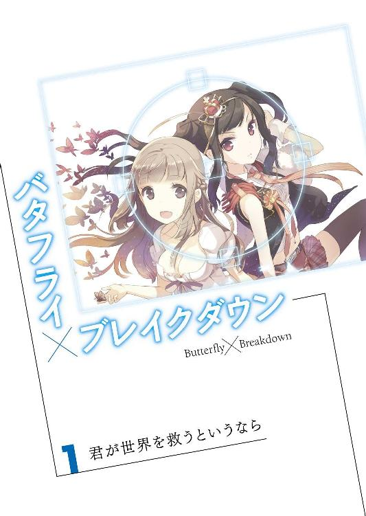
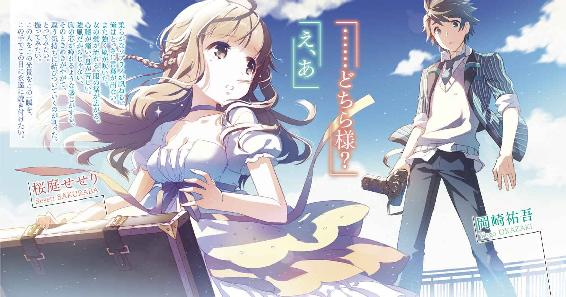
本作品の全部または一部を無断で複製、転載、配信、送信したり、ホームページ上に転載することを禁止します。また、本作品の内容を無断で改変、改ざん等を行うことも禁止します。
本作品購入時にご承諾いただいた規約により、有償・無償にかかわらず本作品を第三者に譲渡することはできません。
本作品は本文縦組で制作されております。ごらんになるリーディングシステムにより、表示の差が認められることがあります。
つながらないものは
何も
何ひとつもない息をつめ、俺はその扉を開いた。
とたん、ごうっと凄まじい音が鼓膜を叩く。風だ。地上六〇〇メートルの世界に逆巻く風が、いっせいに吹き寄せてくる。
そのあまりの激しさに、俺は立ち竦んだ。そして、少しだけ我に返る。
ここは、都会の新名所。
日本で一番高い塔の上。
普通の人間ならば、けっして足を踏み入れられない、風と空にもっとも近い場所。雲にも触れられそうな高さ、声は風にちぎれ飛ぶ。
でも、俺が声を出せなかったのは、そのせいなんかじゃない。
遙か眼下には、広がる大東京。
俺たちの暮らす町も、玩具の積み木が並んだようにしか見えず、車は豆粒、人は砂粒にすら見えない。
風がまた強くなる。
鉄骨の塔の最上階、人の立てる果てにまで俺は辿り着き、そこに、見た。
―――――天女だ。
ひらり、ひらり。
女の服の裾が翻っている。陽光を受けて、更に白い。それと、黒髪。もつれ乱れているはずのそれは、薄青い空の中、何かの羽のように見えた。
―――――羽衣だ。
白と黒、二つの鮮烈な色彩の合間に、女の横顔が覗いている。秀でた額、高い鼻、長い睫、大きな双眸。
綺麗だった。
今まで見たことがないほど。誰とも比べられないほど。
そう。
そこには、女がいた。
よくも悪くも俺の運命を......いいや。
世界の運命を変えてしまった、女が。１
天才ですねって言われたら、天才ですよって答える。
凡才ですねって言われたら、凡才ですよって答える。
流れるまま、お気に召すまま。
それが俺です。
岡崎祐吾です。
と、言うわけで。
齢一五歳にして俺は、自分の欠点をそれなりに自覚していると、思う。
とにかく、ノセられやすい、流されやすい。
ダメ人間ねと決めつけられたら、すぐさま枝振りのいい木を探したくなるし、やんややんやと囃されたら、どんな大木にもスルスル登っちゃう。
「あ、やべ。こんな高い木に登るとかって、無理無理無理。ろくな足場ないじゃん、すっげえ滑るじゃん！」と内心死ぬほど焦りまくっていても、一歩踏み出してしまったなら止められない止まらない。
戦国時代とかの武将に生まれてたら、もう三日と保たなかったと思うね。殿様に「貴様は忠臣中の忠臣よ」とか声かけられて前線放り込まれたら、大喜びでヒャッハーした挙げ句、たちまち首だけになっちまったはず。
けど、幸い、現代日本はたいへん平和で、この性格のせいで生きるの死ぬのの目には遭わない。
そう、思ってたんだが。
東京砂漠は天下の嶮で、世界は自分の見込みよりずっとアグレッシブだった。
それを自覚したのは、中二の春。
俺は写真部の部室で先輩の持ってきたアイドル雑誌などを開き、だらだらどーでもいい会話に打ち興じていた。
「なー、おまえらだったら、誰をどんなシチュで撮りたい？」
「そりゃ、燿奈姫に決まってますよ。でっかい雰囲気たっぷりの洋館とかで撮りたいなあ」
「なにそれ、夢見る乙女か。俺はスーパーユニット31のやっちん一択！ ビキニでお願いしゃす！」
「岡崎は？」
「誰でもいいですけど、やっぱ撮りたいのはヌードですね」
「おお！」
「全裸ですか？ 半裸ですか？」
「半裸をヌードなどと言い張って袋とじ雑誌を買わせるような、そんな汚い大人にはなりたくありません！」
「おおおお！」
「ザキオカ偉い！ 男らしい！」
俺がささやかな賞賛に包まれていたその時、古ぼけたドアが急に開き、顧問の永谷先生が息せき切って部室に飛び込んできた。
「岡崎、喜べ！ おまえの写真、グランドフォト・コンクールで入賞したぞ！」
「は？」
俺は口に入れたばかりの煎餅（校則違反）を取り落とした。それは開いたままのアイドル雑誌（もちろん違反）の上にカケラをまき散らした。
驚いたとも。
それはもう、驚いたとも。
グランドフォト・コンクールっつーのは、老舗写真雑誌の主催する写真コンクールで、未成年・成年の隔たりなく出品できる。けれど、その分、レベル激高。プロ志望の大人を押し退けるのなんてまず無理で、中坊の写真なんか鼻にも引っかけられない。まさに参加することに意義がある......というか、参加した記憶すら俺にはなかった。
「この間見せてもらったおまえの写真があんまりよかったからさー、試しに送ってみたんだ。まるっきり引っかからなかったら、その時は黙ってればいいかなって思って」
てへっというように先生は頭を搔く。三十半ばのおっさんがやっても一つも可愛くない。というか、それが教師のやることか、とツッコんでおくべきだったのかもしれないが、流されやすい俺の上がりやすいテンションはすでにストップ高。
「えっ、すげえ！ 先輩すげえ！」
「プロフォトグラファーとタメ張れるなんて、かっこいい！」
「天才！ 岡崎ちょう大天才！」
「まあね！」
周囲のそんな賞賛も火に油。
「俺ってやつはいつかしでかすと思ってましたよ。自分の才能が怖いっていうか、単なる中学生の枠に収まり切らないっていうかぁ」
これでもかってぐらい胸を張り、俺は鼻高々で木に登る。スルスル、するすると。登った先に何があるかなんて、一つも想像せず。
「で、先生？ どの写真を応募したんですか？」
「これだよ、これこれ」
笑顔全開で先生が差し出したのは、プリントアウトした四六判。
俺が撮った、夜明けの海。
海は濃紺、空は淡い紫と青。空にはまだ月がうっすらと残り、雲が切れ切れにたなびいている。
天才岡崎祐吾さんの面目もかくやという一枚だけど、巨大な問題が一つある。
なのに。
「あ、やっぱり」
「絶対、これだと思った！」
「ライティングといい、アングルといい、絶妙っしょ」
「岡崎先輩の写真の中でも、飛び抜けてますもん」
止まらない賞賛のラッシュ・アンド・ラッシュ。俺の顔色は反比例して、一秒ごとに青く白くなっていく一方。
いやいやいや。
これはまずいでしょう。これだけはやべえでしょう。すぐさまそう言うべきだった。恥を恐れず、その場ではっきりと事実を告げるべきだった。
この写真はたまたま撮れた一枚......いや、それどころか俺的には大大失敗作なんだって！
本当はこの写真の真ん中には、ひとりの女がいた。
ほとんど素っ裸の上半身を海面に出し、朝陽を浴びて佇んでいた。
場所は、おかんにつれていかれた屋久島。
ホテルの前に広がる海が凪いで、まるで鏡のようだった。
本来、相手の承諾を得ずして写真を撮るのは御法度。けど、そんなルール違反は承知の上で、俺は夢中でシャッターを押した。
それぐらい、綺麗だった。
言葉に尽くせないという言葉の意味を、生まれて初めて実感できた。
その罰が当たったんだろうか？ 一〇〇分の一秒差、あるいは一〇〇〇分の一秒差ぐらいの合間に、女はかき消えてしまった。本当にふうっと、波間に溶け失せたかのように。
で、後には海と空の風景だけが残された。
女の正体が幽霊とか人魚とかそういうものだったのかは判らない。何はともあれ俺が撮るつもりだった人物写真は、一瞬にして風景写真に化けちまった。これが事実。
そんな失敗写真は、すぐに破棄するべきだったのかもしれない。
けど、なんとなーくデータを保持し、なんとなーくプリントアウトし、なんとなーく写真部の片隅に積んでおいたんだが......まさか、こんなことになるとは！
「いやあ、先生、ホント鼻が高いわー。俺なんて箸にも棒にも引っかからなかったコンクールで、教え子がこんな快挙を成し遂げるとは」
先生は喜びを通り越して、泣き出した。それにつられたように、写真部員たちが鼻を啜り出したからたまらない。
「俺も」
「俺たちもです」
たちまち部室は喜びと感涙の渦の中。なんだろう、このありえないシチュエーション。春夏の甲子園とか正月の国立競技場とかならともかく、写真部ですよ？ スーパー個人種目の上に、熱血とは無縁なものですよ？
しかし、そのありえなさ故に、俺はますます言い出せない。いっぺん張り付けた得意満面を、引っ込めるタイミングが見つけられないまま。
それでもまだ、ここまでならよかった。
青春のおちゃめな一ページとして心の日記帳に書き残し、もらった賞金でちょっと派手に遊んで終わりにできたかもしれん。
俺の救いようのない頭は、「この栄光を事実にしてしまえばいい」という方向へと転がったのだ。
中二の夏・秋・冬と通して、俺は写真を撮って撮って撮りまくった。そして、これこそ真なる我が傑作と思う一枚を、翌年のグランドフォト・コンクールに密かに送った。
で、どうなったかって？
惨敗だ。
入選にすら引っかからなかった。
「おー、これいいねえ」
「このアングルがきいてる」
「人物はいいけど、風景がいまいちだわぁ」
コンクール展示会場の中、壁際だけが賑わっている。淡い壁紙の上にずらりずらずらと並ぶ写真の前で、誰もが一人前の評論家気取りだ。
中には、頰を染め、「オメデトウ」「アリガトウ」と繰り返しまくってる奴らもいる。入賞者だ。見なくても判る。展示された写真の下、タイトルの横には造花が誇らしげに飾られているだろう。去年の俺のときがそうだったように。
小さく息をつき、俺は自分の作品を見直す。
四ツ切版のフレームの中、夜桜が繚乱と咲いている。白い滝のような枝垂れ桜。浦和の名刹の庭にある古木で、二時間かけて撮りにいったものだった......なのに。
瀬田第三中・岡崎祐吾と書かれた名の横は真っ白だ。何もない。
「残念だったな、岡崎」
ふいに響いた声に、俺は慌てて溜め息を飲み込んだ。振り返ると、先生が俺よりもしょんぼりうなだれている。
「いやあ、まあ......こんなこともありますよ」
よせばいいのに、俺は笑顔を作ってうそぶいちまった。
「去年の作品が大傑作だったからなあ。どうしても審査員のハードル上がっちゃうよな」
少しだけ気を取り直したように先生は言い、ちょっと無理した笑顔を作った。俺はなんとなく頷くだけでこれに応えた。
だけど。
「まあ、おまえはまだまだこれからなんだし。来年また頑張れよ」
続いた慰めには、さすがに頷けなかった。
背後でひときわ高い歓声が上がった。見ると、一人の女が顔を真っ赤にして周囲からの祝福を受けている。とうに二十歳を越してるようなのに、そこらへんで売ってる安っぽいデニムにＴシャツ。顔もちと残念風味だったけど、喜びに輝く表情がハッとするほど綺麗に見えた。
労るように、先生が俺の肩を叩く。
それが俺には何かの合図のように聞こえた。
これが最後のチャンスだ、祐吾。
自分のどこかで誰かが言っている。去年のあれはまぐれもいいところで、今年のこれが自分の実力なんだと白状してしまえ。
しかし。
「あー、まあ。また来年頑張りますわ」
出てきたのは、そんなポジティブ極まる台詞だった。いかにも教師受けのよさそうな。
かくて。
俺はまんまと木の上に登ったはいいが、あまりの高さに目を回し、降りることすらもはやままならぬ豚となり果てた。
個人的には、戦国時代に生まれて討ち死にした方がマシな生き方だったのと違うか、これ？
２
で、次の春。
俺は生まれ故郷の世田谷を離れ、寮のある高校へと進学した。
私立・隅之江高等学校。
略して、クマ高。
東京の下町、川を一つ二つ越せば埼玉に至るという場所に、前世紀半ばからあるという伝統校だ。いちおう男女共学。強力な私立公立が近場にひしめているせいで有名大進学率は年々落ちているらしいが、少子化のご時世になっても募集枠以上の受験生が集まるというのだから、それなりと言っていいと思う。
人気の理由は、この学校が寮を備えていること。
古い校舎のその横には、いっそう古びた寮があった。
全校生徒の三分の一が暮らすその建物の名は、『若竹寮』と『早苗寮』。前者が男子寮で後者が女子寮だ。前者の方が更に古くてボロっちいのはけっして男女差別などではなく、かつてクマ高が男子校だった名残り。若竹寮の方が数十年ほど先に建てられたせいだとか。
入学式を翌日に控えた、三月三一日。
俺は手近な荷物を詰め込んだスーツケースを引きずって、この若竹寮の門をくぐった。
外見と同様、建物の中はかなりクラシカル極まっていた。廊下は軋み、階段の手すりは磨きあげられたかのようにつるつるだ。
しかも、何分かに一度ガガガガという機械音がけたたましく鳴り響き、寮全体が揺れている。見ると、寮の敷地の向かい側でマンションが建設中。○×建設というロゴのどかんと書かれた幕が、風と振動とでゆらゆらしている。安眠妨害まず間違いなしで、あれが完成するまでは辛い住環境を強いられそうだ。
割り振られた部屋へ入る前に、ホール横の大部屋へいくよう指示される。
これまた、古いホテルのエントランスを思わせるような部屋だった。その壁際にスポーツバーもかくやという大型テレビが置かれ、本棚には雑誌や新聞が溢れてる。座り心地よさげなソファはテレビ近くに二つあるだけで、あとは無味乾燥なパイプ椅子と公民館的なパネルテーブルがずらずら並べられているだけ。
日本人の習性なのか、椅子は後ろの方から順々に埋まっており、一番前しか空いていない。俺は仕方がなく、一番前のしかもど真ん中という席へと腰を下ろした。
「よしよし、みんな揃ってるわね、新入生諸君。若竹寮へようこそ！」
ハイテンションな声が響き、一つの人影が交流室へと入ってきた。
「ハロハロ、少年たち。私がここの寮長のアサミちゃんでーす」
ざわりと部屋の中にさざ波が立つ。
すらりとした長身、タイトスカートから伸びたすんなりとした脚、豊かな胸、大きく巻かれた長い髪。丁寧に化粧を施された顔は美女の類に入るかもしれない。
「うっそ、男子寮の寮長が女？」
「そんな、嬉しすぎる」
「すっげー、モデルみたい」
「神様、ありがとう！」
四方八方から押し寄せる、感激の声・声・声。
俺は呆然と目の前に立つ人物へと目を注ぎ、ぽつりと呟いた。
「いや、男じゃね？」
ささやかだったつもりのそれは、意外に大きく響いたらしい。
しぃぃぃん。
熱狂、一転、沈黙。ひきつった顔が俺の周囲を埋め尽くしている。
「そうでーす」
深紅に彩られた唇がにぃっとつり上がる。
「別に隠してなんかないわよ。アサミちゃんはいまどき流行の男の娘で一児の父でぇす。ちなみにフルネームは浅見総一郎とゆいますっ」
「ええええええっ？」
さっきとは違う動揺に、室内は包まれる。
「いや、違うし。男の娘ってああいうんじゃねえし」
「一児の父って情報はいるの？ ホントに必要なの？」
「年いくつなんだよ、化け物か！」
「な、なんでそんなかっこしてるんですか？」
様々な悲鳴や呻きが錯綜する中、何故か彼......で、いいんだよな？ ......は、最後の質問にだけ回答してくれた。
「えー、サービスかな。これから大変な三年間を送る僕ちゃんたちへのサービス！ 寮長が普通にイケメンじゃつまらないじゃない。一見だけでも美女の方が心慰められるでしょう？」
どーかねえ、そのサービス。受け取る側の顔色はいっこうに優れないばかりか、どんどん悪くなっていく一方なんだけど。
「よく見分けられたなあ、あんた」
隣に座ってた奴が、感心したように俺に言う。
いや、俺は先に知ってただけだから。
あの浅見さんはおかんの後輩。あの人とそれからこの学校の理事長が古い知り合いだったからこそ、俺がここへ進学することになったわけ。
「おかげさまでおかーさん、出世しました」
去年の秋、突如そう切り出された日のことを、思い出す。
「しかも、栄転だす」
栄転。
つまり、おかんは昇進と引き換えにいまの勤務地ではないところへ行かなくてはならない、と、そう続けた。
「で、どこへ？」
気軽に訊ねた俺に返ってきた答えは、いまのいままで一度も聞いたことのない国名。南米にある、豆粒みたいに小さい国らしい。国土の半分ぐらいが鉱山で、良質のエメラルドやルビーなんかがわんさかとれるのだとか。
「本当に栄転？ 左遷じゃなくて？」
失礼なことに、俺の南米の知識は日本の真裏に位置してて、サッカーが盛んで密林と山がいっぱいあって、とどめにギャングとかマフィアがやたらいるとか、その程度。
「上の人怒らせるかなんかして、僻地に飛ばされるってことじゃ......」
「違います。本当に栄転だす」
眉をつり上げて、おかんはふてくされる。
こう見えて、某貴金属メーカー勤務。けっこう優秀なバイヤー。それが宝石の原石でいっぱいの国にいく。会社に期待されてのことなんだと、おかんは主張した。
判った判ったと適当にいなすと、すっと冷静な顔になる。怒らせたかと思った瞬間、
「だからね。進学先、この高校にして欲しいの」
そう言って、差し出されてきた一冊のパンフレット。
それが、このクマ高だったわけだ。
学業面でも生活面でも、俺を南米へつれていくのはリスクが大きいこと。かと言って、頼りに出来る親戚も思い当たらないことなどを並べ立てた。
俺に否やはありません。
というか、正直、渡りに船だった。
なんせ、あの天才岡崎（偽）大落選の巻からずっと、永谷先生は都内でも写真部が実績を残してる高校をやたらめったらプッシュしてきていたのだ。
そんなことを、つらつら思ってたら。
「いつまで喋ってんだよ。そろそろ黙って入寮注意聞きやがれ」
ドスのきいた、まごうことなき男の声が降ってきて、あたりは静まり返る。青ざめた一同を見回して、浅見さんは再び美しくも華やかに微笑んだ。
「まあ、世の中文句並べても仕方がないってことを学ぶのは大事なことよ。頑張って」
そう、もっともらしい教訓を垂れたあと、薄い冊子を配った。
朝食七時、夕食一九時半、門限一九時、点呼二一時半、消灯二二時といったタイムスケジュールを始め、罰則規定が具体的に書き連ねてある。
無断の門限破りは停学、三回アウトで退学。
異性を連れ込んだら、即退学。
女子寮内の敷地に足を踏み込むのも、すぐ退学。
喫煙飲酒は厳禁、公序良俗に著しく反するものの持ち込みも禁止。
バイトしたい場合は予め許可を取ること。もちろん、よろしくない職種の場合は不許可。
「もしもこれらを破るようならば」
完璧な笑みのままで、浅見さんは右手を大きく振りかぶった。シュッと風切音をたてて、生徒たちの頭上を何かが通り過ぎる。次の瞬間、ドア近くの壁でびぃぃいんと刃物が身を震わせていた。鋭利な切っ先と漆喰の壁の間には、日本中のご家庭をパニックに陥れる黒光りな昆虫が生き絶えていた。
再び、その場はしんと静まり返る。
浅見さんは何事もなかったかのように、一同に解散を申し渡した。
「想像以上にひでえなあ、ここ......」
「きっついわー、いろいろきっついわー」
ぞろぞろと廊下を進みながら、誰もが口々に不平を漏らしている。俺はそんな嘆きのパレードの最後尾をおとなしく守り、粛々とついていった。
ここで俺は木から降りよう。
どれだけたいへんな寮則だって守ってみせるとも。寮長がオカマだろうが男の娘だろうが関係ない。きっとここで、身の丈にふさわしい暮らしを慎ましくしていくんだ......改めて決意を固め、俺は一歩を踏み出した。
３
四月も半ば、日曜の朝。
俺は息をひそめ、二段ベッドから身を起こす。
下の段では同室の三村が、派手な寝息をたてている。平日なら、朝飯食わにゃと急いで支度している頃合いだが、日曜だけは話が別。食うも食わぬも個人の自由、けっこうな数の寮生がパスする。もっとも予め「朝食いりません」と申告しておかないと、食堂のおばちゃんに怒られ、寮長にお小言を言われる羽目になるのだが。惰眠を貪るのでさえルールが存在するのだから、つくづくここは非情の空間だ。
愛用のデジイチをリュックに詰め、俺はそっと部屋を出る。運動部の連中はとっくに休日練習に出かけ、居残り組は大部分が眠っている。いつも人で溢れている廊下や玄関は、どこか空っぽに見えた。
「おーす、ザキオカ。今日は外出？」
ホールまで進んできたとき、ようやく二年生数人に行き当たった。
「ナンパなら俺も連れてってくれよ」
「あー、おまえいると成功率高そう」
「やだなあ、先輩方ったら。俺がイケメンだからってそんな。図書館で勉強ですよ、勉強」
からかう声を背に受けて、足早に外へ出る。
背中のデジカメのことは誰にも知られたくない。クラスにもぽつぽつと仲がいいと言える相手が出来てきたけど、俺が写真を撮るってことは誰にも教えてない。
「あら、ゆうごくん。外出届けはちゃんと出したですか？」
玄関横の小さな菜園にしゃがんでいた人影が、しゃんと立ち上がってこちらを見上げる。俺の腰よりちょっとでかいだけの上背、丸く大きな目と整った顔は父親そっくり。
「ああ、灯子ちゃん。昨日中に出したよ」
「とおこちゃんじゃなくて、フクリョーチョーと呼びなさいですよ」
小さい体をめいっぱい反らし、浅見灯子ちゃんは言い放つ。
「はい、副寮長」
俺は苦笑いしつつも、そのご要望にお答えする。
満足そうに笑って、彼女は土のついた手を払う。言葉も仕草もしっかりしていて、とても小学校にあがったばかりには思えない。以前に会ったときはまだまだ赤ちゃんぽかったのに、いまはちゃんと女の子だ（その話を持ち出したとき、「レディにむかし話をするなんて。デリカシーのない男ですよ」と膨れられたが）。
「今日もしゃしんですか。えっちなおんなのこをとるですか」
さらっと俺の品位を踏みにじってくれるな、この子。
「撮りません。撮らせてくれる相手もいません」
「あいてがいたらとるですか？ なにげにサイテーですよ。ちょっとイケメンだとおもってチョーシくれたらいかんですよ」
いっぱしの口ぶりで灯子ちゃんは続ける。
「それより、モンゲンはしちじですよ、おくれんなですよ？ おくれたらすぐさまぶっころすですよ？」
「こら、とおこちゃん」
でかい肥料の袋を抱え、浅見さんがやってきた。つばのやたらとでかい帽子に日除けの布まで垂らした農婦さんルックだけど、やはりちゃんと美女に見えるあたりがけしからん人だ。美女が一〇キロの肥料を四つも運べるかは怪しいところだが。
「とおこちゃんにとって、寮生さんたちはなんですか？」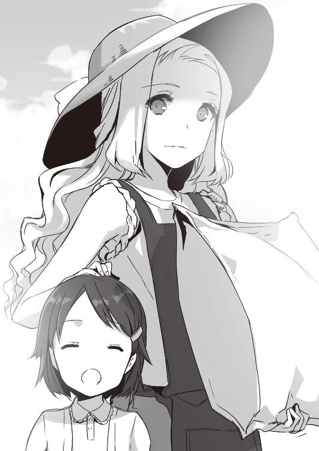
娘の頭を撫でてやりながら、浅見さんは優しく囁く。
「だいじなメシのタネですよ、ぱぱ」
「だったら、もっと優しく丁寧にしてあげなさい。ね？」
「はぁい」
素直に頷いて、灯子ちゃんは俺へと向き直ると、天使のような笑顔でのたまった。
「もんげんにおくれたら、ていねいにあの世へおくりこむですよ」
いや、幼女が他殺を公言してることに代わりはないと思うが......
「肝に銘じときます」
深々と一礼し、足早に去ろうとした俺を浅見さんは呼び止めた。
「いまのところ、目に付いた異常はないけど、くれぐれも気をつけてね。困ったことがあったら、なんでも相談して。私、がんばって微力を尽くすわ」
艶やかな微笑みで続ける台詞が、
「でないと、あなたのママに私が殺されちゃうもの」
これだもん。会話の中で人の命がいちいち軽いなあ......。
とりあえず礼を述べ、呆れとも感心ともつかないだろう表情を読み取られる前に、駐輪場からクロスバイクを引っ張り出して跨る。やや整備不良気味のタイヤが軋むけれど、強くペダルを踏み込めばたちまち古い寮が背後へ消えていく。
風が気持ちいい。
鬱陶しい信号や歩行者に煩わされたくなくて、俺は土手のサイクリング道を突き進む。銀輪が音もなく回り、体はいっそう加速する。
クロスバイクを走らせ続けて、三〇分ほど。
目指す被写体は、ほんの少し先。東の空を貫くように聳えている。
大江戸スカイタワー。
つい最近、完成したばかりの電波塔だ。
俺の実家は同じ東京でも多摩川沿い、神奈川との県境きわっきわでさすがにスカイタワーは望めない。だから、あれを間近に見たのはクマ高に入ってから。
デザインとしては東京タワーの方が断然好きなんだけれど、なにせ人気の被写体。絵になることこの上ないフォルムだ。あれだったら、いまの俺でも「よっしゃ撮ろう！」って気になるかもしれない。
「かと言って、あんまり近いとかえって撮りづらいしな......」
敢えてタワーの間近はパスして、ちょっと離れるようにして建っているビルを目指す。ときどき止まっては振り返り、角度を確認する。
このあたりに来たのは、入試の下見以来、まだ二度目。道は入り組んでいて、正直、判りづらい。
けど、俺は記憶力だけには自信がある。
一度見た「風景」は何故か絶対忘れない。歩き回ったりチャリに乗ったりで通ったところはたいてい一発で正確に、電車や車の車窓から見たり、テレビで見かけたりするだけでもなんとなく覚えている。子供の頃から、写真や地図を眺めてたせいで身についた、ささやかな特技だ。俺はそれを生かしつつ、欲しいショットを想像しながらバイクを走らせた。
一〇分ほどあちこち走り、ついにここと思う古いビルを見つけた。管理室に声をかけて、写真を撮らせて欲しいと頼む。たいていは一度で済まず、二度三度と断られては次のビルを探すのを繰り返すんだけれども、今日はついていた。管理人がおばちゃんで「あら、可愛い子ね。写真？ いいわよいいわよ、好きなだけ撮りなさい」とか言って屋上に上がらせてくれたのだ。こういうときは、それなりに見栄えよく産んでくれたおかんに心から感謝する。
古いドアの向こう、広がるのは淡い青空。
無数のビルの窓がまだ高い陽に照り返り、長い影がアスファルトを覆い隠す。
俺は上機嫌でカメラを設置し、レンズを向けた。白から青へのグラデーション、建物の続く彼方、思い描いたようにタワーが佇んでいる。
昔、「東京には空がない」とか言った人がいるそうだけど、たいがい失礼な話だ。これはこれですごくいい空なのにな。
それからスマホを引っ張り出し、カナル式のヘッドフォンを耳に突っ込む。都会の雑踏が消え去って、お気に入りの歌が流れ出した。クアトロAってアイドルのデビュー・シングル。軽快なソプラノとメゾソプラノ、それに柔らかなアルトが重なり合い、華やかな楽曲が明るい空いちめんに弾けていく。
こうして、ファインダーを覗き、好きな曲を聴いて、一日を過ごす。それがとても好きだ。たまらなく贅沢な時間。青空はやがてゆっくりと色を変えていくだろう。雲がかかり、黄昏れて、夜がやってくるのだろう。そのゆるやかな移り変わりをみつめ、シャッターを切り続ける。
そのときは、そのときだけは自分が地球の中心にいるような気分になる。俺のいるところが世界の真ん中、かすかなシャッター音が俺の鼓動だ。
まずは遠景で数枚、それから思いっきりズーム。
向こう数年分の誕生日プレゼントとクリスマス分だからと買ってもらった五〇〇ミリ超望遠レンズの実力が発揮され、タワーの壁面が手に取れそうなほど近づく。
......だけど、それだけだった。
シャッターにかけたままの指先に力が入らない。
理想通りの構図がファインダーの向こうに広がっているのに、いま俺は世界の中心にいるはずなのに......俺はぴくりとすら動けぬまま。
口惜しい。
そう思う。
と、同時に、別にそれでもいいじゃん？ とも思う。
もう写真なんて撮らなくてもいいし、撮っていることを知られたいとも思わない。コンクール？ もう二度とごめんだっつの。
だったら、ここでシャッターが切れようが切れまいが関係ない。そのはずじゃないか。
そうして、どれぐらいたった頃だったか。
ひらひら。
タワーの最上部、展望台の屋根の上で何かが動いた。
「......鳥？」
白い。
けど、鳥にしてはでかい。
目を凝らし、俺は小さく叫んだ。
「まさか、人影？」
高さ数百メートルの展望台の屋根の上に？
や、落ち着け、祐吾。ありえない話じゃないだろ。点検員とか窓磨きの人とかが仕事に励んでおられるのだ、たぶん。
ほとんど恐る恐る、俺はズームし続け、拡大ボタンを押した。小さなディスプレイに映し出される、最大ズームの世界。そこにありえない光景を見つけてしまった。
そこにいたのは女だった。
点検員などではなく、ごく普通の格好の女。
ひらひらと見えていたのは、その女のワンピースの裾。それに、髪。それが風に靡き、はためき、舞っている。
「まさか......」
しばしの呆然。
それから俺は猛烈な勢いで荷物をまとめ、ビルを駆け降り、クロスバイクに飛び乗った。来たとき以上の熱意でペダルを踏み込み、スカイタワー目指して走り続ける。
なんで？ どうして？ あんなところにあんな服装の女がいるんだろう？
４
一〇分ほど漕ぎまくり、タワーの足下まで辿り着いた。駐輪場にバイクを潜り込ませ、リュックを担ぎ直して走り続ける。
日曜だってのもあり、タワーの正面エントランスはかなりの混みよう。特に展望室へと続くエレベーター前にはそれなりの列が出来ている。三千円という料金に目を剝いたが、まさか歩いて展望室へいくわけにもいかない。仕方なく払って、更に上を目指す。
展望室に来るのは俺も初めてだ。
強化ガラスの向こう、東京が......いや、関東全域が広がっている。さっきとは比べものにならないくらいの、広さ。さすがの東洋一の高さ、遮るものが一つとてない町の光景ってのを初めて見た気がする。けれど、俺の脳はその新たな絶景にさほど反応しない。さっき見た女の姿を確かめたい。ただ、その一点だけでいっぱいいっぱい。
目を走らせると、「スタッフオンリー」という扉が片隅にある。思わずノブに手をかけようとしたが、目的のものがそこにない。普通、ノブがついてるはずのところに、ぽっかり穴が開いている。
「なんだ、これ？」
想像以上に重い扉へ肩を押しつけるようにして、開く。一転、そこは地味な世界。グレイッシュで無機質な廊下が続いている。
俺は恐る恐る、一歩を進めた。何かのスパイ映画みたいに、あたり一面に赤外線が張り巡らされていて、警報がジリジリ鳴り出したりしねえよな？
おっかなびっくり歩き続けると、また扉があった。
今度もノブはない。穴の中へ手を突っ込み、ドアを押す。
息をつめ、俺は扉を開いた。とたん、ごうっと凄まじい音が鼓膜を叩く。風だ。地上六〇〇メートルの世界に逆巻く風が、いっせいに吹き寄せてくる。
そのあまりの激しさに、俺は立ち竦んだ。そして、少しだけ我に返る。
ここは、都会の新名所。
日本で一番高い塔の上。
普通の人間ならば、けっして足を踏み入れられない、風と空にもっとも近い場所。雲にも触れられそうな高さ、声は風にちぎれ飛ぶ。
でも、俺が声を出せなかったのは、そのせいなんかじゃない。
遙か眼下には、広がる大東京。
俺たちの暮らす町も、玩具の積み木が並んだようにしか見えず、車は豆粒、人は砂粒にすら見えない。
こんなところにあんな軽装の女がいるとかって、無理だろ？ あれ、ちゃんと生きてる人間だったのか？
屋久島の海で見た、女の姿が脳裏をよぎる。
さっきまでいたはずの女と、いてはならないところにいる女。どちらも、不吉だ。普通じゃない。
だけど、俺の足は一歩を踏み出していた。
声が聞こえてきたのだ。
「......て、......よ」
風の合間から、空に散っていくように儚い女の声が。
「......んで......じゃ......」
俺は白い手すりを握り、そのまま前へと進む。鉄板をいくつも渡し組み合わせたような足場は、いままで通ってきた明るく華やかなタワー内部とあまりに違う。ただただシステマチックで無機質だ。
眼下に広がる東京の景色が、細かく震動している。いや、俺が震えてるのかもしれない。
風がまた強くなる。
鉄骨の塔の最上階、人の立てる果てにまで俺は辿り着き、そこに、見た。
―――――天女だ。
ひらり、ひらり。
女の服の裾が翻っている。陽光を受けて、更に白い。それと、黒髪。もつれ乱れているはずのそれは、薄青い空の中、何かの羽のように見えた。
―――――羽衣だ。
白と黒、二つの鮮烈な色彩の合間に、女の横顔が覗いている。秀でた額、高い鼻、長い睫、大きな双眸。
綺麗だった。
今まで見たことがないほど。誰とも比べられないほど。
けど。
がっこん！
天女は白いほっそりとした指先をきっちり揃え、それを大きく振り上げては下ろし、振り上げては下ろしを繰り返している。
「んもーっ！」
がっこんがっこん！
その拳に打ち据えられ、無様な音を立てているのは革張りの小さなトランクだった。
「どーして動かないのぉ、どうして？」
がっこんがっこんがっこん！
鈍い音を立てて、トランクが軋み踊る。
なんというか、あれだ。うちのおかんが動かないレンジとかにチョップするのとそっくりだ。そんなことしたってもっと壊れるだけだと何度たしなめても、まずは殴る。これが昭和女の習わしなんだと本人は主張していた。
て、ことは目前にいるこの女も一見俺と同じ年ぐらいに見えるけれど、実はものすごく年がいってるのか？
「直ってぇ、いますぐ直ってー！ でないとわたし、困りますぅぅっ」
強風にちぎれんばかりだった声は、いまや切実な響きを伴っていた。けど、トランクにひたすらチョップを食らわす様子はどう見ても喜劇的。やってるのが美少女なだけにおかしさ倍増状態だった。
どうしよう......
必死になってバイクを駆り、高校生の財布には痛すぎる入館料を払い、ここまで辿り着いたのはいいものの、見つけたのはおかんライクな天女って。期待外れっちゅーか、ものすごい損した気分。
俺が思わず数歩後じさったのと、女がぐりんと振り向いたのは、ほとんど同時。
涙を溜めた両眼は、やや淡い色合い。光をはらんだ滴の合間から、まっすぐ俺をみつめてくる。
「......どちら様？」
「え、あ」
柔らかなソプラノが訊ねる。俺はとっさに言葉が出ない。
また強く風が吹いた。
女の髪が流れる。服の裾が広がる。
心臓が痛い、息が苦しい。強風だからじゃない、胸の芯が痺れるような感じがする。
そのときめきがやがて、違う気持ちに結びついていくのが判った。
とってみたい。
撮ってみたい。
この人をこの光景をこの一瞬を、この手でこの目に永遠に焼き付けたい。
偽の栄光の前に敗れ去った時からもうずっと、一度も感じたことのない気持ち。
「あの......」
カメラバッグを強く握り、俺は彼女へ一歩を踏み出す。少しだけ声が震えた。突然、「君を撮らせてくれませんか」なんて言ったら、怪しまれるかな？ なーんて必死に考えたせいで、俺はおもいっきり失念していた。
自分がいまどこにいて、どういう立場に置かれているかってことを。
「ちょっと、君たち！」
背後にはけたたましい、足音。開け放ったままのドアから、四人の男が飛び出してくるのが見えた。ダークグレーの制服に身を包み、同じ色の帽子を被った屈強な大人たち。警備員だ。しかも、かなり強そうな。
「しまった......」
思わず漏らした呟きを、天女は聞き逃さなかったらしい。
「追われているのですか？」
緊迫した声で訊ねられ、返答に困る。別に追われてはいない。けど、この状況で捕まったらどれだけ説教されるか判らない。でもそれは、お互いさまじゃね？ ......というようなことを、説明する間は俺になかった。
「大丈夫、お助けします！」
真剣な面持ちで女はトランクを右手で摑んだ。空いた左手が俺の手を取る。
絡みついてきた指の儚い細さとふんわりとした感触に、心臓が高く跳ねる。声も出せず、だいぶ低いところにある女の目をただ窺うばかり。
「大丈夫！」
力強く繰り返し、女は飛んだ。
目の前のフェンスを軽々と乗り越え、俺をがっしと摑んだまま。
「うぎゃああぁぁあぁぁぁあああぁ！」
ぐん、と視界が加速する。いや、加速してるのは俺の体だ。タワーの白い壁面が流れ落ちる滝のように見えた。強風で息が詰まり気が遠くなった瞬間、今度はぐん！ と腕が伸び、そのまま停止した。
とっさに閉じた目をなんとかこじ開けると、完全停止したタワーの壁、ついで、吊り下げられた自分の体が見えた。恐る恐る眼下を確かめると、爪先の下は空っぽで、更に遙か下に人影が蟻のように蠢いてるのが見えた。見ろ、人がゴミのようだ......とか言ってる場合じゃねえ！
「ちょっ、これっ！ なにこれっ！」
「ごめんなさい。いま重力制御装置とか使えないんでした。いやはや、うっかりうっかり」
俺を摑んだまま、女が小首を傾げる。伸びきった細腕は俺の右手をしっかりと摑み、もう片手は細い糸のようなものを握ったまま。
「あんた、これどうすんのっ、どうなるのっ？」
「大丈夫大丈夫～。ちょっと大人しくしてて下さいねー」
のんきな声と共に女はぐいと糸を引いた。その動きに合わせて女の体が上昇していく。摑まれたままの俺も必然、ぷらんぷらんとぶら下げられつつ、女の左手で引きずり上げられた。うおー、足下がスースーで腹の底が冷や冷やでタマがきゅんとするぅ！ 視線を上げれば上げたで、女のスカートの裾と白い脚がくっきりと見えて落ち着かない。頑張れば、スカートの中まで見渡せたかもしれないが、あいにく、いまの俺にはそっち方面で頑張る余力がなかった。パニック起こして暴れ回りたい気持ちを、押さえ込むだけで精一杯だっての！
「はーい、到着」
生きた心地がしない数分ののち、朗らかな女の声と同時に、足の裏にしっかりとした感触が返る。
やれやれと目を開き、俺は更に悲鳴をあげた。
俺たちがいるのはタワーの展望台のすぐ外側に突き出した、鉄骨の縁。ガラスの向こうにいる人たちがまるで珍獣でも見るような目でこちらを眺めている。その人垣の向こうには、さっき見かけた制服群もいた。
「残念ですけれど、ここからは走って逃げましょう」
握ったままの手に力をこめ、女は走り出した―――俺を完全に引きずって。
いや、最初は俺だって一緒に走ってた。強風に足を震わせながら頼りない鉄骨の上を恐る恐る進み、外階段に辿り着く。そのへんで女がぐんと加速したのだ。どこかにモーターついてるのかって勢いで。
「わああああああ！」
またも、悲鳴が自分の喉を割る。
踏み出す一歩が宙に浮く、床を蹴り付けたはずの足が頼りなくもつれた。さっきの剛力といい、この女ってどうなってんだ？ 一八〇センチ六九キロの体が、まるで五月の鯉の吹き流しみたいにぶんぶん振り回されてるんですが！ 角を曲がるたび、ずがんどがんと俺のどこかが引っかかる有り様だった。
「いだだだだだだ！」
女はまったく振り向かない躊躇わない。観光客満載のロビーを避け、人影のない非常階段を突き進む。まさかこいつ、六〇〇メートルかそこら全部階段で降りる気なのか？
何階何十階を降りたか、すっかり判らなくなってきた頃。
「もういいかしらー」
ぴたりと女が止まる。俺の体も床に打ちつけられて止まる。ずたぼろになったぬいぐるみみたいに、ぶらんと。
女は真剣真摯な眼差しであたりを見回し、非常口と書かれたドアのノブを握った。
「そんなところ、施錠されてるに決まって......」
俺の非難は最後まで行き着かない。
ぐかばきゃべきょっ！
複雑な音をたてて、ノブがドアから抜けた。ドアが大きく軋み、それからゆっくりと開いていく。
俺はこれ以上はないってほど目を見開き、女とドアに何度も視線を行き交わせた。
間違いない。ドアは木製じゃない。鋼鉄かそれに準じるもので出来てる。
女はロボットじゃない。なめらかな指先もほんのり伝わった体温も、生きてるものの証拠。というか、現代科学でフルスピードで階段駆け降りられる人型ロボットなんてできっこないだろう。アシモが走って褒められてるってレベルなのに！
「さあ、行きましょう！」
あっけにとられて立ち尽くす俺に、お見事な器物破損をしてのけた女が笑いかけてきた。あくまで優しく、柔らかく。
５
目先がまだフラフラする。
足が地面についてる感じがしない。
それでも、俺は無事、地上に立っていた。タワーの長い長い影が、自分の上に落ちかかってきている。
「よ、よく逃げられたなあ......」
エスカレーターで一度警備員に捕まりかかり、出口で係員に追いかけられはしたが、とにもかくにも脱出できた。タワーサイドにあるショッピングセンターに紛れ込んで、駅の反対側まで抜ける。駐輪場に置いてきたクロスバイクが気がかりだけど、いまはまだ回収にいけないよなあ。
「本当によかったですね、ちゃんと逃げられて！」
買い物客の波に流されつつ、女が笑う。
ありがとう、と、言うべきなんだろうか、この場合？ 三千円以上払って登ったタワーから、力いっぱいダイビングした挙げ句、クリフハンガーもかくやという勢いでぶら下げられ、果ては命の危険に晒されつつ駆け降りる羽目になるほど、俺が悪いことをいつしたんだろう？
「俺は別に追われてねーけど......」
あがりきった息をひーひー言いつつ整えて、俺は目だけで女を見た。
「えっ？」
たちまちこわばる、白い顔。
「だって、さっき軍人さんがすっごく怖い顔してやってきてたじゃないですか」
「軍人？」
この国にそんなものいない。自衛官さんなら何十万人もいるけれど。
「あれは警備員じゃねーか」
「警備員さん？」
「俺たちが立ち入り禁止のところにいたから、説教しにきたに決まってんじゃん」
「立ち入り禁止......」
ああ、と、天女様は深々と頷いた。
「だから、鍵かかってたんですね」
やっぱり、あんたが壊したのか......最初に見たドア二つも。
「ごめんなさい。そもそもこの時代は平和なんでしたよね」
困ったように彼女は笑った。
「もしも捕まったら、全身の皮を剝がされた挙げ句、沈みそうで沈まない案配の浅瀬の海に昼夜に渡って漬け込まれるのかと思いまして」
「この時代って」
俺は自分の手を見下ろして、溜め息をつく。女の手の痕がくっきり残ってて、まだ少し痛むぐらいだった。
「まるで、違う時代のことをよく知ってるみたいな言い種だな」
「え」
びくりと体を震わせて、天女様は俺を見た。まじまじと見た。穴が開くほど見た。
「あなた......何をご存じなんです？ もしかして、わたしの前任者に会ったことでも？」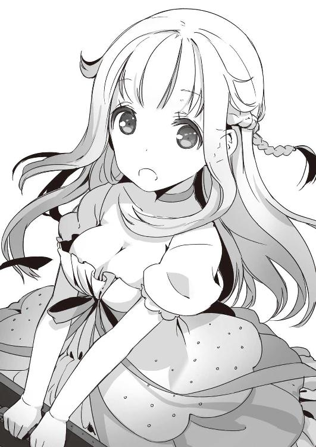
「は？」
「そうですよね。彼女たちがこのあたりで行方不明になって、もう一年半。現代人の協力者の一人や二人、いてもおかしくありません」
勝手に納得し、うんうんと頷いている。が、俺には何がなんだか。そうですよねって、何がそうなんですか？
「でも、どうしましょう。わたしもこの時代に着くなり事故に遭ってしまいまして。相棒の女史は行方が知れず、頼みの綱のナビシステムも不調でいっこうに本部と連絡が取れないのです。このままでは、二次遭難......いえ、我々の任務が果たせませんっ」
喋ってるうちにテンションが上がってきたんだろう。声は高まり、涙混じりになっていく。
「最初のＸデーは二〇一三年の五月上旬。この日を無事に切り抜けられなければ、世界が滅びます。二〇〇万年余の努力を水泡に帰すわけには......それだけはこの桜庭せせり、修復士として断固として許すわけにはっ」
どうしよう。天女つーか、ただの電波さんだよな、この人？
俺は更にまじまじと相手を見てしまった。
ほんのり栗色がかった、まっすぐな髪。上では真っ白に見えていたけれど、実は淡いクリーム色だったワンピース（それでも、洗濯たいへんそうだ）と、確かにちょっと浮き世離れしちゃいるが、それだけにすごく綺麗で儚げな美少女だというのに......
係わらない方がいい。
本能がそう叫んでる。この女はヤバい。絶対にトラブルの元になる。というか、もうなってる。タワーから飛び降りた上に、鋼鉄のドアぶち抜く相手なんだぞ？ そりゃあ、ちょっと......いや、だいぶ綺麗で撮ってみたいなあって思ったけど。いまも端で見てる分には天女さまみたいだけど。
「あの、すみません。俺、君が何をおっしゃってるのか皆目判りません」
飛び出た台詞は思わず敬語。
「え？」
怒濤の如く放たれていた女の言葉が、ぴたりと止まる。
一歩二歩と後ずさり、淡い瞳がきょろりと右を見、次に左を見、それからしばらく宙を泳ぐ。
「あ、いや、これはうっかりうっかり。わたしは別に怪しいところは何一つとてない、現代生まれ現代育ちの人間です。本当デスヨ？」
うん。
そう言ってもらえた方が助かる。なんか無理矢理感漂ってはいるが。
「あ、これ。身分証明書です。ご覧ください」
女はアハアハと笑いながら、一枚のカードのようなものを差し出した。俺はそれを受け取り、目を落とす。
「日本国文部科学省文化庁時軸管理局、一級時軸修復士・桜庭せせり......」
「あああああっ」
彼女はばびゅんと走り寄り、俺の手からカードをひったくり裏側をめくった。そちらにはもう一枚保険証らしきものが貼りついている。同じ「桜庭せせり」という名と、あとは北海道札幌市の住所が見慣れた体裁で並んでいた。
「ほら、現代人！ 普通の女の子デスヨ！ 間違いないデスヨ！」
言い張る声は上擦り、目はぐるんぐるんと泳ぎまくっている。二重三重に怪しい。
「の、喉乾きましたね。何か飲みましょうかね。あれ、飲み物売り場で間違いないですよねっ？」
電波様は必死に目を逸らし、右手と右足同時に出しながら、ジュースのスタンドへと寄っていった。
「えーと、おすすめはどれでしょう？ マンゴージュース？ では、それを二つ」
「あ、俺の分は別に」
「いいから。いいから。わたしに奢らせてください。現地通貨はちゃんとあります。ほらっ！」
胸を張り、彼女は自分のポケットから緑の紙幣を何枚か引っ張りだした。
確かにまあ、お金なんだが......残念。それはドルだ。
「それ、両替しないと使えない」
「えっ、ではこっちですか？」
言いながら、今度は青い紙幣を取り出してみせる。うん、今度はユーロだね。
「これはどうでしょう？」
「なら、こっちは？」
「今度こそ正解ですよねっ」
首を振る俺の目の前に、彼女は次から次へと紙幣を差し出してみせるのだけれど、エリザベス女王が描いてあったり、毛沢東が描いてあったり、見たこともない鳥が翼を広げていたりで、もうどれが何円相当なのかすら俺には判らない。
「どれもこれも銀行で両替しないとダメじゃねえかよ。特に高額紙幣」
簡単にヒラヒラさせてるが、中には五〇〇ユーロって書いてあるのも。そんなすごいのユーロにあったのか。めっきり円高の昨今ですが、それでも五万円相当ってことじゃんね。
「両替......」
目を見開き、電波さまは首を大きく傾けた。
「どこでしたらいいでしょう？」
「銀行に決まってんだろ、銀行に。ちょっとあんたホントに大丈夫？ 北海道でも東京でもこのへん同じじゃないか」
「そ、そうでしたね。銀行でしたね！ ええと、この近くにありますか？」
「日曜にやってるわけねえだろ......」
「う」
不信に満ちた俺の視線を受け、桜庭せせりは口ごもる。使えない大金を握りしめ、しばらくわなわなと体を震わせていた。
が。
「ああああああんっ」
突然、がくりとへたりこんだ。
「たいていのことは札束でどうにかなるって思ってたのに！ 思ってたのに！」
身も蓋もないことを叫び、彼女は頭を抱えてなおも喚いた。
「何も判らないんです！ リモートシステム壊れちゃって、細かいこと全然判らないーっ。わたし、次、どこいけばいいの？ 前任者はどこいけば会えるの？ どうしたらその人のこと見つけられるんでしょおぉぉぉぉ？」
「それなら、早く札幌に帰った方が」
「札幌なんて生まれてこの方行ったことありません！ あれは仮の身分ですっ。わたしは二二一二年東京特別区生まれです」
「ええええ」
ついにはっきり言い切りやがったよ、この人......。
しかし、二二〇〇年生まれとか言い切られたらられたで、反応に困る。
「しっかりしろ！ 現実を見据えろ！ で、北海道に帰れ！」
必死で言い諭す俺に、女はぶんぶん頭を振りまくった。
「現実です、これが現実です。信じられない。初仕事でこんな失敗するなんて......ああ、これはこのままここで死んでしまえという神のお告げかしら？ いいえ、そんなことない。もしも本当に死ぬべき運命ならば事故ったときに首か背骨の一本二本は折れて、ずるっと全身赤剝けるぐらいになっていたはず！ これはここで頑張れという啓示に違いありませんっ、ファイト自分っ！」
ぼろっぼろ涙をこぼしながら、前向きなんだか後ろ向きなんだか見当つかないことを、電波様は口走り続ける。
俺はどうしたらいいのか判らず、その姿を呆然と眺めるだけ。
そうするうち、少しずつ周囲の視線が集まってくるのが判った。観光客らしい着飾ったカップルも、地元の人らしい買い物袋提げたおばちゃんも、小さな子供の手を引いた家族づれのお母さんもチラチラと、あるいはまっすぐに俺たちの方を見ている。
「ママー、あのお兄ちゃん、お姉ちゃんのこと泣かしてるー」
「しっ、見ちゃいけませんっ」
という短い会話を耳に挟むに至って、ようやくいま世論が「俺が電波様に何か悪さをしている」という方向で固まりつつあるのに気がついた。
すまん。
これ以上はいろいろと無理だ。
俺はバックステップでその場を飛び退こうとした。
が、その俺の足に細い指が巻き付いた。それはもう、がっしりと。見る間にバランスを崩す、俺の体。受け身を取る間もなく、俺は煉瓦敷きの道路へと倒れ込んでいく。
「ふぎゃあ！」
「助けて下さい！ わたしを助けて下さいっ」
「それはこっちの台詞だぁ！ 離して、そして、俺を助けて！」
「わたし、この時代のことろくろく知りません。どうやって任務を全うすれば......いいえ、この後、どこで寝ればいいのかすらよく判りません。お願い、あなたのおうちにつれていって下さいーっ」
「無理無理無理！ 俺、寮暮らし！ 女なんか連れ込めるかいっ」
「そんなぁ」
「いいから、北海道に帰れ！」
「北海道は関係ないんですってばぁ！ この時代に私の家はどこにもないんですーっ」
「さっき『自分は普通の女の子デスヨ』って言い張ってたのに」
「普通です。普通ですとも！ ちょっとおちゃめな二三世紀生まれ！」
「無茶言うな。普通の女、大の男摑んでタワーからダイブとかせんわ。鉄製のドアぶち抜いたりできないし」
「んもぉ！ あなたはわたしの言うこと信じてるんだか信じてないんだか、どっちなのですかっ」
「どっちでもいいから、離せぇぇぇっ！」
地面の上でハイティーンの男女がゴロゴロ揉み合ってるとかって、なんなの、この無惨な構図。衆目が痛い。さっきの比じゃないぐらい痛い！
「離したら逃げるでしょう？」
「あったり前だぁっ。自称未来人になんて係わってられっかっ」
「じゃあ、自称じゃないことを証明すればいいんですね？」
存外、シリアスな声が耳元で響く。
見ると、いつの間にかあの繊細で綺麗な顔が俺の間近に迫っていた。吐息がかかるほどに、近く。
「今夜、博多湾沖で船が炎上します」
ほっそりとした顔の中、艶やかな唇が動いて、囁きを紡ぎ出す。
「大型のタンカーでフィリピン籍のものです。二〇時過ぎに火を出して、明け方頃に沈没することになるはずです。対応が早かったため、死者はゼロ、負傷者三名」
厳かな声色、一直線に注がれてくる視線には不思議と力があって、俺は目を逸らせない。
「ここの金の色柄も知らないくせに、どうしてそんなこと判るわけ？」
ようやく反論を絞り出し後ずさろうという俺に、彼女は必死に食い下がってきた。
「細かい生活の知識はリモートシステムでその都度データを与えられますが、大きな事件は予め頭の中に入っています」
「最初はあんなに隠そうとしていたのに」
「本当は滅多に漏らしてはいけないことなんですけれど......この状況で現代人の助力を得られなければ、もっと大事な任務に支障を来すと判断しました」
「失敗すると、どうなる？」
「二〇〇年後の世界が崩壊します。その結果、たくさんの人が死ぬことになるかもしれません」
重々しい口調で、静かな眼差しで、彼女は告げた。
「もしも、わたしの言ったことが噓だったなら、今日見たことも聞いたこともすべて忘れて下さい。でも、もし本当なら」
――――どうか、信じて下さい。
６
門限まであと一時間を残し、俺は寮へと帰ってきた。
あれほど晴れ渡っていた空がいつの間にか雲で覆われ、あたりはめっきり暗い。夕陽の名残りもろくになく、すぱっと幕でも下ろしたかのようにさっさと夜になってしまった。
なるべく意識すまいと思っていたのに、ことあるごとに外の様子を窺い、時計を確認してしまう。
いつもより人の少ない食堂で質より量を地でいく夕飯を詰め込み、俺は歴史の教科書を紐解いた。
二〇〇年後の世界が崩壊するって言われても、よく判らない。なら、二〇〇年前の世界ってのはどんな感じだったのだろう？
「一九世紀の初め、かぁ」
ヨーロッパではナポレオンがロシアにカチコミかけにいき、新大陸ではイギリスとアメリカの間で戦争が勃発。日本は江戸時代で、文化九年。徳川家斉という人が一一代将軍をやってた頃になる。
うん、やはり実感はわかない。
でも、自分がいまの時代からチョンマゲ結ってた時代へ出かけて仕事しろって言われたら？ それが簡単じゃないことぐらいは想像がつく。
俺は諦めて教科書を閉じ、一階へ向かった。風呂入ってリフレッシュしよう。三〇分で追い出されるけど。
ぎしぎしと軋む階段を下り、寮生たちで賑わう部屋を目指す途中、古い窓がガタピシと派手に鳴り出した。ぶ厚いガラスにぽつりぽつりと水滴がこびりついたかと思ったら、シャワーをぶっかけられたかのように雨が流れ落ちていく。
「うっわー、まるで嵐だな」
「外出延長組、気の毒に」
「俺、さっさと帰ってきててよかったあ」
安堵する寮生たちの横で、俺はひとり落ち着かない。
あの女――――桜庭せせり。
あいつ、変なトランクしか持ってなかったけど、雨具はあるのか？ 東京の地理をまったく把握してないらしいのに、どこで雨宿りしてる？ ドルだのユーロだのしかないのに、あの後どうしたんだろう？
ちらりと見た時計は八時半を少し過ぎたあたり。タンカーが沈むという予言の時までまだ間がある。
もしも、あの電波さまのおっしゃる通りに事故が起きたら、明日の放課後、別れた場所でまた会う。それが、俺とあいつが決めた......いや、あいつにほぼ一方的に決められた約束。
「来てくれなかったら、たぶん死にます。ほんと、生きてられないですぅぅぅ。東京砂漠の砂粒となって、生まれた時代に到達できるまで二〇〇年余を待って待って待ちわびるしかありませんー」
と涙ながらに訴えられ......いや、脅されて俺は屈するしかなかった。それでなくても泣く女というのは扱いづらいことこの上ないものなのに、肩を震わせ見上げてくる様がいっそう哀れを誘うもんだから、どうにも断りづらい。ネガティブ・ギャングか、あの女。
どんがらぴっしゃーん！
ひと風呂浴びて部屋に戻った頃には、雷まで鳴り出しやがった。びしびしと窓枠が軋み、ガラスを打ちつけるかのように横殴りの雨が降り注ぎ始める。
脳裏に描かれる、イメージ映像。
びしょぬれの箱の中、小さな猫だの犬だのに混じって泣いているあの女の姿。もう卑怯なぐらいに可哀想感が漂っている。
「だからって、なあ......」
あと一〇分もすれば、寮は施錠されちまって、外へは出られないし中にも入れない。更に、三〇分後には消灯前点呼が始まる。そのときに不在がバレたら、停学だ。
『ぶっころすですよー』
無邪気であるが故に残酷な幼女の声が脳裏に響く。その父親はもっと容赦ないに違いないし。そもそも、おかんになんと申し開きすればいいわけ？ 入学一ヶ月で停学くらいましたなんてことになったらさ。
「うぎゃあーっ」
つらつら考えていた俺の真後ろで、野太い悲鳴があがった。見ると、同室の三村がガタガタ震えている。こいつは千葉の外房から来た元気者で、入寮以来、ビビっているところなんて一度だって見せたことがないのに。
「どうした、三村？」
「いいいいいい、いま、窓に人影が」
「人影？ ここ三階だよ？」
「そうだけど......ぎゃっ」
奴の台詞は途中で悲鳴に変わる。窓の向こうには稲光。ストロボのように世界が白く染め抜かれ、また暗く闇になる。
その時だった。
ガタっと窓が揺れた。ひどく不自然に。
そして。
「......う......さ......」
雷鳴の合間から届く、女の呻き声。
再び、稲光が輝いた。同時に、三村が絶叫する。逆光の窓に、人の影が映っていた。今度は俺も確かに見た。見てしまった。
「......さぁん......」
途切れ途切れ、だけど、確かな女の声が雨音と共に部屋の中へと忍び入ってくる。
三村の体が大きく傾き、その場に崩れ落ちた。俺はすっかり竦んで身動きできない。き、今日はいったいどういう日なんだ？ 自称未来人の次はお化けかよ？ いや、そんな。お化けなんていない。お化けなんて噓さ。寝ぼけた人が見間違えただけ！
俺が半ば無理矢理決めつけたのと、
「祐吾さぁんー」
お化けのそれにしてはやけにはっきりとした声が響いたのは、ほぼ同時。
「ち、ちょっと待て！」
ガタガタと鳴り続ける窓に、俺は慌てて飛びついた。
「窓、揺するな！ 壊れる！」
鍵を開け、ガラスを押しやると、逆巻く風と滝のような雨が飛び込んできた。
その最中、雨粒強風に打たれるだけ打たれながら、桜庭せせりがいた。
寮の真横にある大木の枝の上、例のトランクを抱えて子栗鼠のようにちょこんと座っているが愛らしいけれど、更にその向こうにある外壁に大穴が開いているのを見ると、いろいろ台無しだったらない。
「おまえ、なんで、どうして......」
喘ぎ喘ぎの質問に、桜庭はあっさりと答える。
「祐吾さんたら、まったく振り向かないんですもの。尾行するの簡単でしたよ」
「ほぼ全力疾走のクロスバイク尾行してくる奴がいるとは、普通、夢にも思わんわ！」
反射的に怒鳴り、でもすぐ口を閉じた。床に転がったままの三村が身じろぎしたのだ。また幽霊だと喚かれても困るし、俺が桜庭を連れ込んだと思われるのはもっと困る。
その上。
ぶえっくしゅん！
可憐な口から飛び出たとは思えないクシャミが響き渡った。
このままド突いて木から叩き落とすのと、部屋に入れるのとどっちにするかしばし迷い、俺は後者を取った。寮の外で俺の名を連呼してウロウロされるより、三村が目を回している隙にうまいこと丸め込んで穏便にお引き取りいただいた方がマシな気がして。
「いいか？ もしもおまえを部屋に入れたのがバレたら、俺、退学になっちまうんだからな？ 社会的地位大失墜で今後の人生のハードル激高になるんだからな？ くれぐれも大人しくしてくれ。で、点呼時間までに出てけ」
「はぁい」
素直に頷いて、桜庭は窓辺に置かれた俺の机へ踏み出してきた。いちおう気は使ってるつもりなのか、昼間履いてたパンプスはない。白くなめらかな裸足の爪先に、束の間、目を奪われる。が、あっと言う間にそこに水たまりが出来ていくのを見て、慌てて雑巾を取り上げた。うっわ、教科書も参考書もびしょびしょじゃねえか！ 開け放した窓からばんばん雨が吹き込んできてて、カーテンまで色変わっちまってるし！
「これ、タオル。こっちＴシャツ。俺はこのへん掃除してるから、その間に着替えちまって」
「はぁい」
身支度している気配を背に感じながら、俺は息を詰める。頭を拭くごしょごしょという音や、服を脱いでいるらしい衣擦れが非常に非常にひっじょおおに気になるが、耳を塞ぎ、念仏唱えながら必死に耐えた。
「出来ましたー」
のんきな声に振り向くと、洗い晒しのＴシャツ一枚で俺のベッドの上にちょこんと座るという、実にアレな姿の桜庭がいた。やだもう、これなんてエロゲー？
「下はどーしたんだよ、下は！」
「そ、そんなことおっしゃられましても、元々着ていたのワンピースなんですから、下は必然ぱんつだけです」
「ああ、そうね。まあ、それはそうだよね。そうだけどね。最近の女子の嗜み、レギンスはどうしたんだよ？ あれムダ毛処理とかしないでいいから、大人気なんでしょうがよ。俺は正直嫌いだけど」
「そう言われましても、そんな細かい資料までは網羅してませんし、お嫌いなのに勧めるとはどういうことなんでしょうか？」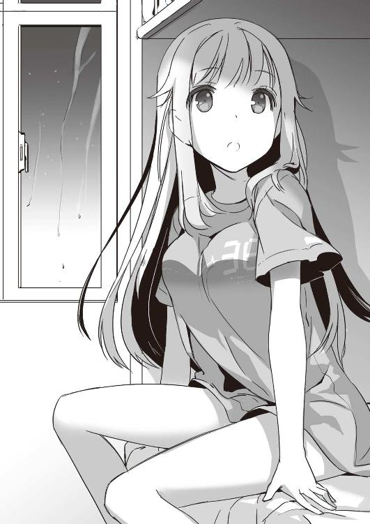
どういうことなんでしょうね！ 自分でももはやよく判らない。仕方がなく、俺は自分のクローゼットから中学時代の半パンを引っ張り出して桜庭に投げつけた。えらいことぶかぶかだろうけど、いまよりはマシな仕上がりになるはずだ。
再び後ろを向いて、寄る辺なく窓の外を眺めていたら、ポケットでスマホが鳴り出した。
見ると、時間は二一時。
例の予言に合わせてタイマーをセットしていたのだ。俺は黙ってスマホを操作する。
テレビが見られるワンセグ搭載携帯の方が寮暮らしには便利だと人気だけど、おかんの栄転を機にスマホに変えた。地球の裏側に住む相手と話をするにはスマホを経由してスカイプを利用するに限ると、おかんが言ってきかなかったのと、俺も別にどうしても見たいテレビがあったわけじゃないからだ。
まずニュースサイトを開き、ヘッドラインを読む。
全国的に有名なそのサイトにはタンカー沈没のニュースはない。入力操作をいくつか繰り返し、今度は福岡の新聞社が配信しているサイトを呼び出す。
すると。
小さな液晶画面の中、『福岡沖、タンカー座礁』の文字が躍っていた。事故発生時間は二〇時三五分。
「まさか......そんな」
自分の呟きが思うさま、上擦る。
「信じて下さいましたか？」
耳元に、柔らかい囁き。
いつの間にか、桜庭せせりが俺に寄り添い、手元を覗き込んでいた。目が合うと、笑いかけられる。
「わたしの言うことが本当だって、信じて下さいましたか？」
自信満々でも得意げでもなく、淡々とした顔つきであり声だった。
「まあ、なあ......」
俺はそっと自問自答してみる。
「俺の知ってる限り、タワーから『逃げよう』ってときに真っ先に飛び降りるって手段を選ぶ奴はいない。鉄製のドアをぶち破れる奴もいないし、もちろん、数時間後にタンカーが沈むのが判る奴もあんまりいない」
「なら」
桜庭の両目が輝く。期待に満ち充ちたその眼差しをさりげなく避けながら、俺は更に言葉を重ねた。
「辻褄は今んとこあってると、思う。思うけどさぁ......なんでそんな未来人様がこんなとこウロウロしてるわけ？」
「大事な大事な任務があるからです」
「だから、その任務って具体的に何？ 二〇〇年後の未来が崩壊するって言ってたけどさ、どういうことだよ？」
俺の口調は自然、きつくなってしまう。自称未来人はすぐには答えなかった。沈黙が長く続く。桜庭はわずかに目を伏せ、的確な答えを自分の中で組み立てているようだった。
「......わたしの任務は主に二つ」
大きく息を吐き、彼女はゆっくり頭をもたげた。
「一つは一年半前にこの時代に派遣され、そのまま行方不明になってしまった前任者二名を探し出すこと」
深い色の目が、まっすぐに俺を見据えてくる。
「前任者？ どうなったってんだ？」
「判りません。この時代に送り込まれて以来、消息も生死も不明です」
ふるふると頭を振り、桜庭は細く低く続けた。
「それから、彼女たちが完了しえなかったミッションを......とある人物の人生を正しく導くという任務を終わらせることです」
「そんなことしたら、歴史変わっちゃうんじゃないの？」
過去の人物にちょっかい出すと、未来が変わってしまう。アニメとか映画とかでよく見るパターンだ。子供の頃に見た『バック・トゥ・ザ・フューチャー』なんて、ヘタレだった親父がナイスガイに変わってて、主人公の家が金持ちになってたぞ。
「そうですね、変わりますね。というか、変えたいんですけれども」
桜庭はそこでちょっとだけ思案顔になった。この顔は、ときどき教室で見るな。出来の悪い生徒に難しい問題をどう説明しようかって悩んでる、先生の表情そっくりだ。
「確か、この時代の言葉ではバタフライ効果などと言ったと思うんですが......ご存じでしょうか？」
あまりご存じなかったので、俺は素直に首を振った。
「風が吹いて桶屋が儲かるというのもあったと思うんですけれど」
「あ、そっちは知ってる」
日本の有名なことわざだ。
風で土埃が立つ→ 土埃が目に入って、盲人が増える→ 盲人は三味線を買う（当時の盲人のポピュラーなお仕事が三味線演奏だったらしい）→ 三味線に使う猫皮が必要になり、猫が大虐殺される→ 猫が減って、鼠が増える→ その鼠がせっせと桶を囓る→ 桶の需要が増え桶屋が儲かる、と。
「こんな感じで習った気がするけど」
「はい、そんな感じです」
ぶんぶんと、桜庭は壊れた玩具みたいに首を振り続ける。
「時間の流れというのはですね、そんな風にたくさんの出来事が無数に絡まり合って軸を成し、流れ続けているわけです」
言いながら、桜庭はそのへんに転がっている紙とペンを取り上げた。身動きするたびに、ちらちらと太ももが見えたり見えなかったりして、俺はもう気が気じゃない。
そんな少年の純情など知るかって顔で、桜庭は紙にたくさんの縦線を書き始めた。何をおっ始めるのかと思ったら、縦に四本の線を引き、その間にそれぞれ横に三本ずつの線を引く......いわゆる、あれだ。アミダくじ。
縦線の一つに桜庭は「人類滅亡」と書いた。で、俺にどれかを引いてみろと言う。
俺は一番右の線を選んだ。理由はない。ただ手前だったからだ。
桜庭は真剣な顔で、そのアミダを辿っていく。いかん。見事、人類滅亡のところへいきそうだ。
顔をしかめた俺を見て、桜庭はちょっとだけ笑い、
「つまり、こう」
横線をいくつか書き足した。
「こうすることがわたしの仕事です」
なるほど、と、納得しかけ、すぐに俺は頭を振った。
「や、そりゃおかしい。そのためにはあれだろ？ どの線の先に滅亡があるのか判ってないとマズイんじゃねーか」
「ええ。おっしゃる通り。ですが、ご安心下さい。わたしたちはすごい技術でどの時間軸を辿れば滅亡に至ってしまうのか、割り出せるようになっております。この唯一正解のルート......これを、わたしたちは秩序軸と呼んでおります。わたしの使命は歴史がこの秩序軸から逸れていってしまうのを修復すること。だから、時軸修復士と呼ばれているわけです」
えっへん。
桜庭はものすごい勢いで胸を張り、得意満面でそっくり返った。
「そりゃすごい。すごいけど、そのすごい技術ってのは、あれですか？ トランクを斜め四五度から殴って直そうとするのと同じ人たちが作ったものですか？」
「え、あ......はい」
もんのすごいイヤイヤって感じで、桜庭は頷いた。
「だったらさ、もっと壊れにくいメカ使うか、情報のやりとり緻密にしてくれよ。人類の未来がかかってるのに、家電レベルのシステムってどうなんだよ？」
「ああああ、返す言葉が見つからない！ でも、なんかあったときはリモートシステムで本部から直接指示だってもらえる手はずになってたし！」
説明するうちに、大きな目にどっと涙が湧いてくる。
「こんなことなら、『外科手術怖い』とか言わずに、脳内にシステム埋め込みをするんでしたぁ～。首の後ろ切って有機体バイアス入れるせいで、たまにうっかり死んじゃう人とか出てくるちょっとアレな手術ですけれども！ 埋め込んだままシステムが壊れると、これまたいろいろ面倒で廃人になったりならなかったりしますけれどっ」
「い、いや、それは止めておいてよかったと思うぞ、うん......」
聞けば聞くほど、未来の日本やべえ。ドラ◯もんは無理でも鉄腕ア◯ムぐらいにはなってて欲しかった。けど、それすら高望みなんだろうかねー。北◯の拳レベルまでいってないことを祈るばかりです。
「人類滅亡ってさぁ......具体的にどんなの？ 核が落ちるとか、氷河期再来とか、いろいろパターンはあるだろ？」
「............」
桜庭は延々と続けていた恨み節をぴたりと止めた。息をひそめ、かすかに目を細めた。外の雨音が、また高くなる。ガタガタと鳴る窓の音がひどく耳につく。
「詳しくは申せません」
絞り出すような、呻くような、声。その目に、たちまち涙が溢れてくる。
卑怯だろ、この展開。こんなタイミングでそんな泣かれ方したら、もう追及できないじゃねえかよ。
「もう、イヤになりましたか......？」
濡れた頰を拭いながら、桜庭は呟く。
「もう知るか、こんな女、頭開かれていじりまわされて、どこぞの病棟で狂人扱いされたまま死ねばいいのにって思ってらっしゃるんですか？」
「や、そこまでは」
その手前ぐらいのことはちらっと思ったけど。
「ありがとうございます！ さすが祐吾さんです、本当にありがとうございます！」
ぱあっと桜庭の表情に光が射す。
あ、可愛い。
素直に思える、そんな笑顔。
けど、次の瞬間には見えなくなった。その代わりに、自分の胸に肩に背に暖かいものが触れてくる。柔らかく、とてもいい香りがしているもの。
「本当にありがとうございます。わたし、この時代に来て初めて会った人があなたでよかった。本当によかった......！」
耳元に響く、弾んだ声。背に回ってくる指の一本一本までが、判る。意識できる。
思わぬゼロ距離攻撃に、俺の脳はパニック寸前。心臓も乱打し続けている。
その上。
「祐吾さんは大恩人です。わたしだけじゃなく、この世界の恩人です。英雄です！」
よせ、やめろ。やめてくれ。
そんな本気で誉め讃えないで。しかも、捨てられた子犬みたいな目で俺のこと見上げないで。
「え、えーと」
やばい。口が勝手に動きだしよった。
登り出しちゃうでしょう。俺のこころの豚さんが、するする木に登っちゃうでしょうがよ！
そして、案の定。
「ま、まあ。まかしとけ」
理性の制止を振り切って、俺の口は勝手に動き出していた。
「人類の未来ぐらい、俺がどんと救ってやるから！」
「祐吾さんっ！」
桜庭は感に堪えぬというように叫び、俺の首にかじりついてきた。こうなると、木綿一枚の防御力なんてないも同然。自分の胸に押しつけられてくる、やけにふっくらやわらかな感触に理性が飛びそうになった、その時。
「んー......」
苦しげに呻きながら、三村が頭をもたげた。まずい、と俺が声にするより早く、
「せいっ」
桜庭が手刀を振り上げる。それは実に正確なミートで三村の首にヒットし、奴の体はそのまま床に沈んでいく。
「ちょっ、人のルームメイトになんてことを！」
「だって、見つかったらまずいのでしょう？」
「そりゃまずいけど」
「大丈夫です。半日もすればちゃんと気がつきますから」
「半日も？ 明日の授業、どーすんだよ」
「そ、それに出席しないと死ぬのですか？ 恐ろしい教官に崖から落とされたり、弾丸舞い飛ぶ荒野を素手で突破しろと言われたり、大海原のど真ん中に水一リットルと浮き輪一つで放り出されたりするのですか？」
「いちいち発想が怖いな！ っていうか、あんたの時代の日本ってどうなってんだ？ 未来の世界の猫型ロボットはそんな不穏なこと言わないぞ？ 一億総出で聖闘士でも育成してんのか？」
「いくら大恩ある祐吾さんのお申し付けでも、具体的に未来のことをお話しするわけにはまいりません」
しゅんとうなだれる桜庭に、俺は頭を抱えた。何をどっから説明したものかと迷ううち、ドアの向こうが騒がしくなる。時計を見ると、既に九時半直前。
「やべえ、寮監だ！」
「りょうかん？」
「寮生がちゃんと揃ってるかどうか確認する人！ 見つかったら本気でまずい」
「大丈夫です。何人こようと、わたしが確実に全員倒してみせます」
自信満々に言われ、本気でゾッとした。こいつの戦闘力なら、マジで先輩方をまとめてのしかねない。
「いや、倒すな。絶対、倒すな。それより、さっさと外に出ろ。誰にも見つからないように退避だ、退避！」
「まだ、表は大雨ですのに」
「ああ、もう！」
足音はどんどん近く大きくなってくる。
躊躇ってる間はない。このままだとマジで退学だ。俺は鍵のかかる引き出しに忍ばせてあった仕送りを引っ張りだし、桜庭に押しつけた。
「駅向こうに安いホテルあるから、そこいけ！ で、明日になったら銀行で両替しろ！」
「はぁい」
不満げに頷く桜庭に手を貸して、窓の向こうへと押しやる。カーテンを閉め、これで一安心と思った瞬間、自分のベッドを見てギョッとする。白いワンピースだのブラジャーだのが転がってるじゃないか！
「ぎゃー！」
俺がそれらを拾い上げて窓に飛びついたのと、背後のドアが開いたのは、ほぼ同時。
「岡崎、三村、ちゃんといるかー？」
なにげない先輩の声に心臓が大きく跳ね、つられたように体も跳ねた。まだ大木に摑まったままの桜庭へと、摑んだ服を投げつけることには成功したが、吹き付けてくる強風に俺の体がぐらりと揺れる。
まずい。
そう思ったときはもう、俺は垂直落下を開始していた。
「ぎゃー、岡崎が落ちたっ！」
「み、三村も気絶してるぞ？」
「あっ、なんだあの穴！ おまえら何してたんだっ？」
二人の寮監が代わる代わる叫んでいるのが、遙か頭上から聞こえてくる。木の上、枝の陰で息をひそめる桜庭に「死んでも動くな、声出すな」と目で合図してみたけど、見えてるのかどうか。
ああ、それにしても。
泥ってけっこう冷たいなあ......。１
「ゆうごくん、そっちの土はこんで下さいです」
「はいはい」
「へんじは一度でけっこう」
「はい」
「それから、このひりょうも」
「いっぺんに？」
「いっぺんにです」
「二〇キロって書いてあるけど......」
「おとーさぁーん！ ゆうごくんがちゃんとはたらきませんよー」
「いや、運ぶ。運びますって」
時はゴールデンウイーク、ところは若竹寮の庭先。
青空広がり、風穏やかな行楽日和だというのに、俺は小学生にこき使われ、野良仕事に精を出していた。捻挫した足がまだいくらか痛むが、プチサディスティック幼女に容赦はない。
「これがおわったら、ちゃんとかだいもするんですよ？ サボったらころしますですよ？」
「はい」
肥料や土の重さに腕を軋ませながら、俺は渋々頷いた。
あの後。
点呼時間に窓から落ちた俺は、大雨に乗じて脱走を試みた馬鹿者という扱いにされた。
「そんな気は一ミリもありませんでした」と抗弁したのだけど、「点呼時間に自室内にいること」という鉄則を破ったことには変わりないと断じられてしまった。平穏で身の丈に合った高校生活に、わずか一ヶ月足らずで傷を負うことになるとは切ない限り。
けど、下手に逆らって同室の三村が未だに涙目で主張している「女の幽霊が出た」というアレと、俺の行動を結びつけて考えられたりしたら、もっとえらいことになる。考えようによっては、本来女を連れ込んだ罪で退学だったものを、減一等になったと言えなくもないし（ちなみに、桜庭が開けた大穴については俺のせいにならなかった。「どう見ても、外側から重機か何かでぶち破った穴だ」と警察が百パー保証してくれたからです。あの馬鹿力女、どうなってんだ）。
で、停学ですよ。
その字面の通り、学校に通うのを停止して、ただ寮に籠もってればいいのかと俺はずっと思ってた。
だが、世の中、そんなに甘くはない。
大部分の生徒が実家に戻り、あるいは遊びに勤しむゴールデンウイークの最中、俺は黄金色とはまるで裏腹な数日間を過ごす羽目に陥った。
勉強はもちろん、寮の掃除やメンテナンスといった雑用の類を一通り......と、書けば、なんだそれぐらいと思われそうだ。が、それぞれの仕事は峻厳さを極めていた。
這い蹲って隅から隅まで廊下を磨くのはもちろん、寮の周囲の雑草を一本残らず撲滅させ、果ては屋根に登って割れた瓦を下ろす作業までさせられた。
それにしても、人間、焦るとろくなことにならない。桜庭が潜んでいた大木を見上げ、俺は小さく息をついた。
何もさー、無理にあいつのワンピとかをあの場で返そうとしなくてもさー、ベッドの向こうに押し込んで点呼が終わってから始末するとかさー、いろいろやりようはあったんじゃないかね、岡崎祐吾くん。
木の下の花壇には、未だバッキバキになったパンジーが並んでいる。灯子ちゃんがあれをみっしり植えていてくれたおかげで、俺は三階から落ちても捻挫だけで済んだのだから、まあ、彼女の手伝いを不当労働のように思うのはよろしくないわな。
観念して、俺は彼女の指示するまま、肥料を運び、種を蒔き、陽を浴びて、土に親しむ。
そんな健康的な活動を続ける一方、俺は学校の図書館やらネットやらで、桜庭の言ってたことを念のため調べてみた。
バタフライ効果とか風が吹くと桶屋が儲かるとかアミダくじとか色々言ってたけど、突き詰めれば突き詰めるほど、よく判らなくなっていく。
桜庭の口ぶりだと、時軸修復士って奴らはたくさんいて、しかも、いろんな時代に派遣されているらしい。
でも、そいつらが総出で「風が吹けば桶屋が儲かる」って連鎖を変えてしまったら、未来も当然、変わるだろ？ 桶屋が儲かる未来から、儲からない未来へ。そうしたら、変わっちゃった未来の世界の人間が過去へ戻って何か細工するの自体、できなくなるのと違うか？ ものの本にはタイム・パラドックスだかパテックスだかアシックスだかそんな感じのことがやたら列挙されてたし。
だとしたら、俺が会ってたあの電波様はどこのどちらさんよ？ もしかして、やっぱり夢なのと違うか？ ......半ば本気でそう思い始めていたんだが。
「聞いて下さい、祐吾さん！ わたし、見つけましたっ」
突然、鉄門がどがんどがんとしなり、叫ぶ女あり。
見ると、桜庭が例のワンピース姿で柵を摑み、わめき散らしている。
「わーっ、桜庭ストップ！ そこでストップ！」
俺は一瞬呆然、のち、慌てて怒鳴りつけた。
あのバカ力で門を引きちぎり、一歩でもこっちへ踏み込んでこられたら、今度こそ「女をつれこんだ」扱いで俺の罪状が増える！
「ゆうごくん、こちらのおじょうさんはどちらさまですか？」
案の定、どこか険のある声で灯子ちゃんが訊ねる。
「し、知り合い」
「ふぅん......」
寮則に服着せてリボンをつけたような幼女は、目の前に現れた女を上から下まで舐めるように眺めた。
肝が冷える。
相手はまだちっちゃな子供だけど、その背後にいる父親は半端ないですから。俺が停学になったときも、おかんの百倍ぐらいは怒られましたから。
「あの、俺、このお姉ちゃんとお話が」
「がいしゅつはふきょかですよ、ゆうごくんはていがく中なんですから」
「こ、ここで話すんで、ちょっと席を外して欲しいんだけれども」
「とおこがいたらできないような話を、するですか？」
「う」
口ごもった俺を、灯子ちゃんはまた一段と尖った目で見上げる。
「ふじゅんいせいこうゆうはダメですよ？ ころしますですよ？」
「話すだけなら、純な交遊にすらならないから。本当だから」
ほとんど拝み倒すような勢いで俺は繰り返し、やがて、渋々というように灯子ちゃんは寮の中へと消えていった。
「めんかいじかんは五分だけですよ」
という、おまえはどこぞの看守かと言いたくなるような捨て台詞を残して。
「で、何を見つけたって？」
精一杯取り繕って桜庭へと向き直ってみる。
会うのは実に一週間ぶり。ほとんど夢か幻かと思い始めた相手は、ちゃんと現実世界に存在していた。
ここまで走ってきたのだろうか、額に少しだけ汗が滲んでいる。ほんのり赤くなった頰、わずかに乱れた息を吐き出す唇が常にもまして艶っぽい。また、ときめきいっぱいになりかけた俺に、彼女は息を弾ませ口を開く。
「わたし、祐吾さんがここから出られない間、この時代のことを勉強しなくちゃと思って、テレビを見たり紙媒体をたくさん買い求めたりしていたんです」
「へえ」
思いの外まともというか、よそ様に迷惑のかからないようなことを語り出したので、俺はちょっとだけホッとした。
が。
「そうしたら見つけたんです！ この時代で消息を絶ったわたしの前任者の一人！」
朗らかな声で満面の笑みで彼女は告げ、手にしたものを俺に差し出した。
信じられない、ものを。
「この人を見つけ出すことが私の最重要任務の一つでした。だからもう、わたし、すごく嬉しくって」
「.........」
「ですから、この方に会いにいきたいと思って、この媒体発行責任者らしい組織に連絡を取ってみたのです」
「............」
「なのに、対応してくれた人ったらひどいんですよ。鼻で笑って取り合ってくれないんですっ」
「...............だろうなあ」
差し出されたそれは、いわゆるテレビ週刊誌。その表紙を飾ることができるのは、芸能人の中でもトップと呼ばれる人たちだけ。
レモンを片手にした女の子四人が、こちらに微笑みかけている。それぞれ個性はあるけれど、どの子も綺麗だ。それもそのはず。彼女たちはパーフェクトアイドルの呼び声も高い、クアトロＡというアイドルグループなのだから。
桜庭が指さしてるのは、中でもはっきりとした顔立ちで、薔薇か蘭かと見まごう美貌。カラフルな制服っぽいコスチュームの上からも、際立ったスタイルのよさがよく判る。
「高峯揚羽」
「はい？」
「その子の名前。高峯揚羽っていうんだ」
桜庭の目がまん丸くなった。
「どうして祐吾さんが先輩のお名前をご存じなんですか？」
「どうしてって......俺だけじゃなくて日本中の人間が知ってるよ。人気絶頂の芸能人だからさ、その子。テレビで見ない日はないっつーぐらい」
まあ、本当はテレビで見てるどころか、実はスリーサイズから好きな食べ物のデータまですべてが入り済みだけど。
そう。
実はこの高峯揚羽は、かつて俺が「一度でいいから撮ってみたいアイドル・ナンバーワン」だった相手。
一年前、綺羅星のごとく日本芸能界に現れ、アイドル・ユニット、トライＡに参加。以来、彼女たちはクアトロＡとなり、それまで天下を制していたスーパーユニット31と人気を二分している。
しかし、桜庭の反応は芳しくなかった。
「芸能人？」
眉根にぎゅうっと皺を寄せ、厳しい口調で言い募る。
「そんな、ありえません。わたしたちはやたらと目立ってはいけないことになってるんです。通常ならば、完全に現代人に偽装して社会に溶け込む......高峯先輩ほどの方がこんな簡単な不文律をご存じないはずないのに」
「じゃあ、よく似たご先祖とか？」
「ああ......そういう可能性もちょっとはありますね」
落胆を滲ませ、桜庭は呟く。しょんぼり。そんな文字が背後に湧いて出てくるんじゃないかってぐらいのしょんぼりぶり。
「ちょっとこれ見てみるか？ なんかヒントがあるかもしれないし」
俺は慌ててポケットからスマホを引っ張り出し、ブックマーク済みのページを見せた。紫色の背景に黒い蝶が飛び交っているブログのトップには『高峯揚羽のスピリチュアルなお告げ』というタイトルが。
「スピリチュアル？ お告げ？」
「このアイドル、予言をするので有名なんだ」
「予言......」
「そう。しかも、これがよく当たる。ここのところ忙しくて俺もちゃんと目を通してなかったけど......」
ブログのタグには「日常」「お知らせ」というごくありがちなものに混じって「お告げ」の三文字があった。俺は恐る恐るそれに触れて見る。最新のお告げ記事の日付は四月二一日......タンカー沈没事件の前日だ。
『夜、東の海にて火柱立つ。西より来たる船が燃え、水平線に没する。心せよ』
「たいへんです、祐吾さん」
桜庭は震える唇で訴えた。
「たぶん、これ間違いなく揚羽さん本人です。容姿そっくりな他人が今世紀にもいて、わたしたち同様に先のことを知っているなんてありえません。リアリティなさすぎです」
だいたい同意だ。この場合、桜庭の探してる未来人・高峯揚羽とアイドルの高峯揚羽が同一人物だっていう方が無理がない。どの口がリアリティ云々を言うのだろうかと、チラッと思わないでもないけれど。
「でも、どうしてなんでしょう？」
桜庭は涙目でうなだれる。
「わたしたち修復士自身に予知能力なんてものはありません。予めデータを知らされているだけです。それをわたしが祐吾さんに......たった一人の現代人に未来に起きることを話すのですら、とても危険だったんですよ？ なのに、こんな誰もが見られるところに書き残すなんて」
「さあ......」
正直、想像もつかない。
揚羽様と呼ばれている、ちょっと高飛車だけど完璧な美人。神秘的なムードが売りで、日本中の男たち（俺を含む）を惑わせる彼女が、桜庭と同じ未来人？ そんな突拍子もないこと詰め込まれて、俺の頭はバグる寸前だ。
「と、とにかく、本人に会ってみなくちゃ何も始まりませんよね」
涙を拭いて、自称・未来人はきりっと顔を上げた。
「それこそ世界の砂の数ほど人間がいるこの時代、この町で、こんなにあっと言う間に目当ての人を見つけられたんですもの、わたしってすごくラッキーですよね。普通だったら、あちこち這いずり回って探し続けても大部分がくたびれ儲けで、身も心もすり減り続けて都会の夜にずぶずぶと沈んで消え失せ、後には骨も残らないとかありえたんですから」
続いた台詞は、すっかり昭和歌謡の世界だけどな。
「各媒体はきっとまた相手にしてくれませんよね？ 住所などが判れば本人と話すことができると思うんですが、探し出すことができるかどうか」
「できないと思う」
できたとしても、それやったらストーカー扱いで一発で後ろに手が回りかねない。
「リモートシステムさえ動けば......」
「あれ以降、動いたことはないんだ？」
「ええ。一生懸命叩いてるんですけれど」
「それがかえって悪いんじゃ」
「えええ、でも、あんな精密機械、バラして直すのなんて怖くてできないですし」
「やっぱ精密なんだ、あれ。あんなんでも」
「あんなんってなんですか！ 国民の血税と科学の粋を集めた、スーパーテクノロジーなんですから」
えっへんと胸を張る桜庭に、俺はさっきまでの疑問をぶつけてみることにした。そのスーパーなテクノロジー様だったら、なにをどう答えるのか？
「そうですね。普通だったら、タイム・パラドックスは起こります」
「まさかのあっさり肯定！」
「起こりますけれど、そのへんは平気なんです。これら時間軸理論とタイムトラベル技術を開発した人たち、それと、我々修復士は特殊な訓練を受けておりますので」
「特殊な訓練って？」
「それは秘密です」
あからさまに顔をしかめた俺に、桜庭はうううっと呻いて先を続けた。
「し、仕方がないじゃないですかあ。わたしたちには守秘義務ってものがあるんですもの。そもそも、この時代の方に細かいことを説明しても判っていただけるとも思えないので、副審が旗を上げたら、もう無条件にオフサイドだと、そんな感じで吞み込んでいただくのが早いかと」
「なんかよく判らんが、二百年後もサッカーのルールは同じだってのは判った」
そんなこと判っても仕方がないんだけど、と、ふてくされかけたその時。
「もう七分たってますですよ、ゆうごくんは中に入るがいいですよ」
無情に響き渡る、灯子ちゃんの声。
大きく瞬きする桜庭に、俺は苦笑を投げかけ。
「明日、午後四時に。とりあえず、高峯対策は考えておくから」
それだけ言って、鍬を握り直した。
２
翌日、放課後。
俺は桜庭せせりをつれて、学校の廊下を歩いていた。一足ごとに後悔に苛まれながら。
「な、ちょっと」
「あれって、岡崎一号じゃん」
「なんなの、一号。すげえ美人つれちゃって」
「なあなあ、あれどこの子？」
遠巻きな囁きと、好奇心に充ち満ちた視線とがどんどん集まってくる。
我がクマ高は標準服校。私服の奴も何割かはいるから、外部の奴がうろうろしててもバレないだろうと思ってたんだが、いかんせん桜庭はあまりに目立ち過ぎたらしい。それと、入学してわずか一ヶ月で停学をくらい、寮に軟禁された俺の復帰初日だったてのもまずかったようだ。ちなみに「岡崎一号」というのは、今期停学一号と岡崎祐吾という名をかけた俺の新たなるあだ名で、本人が休みの間に広まり定着しちまったみたいだ。
我知らず、溜め息が漏れる。
俺って男はどうしてこう、見通しが甘い、あるいは想像力がいま一つ足りないんだろう......何も桜庭をつれてこずとも、俺一人でまずはことに当たり、それから更に対策を考えるなりすればよかったじゃんねえ......。
情けなく肩を落とす俺の横で、桜庭はひとり朗らかだ。
「祐吾さん祐吾さん、あっちの大きい施設はなんですか？ 体育館？ ああ、判りました。あそこで格闘訓練や射撃訓練をするのですね？ 室内射撃は跳弾が怖くて大変なんですよねえ、わたしも身に覚えがあります。え、違う？」
「祐吾さん祐吾さん、けっこうたくさん人がいるようですが、一学年何人なのでしょう？ 二〇〇人？ よくこの建物内に収容できますねえ。それでは、ストレスで喧嘩になりませんか？」
「祐吾さん祐吾さん、もしかして向こうに見えるのは食堂ですか？ 何が食べられます？ わたし、タヌキうどんが好きなんですけれどありますかねえ......え、うどんはキツネだけ？ どうしてですっ？ 狸が何か悪いことでもしたんでしょうか？」
よくもまあ、次から次へとそう聞きたいことが思いつくなというハイ・ペースさで、質問を連発してくる。
俺はできる限り丁寧にそれに答えつつ、教室棟を抜け、部室棟へと足を向けた。裏庭に面した三階建ての建物の、そのまた一段と日当たり芳しくない一室の前に足を止め、大きく息を吸う。
古ぼけた扉には「アイドル研究会」という札が下がっている。未知の領域だ。正直、ちょっと怖い。けど、背後にいる桜庭の期待感満載の目の方が怖い。またネガティブギャング化される方が怖い。
「すみません、一年の岡崎ですが」
ノックと共に声をかける。
が、返事はない。恐る恐るノブを回してみると、明るくもポップな爆音と「ハイ、ハイハイハイ！」という掛け声が飛び出してきた。
中は、どこぞのライブ会場......いや、道場みたいになっていた。一〇畳に満たない部屋の中心で、三人の男と一人の女が踊っている。それが、「らんらんらー、みんな楽しく輪になって踊りましょう～」という感じではまるでない。全員が全員、目を吊り上げ、一糸乱れず、真剣を絵に描いたような表情で踊り続けているのだ。
「あっ」
途中、一人がステップを踏み間違えた。その瞬間、残りの三人の目が非難の色を帯び、そいつの背へと突き刺さる。
「せ、せんぱい......すみません。俺は俺はもう踊れませんっ」
「バカ野郎、諦めたらそこで試合終了だろ！」
「けど、このマワリ難しくて......」
「難しいのを克服してこその芸なんだよ！ オタ芸を極めるなら安易な道に逃げたらダメだ！」
「そうだぞ、中畑！ 俺たちもついてる！」
「わ、わたしもがんばる、よ......っ」
「さあ、立て！ 踊るんだ！」
「っせんしたっ！ もう一回初めからお願いしゃっすっ！」
俺は黙ってドアを閉じ、そこに下げられたプレートを再確認した。『アイドル研究会』......うん、間違ってないよな。
「いまの人たちは？ 随分と熱心に踊ってらっしゃいましたけれども？」
無邪気な桜庭の問いかけに、俺は窮する。むしろ、こっちが聞きたい。研究会というからには、文献を紐解いたりパソコンをいじったり写真を分類したりしてると思ったのに、どうしてどこぞの野球部やサッカー部もかくやというムードで踊りまくってるんだろう......。
「ザキオカさん？」
困惑する俺の後ろ、閉めたはずのドアがわずかに開いていて、中から中畑が顔を覗かせていた。
「マジでザキオカさんじゃん。どうしたの？ もしかして入部してくれるの？」
眼鏡の下の両眼をきょときょとさせて、中畑は俺を見上げる。
こいつは、中畑義彦。俺と同じ一年三組だけど、若竹館にはいない。電車で三〇分離れた埼玉から通ってきている。いわゆるカメコってやつでクラスの端っこで同好の士たちと自分の撮った写真をよく見せ合ってる。
ひとり切なくファインダーを覗くばっかりの俺にとってはなかなか眩しい存在で、何度か声をかけたことがある。アイドル研究会なるものに在籍していて、「よかったら君もどう？」なんて言ってくれてたんだが、その直後に俺は停学食らってしまってそれっきりだ。
「やっぱりねえ。君からは僕らと同じ匂いがちょっとするもんねえ」
「そう？」
「うん。リア充っぽいけど、実は好きでしょ？ アイドルとかって」
「まあね。アイドルに限らず可愛い子はみんな好きだけどね」
「お、かっけえな。いっぺん言ってみたいっす」
ギャグのつもりで言ったのに半ば本気で感心されて、ちと反応に困る。俺が可愛い子を好きなのと、可愛い子が俺を好きになってくれるのはまったく別なんだけど、こっちに都合よく勘違いしてくれるなら、それはそれでオッケーだす。
手招きされるまま中に入ると、さっきのメンバーが爽やかな汗を拭き拭き微笑みあい、やれ「さっきのステップは」「あそこのかけ声が」と検討を重ねている。
「どこかの体育会系の部みたいだな」
「まあね。オタ芸の道はなかなか厳しいからね。アイドル研究会としては力を入れざるを得ないんだ」
「オタ芸？」
桜庭がいいタイミングで首を傾げた。そのへんについては、俺も詳しくは知らない。
「一言で言うと、愛するアイドルに捧げる魂の踊り、かな」
「まあ、すごいんですねえ」
本気で感心する桜庭の横で、俺は表情を選びかねていた。いや、実際、コンサートなんかで見かける彼らのダンスはすごいらしいけど。
「で？ 名誉ある一号ともある君が、僕らにどんな力を借りたいって？」
何かを見透かすような目で、中畑がこちらを窺う。
「ああ......」
俺は壁に山ほど貼ってあるポスターの中の一枚を指さした。
「こいつがね、高峯揚羽にどうしても会いたいってわざわざ北海道から出てきたんだけど、俺じゃさっぱり。どうしたらいいかな？」
「揚羽様に？」
中畑は首を傾げて桜庭へ目を転じる。彼女は真剣な眼差しで頷いてみせた。あらかじめ「未来だ任務だと口走ったら、その場で放り出す」と言い含めてあったため、電波発言はなし。ただただ視線に力をこめて奴を圧する。
「さすがだな、クアＡ。女子にも大人気」
「判る。綺麗でかっこいいもの......」
他の部員たちが口々に言っては頷いた。
中でも、ひときわ熱心な反応を示したのは、滝智一と名乗った二年生だ。この研究会の会長だとか。
「彼女たちは平成の世にあって、他とは一線を画するアイドル・グループなのだよ、一号くん」
「岡崎祐吾です」
「世にはね、『自分のクラスにもちょっといそうな可愛こさん』を束ねて作ったというアイドル・グループが多い。その中で、クアトロＡは『どうだ参ったか！』系の美少女だけを選抜して作られている。歌、ダンス、カリスマ性といずれ劣らぬ完璧さなんだよ、一号くん」
「祐吾です」
俺の訂正はガン無視。壁に貼られたポスターを指し、滝先輩は声を高めた。
「明るく元気な僕っ子、新城あやか！ 正当派お嬢様キャラの上之院燿奈！ 日本語が怪しいところがソウ・キューッなハーフ美人、アリス淡島！ そして、神秘の乙女、高峯揚羽！ 四人揃ってクアトロＡというわけだよ、一号くん」
「祐吾ですって」
「しかし、であるが故に、人気の方はスーパーユニット31にちと劣る。なにせ、31は『ボクらのハニーは日替わり仕様』というコンセプトで結成されているからね。親近感第一。飛び抜けて美少女とか飛び抜けて歌上手いとかは、むしろ邪魔」
「はあ」
「であるからこそ、我がクマ高アイドル研究会はクアＡをプッシュしていこうと思うのだよ！ 天高くに咲き誇る大輪の花！ 儚き偶像の神乙女たち！ それこそがアイドルの真髄！ そうは思わないかね、一号くん！」
祐吾だっつってんだろ、という指摘を俺は飲み込んだ。熱意が逬り過ぎてて、もはや反論の余地がまるでない。
「歌も踊りも一流だし、揚羽様すごいマジすごい」
「その上、お告げまでできるなんて」
「結成して、たった一年でスパユニに迫る勢いだもんね」
「たった一年？」
桜庭の声がいっそう沈む。
彼女の『前任者たち』が姿を消したのは、一年ほど前のはず。話はますます合致する。
「あの、その高峯さんがとってもすごいのは判ったんですけれど......それだと、どんなに頑張っても会えないってことでしょうか？」
桜庭は泣き出しそうに訊ねる。威力絶大な雨の日の子犬攻撃だ、たちまち研究会員たちは取り乱しだした。
「そ、そんなことないよ」
「大丈夫、ちゃんと手を尽くせば会える」
「うん、会える会える」
「ほ、ほんとに？」
「ほんとほんと」
「マジマジ」
宥める一同を見回して、桜庭は心から安堵したように微笑んだ。つられたように、その場にいた全員も笑う。一気に和んだ空気、ほんわかムードにあたりは包まれるが......あの、俺、さっきから一人だけ輪の外なんですけどー。
まあ、いいか。
美人がきたとキャッコラキャッコラ喜ぶ一同を見やって、俺は小さく息をつく。
あんた方がありがたがってるその美人はなー、紐一本で俺ごとビルによじ登り、ドアやら壁やらをぶち破る、トンデモ未来人なんですよー。
そんなこと知ってのは、いまのところ俺だけ。
この時代での人間の中ではたぶん、俺ひとりだけ。それって、なんとなく愉快な話じゃねえ？
３
それから、四日後。
どんよりと空が重たげな日曜日。
俺と桜庭は中畑につれられて、お台場へとやってきていた。
某テレビ局の収録でクアトロＡがここにやってくるのだという。
「今日はすごい近くで会えるよ」
中畑はそれはそれは嬉しそうに桜庭に話しかける。なんでもこいつは高峯揚羽がいま一押しのアイドルだそうで、同じ好みである（と思いこんでいる）桜庭せせりに親近感を持ってるらしい。
だだっ広い駐車場の果て、通用口と書かれたこぢんまりとしたドアがある。その前には野郎七・女子三の人波が既に出来上がっていた。
「この方々は何をなさってるんですか？」
「いわゆる出待ちってやつだね」
出待ち？
俺は眉をひそめた。それは確か、芸能人やスポーツ選手がどこからか出てきて顔を見せてくれるのをひたすら待つって行為じゃなかったか？
やがて、その小さなドアが開き、帽子にサングラスという出で立ちの女が四人、屈強な男に取り囲まれて現れた。
「揚羽さまーっ」
「アリスちゃーん！」
「燿奈姫！ 大好き！」
「うおおお、あやかっちぃぃ！」
たちまち色めくファンの群れ。フラッシュがまばゆくあたりを照らす。アイドルたちは軽く手を振るだけ。身長のある俺はそんな様子がなんとか見通せたけれど、背の低い桜庭には何も見えないらしい。人垣の合間に埋もれながら、ぴょんこぴょんこと飛び跳ねている。
そうするうちに、アイドルたちは黒塗りのリムジンに飲み込まれていってしまった。
「桜庭、高峯見えたか？」
「い、いえ。無理でした」
「ちっ」
舌打ちして、俺は中畑の肩をひっ摑んだ。
「これのどこがすごく近くで『会える』になるんだ？」
「え？」
意外なことを聞かされたというように中畑は目を丸くする。
「すごい近いじゃないか。デジイチならばっちりアップまで撮れるだろ？」
「............っ？」
「............っ！」
『近い』の感覚が、意味が、違う！
いや、一介の高校生に『トップアイドルとお話できるぐらい至近距離までつれていって下さい』なんて頼む方が無謀だったかもしれんけど。
「じゃ、また学校で！」
俺と桜庭の顔色に気がつかず、中畑はオタク仲間らしい奴らを見つけて、さっさとそっちへいってしまった。
後には、どんより淀む俺たちだけが残される。
「桜庭......悪かった」
「いえ、こちらこそ......」
「ともかく、ここにいてもしょうがねえから、えーと......そのへんぐるっと回って、あと茶でも飲んで帰る？」
ここは現代の観光スポットなんだと説明しても、桜庭は浮かぬ顔色のまま。いちおう俺のあとをついてはくるけれど、あたりを見回すそぶりもない。周囲一面、楽しげなカップルだらけなせいで、なおのこと悄然とした姿が哀れを催す。
もう帰った方がいいかな、と、ぼんやり思い始めたときだった。
「あっ！」
突然、桜庭が声をあげ、弾かれたように振り向いた。真剣な眼差しのその先には、一人の男がいた。
たぶん三十代後半ぐらい。カジュアルなジャケットになんか高そうなビンテージデニム、頭にちょこんと乗せられた中折れの帽子もお洒落で、サラリーマンという感じはまるでしない。
「あの人がどうかした？」
「ターゲットです。わたしの仕事の」
それはなんぞや、と、訊ねる暇はなかった。桜庭はシッと鋭く言い放ち、抜き足差し足でその男の後を尾け始めたのだ。呼吸すらはばかるようなその緊張感に、俺もまた声もない。
二人でそのまま、男の後をそっとそっと追いかける。その人はいま俺たちが来た道を逆に辿っていき、やがて、先ほど高峯揚羽たちが出てきたドアをくぐっていった。
「テレビ局の人？」
「局の人ではありません。制作会社の人です」
いきなり言われても、局の人と制作会社の人の差なんかよく知らん。
「テレビ局というのはメディアを放送する会社で、制作会社はその放送するプログラムを作成する人と習いました」
「スーパーの人と、そこの棚に並べとく品のメーカーの人の差みたいなもん？」
「適切ですね。但し、テレビ局はスーパーと違って独自で作っている番組が半分ぐらいはあるはずですけれども。とにかく、彼は日本を代表する大制作会社に勤務している人で、業界ではけっこう知られている方なのです。お名前を大前俊充さんとおっしゃいます」
「はあ」
「ところが、このままいきますと、あの方はいまつきあっている彼女にフラれてしまうのです」
「はあ」
「すると、なんてことでしょう！ その因果が巡り巡って地球が滅びます」
「話が飛んだーっ！ すげえ飛んだ！」
あまりの飛躍についていけない俺を、桜庭はじっと見上げる。その瞳はあまりに本気だ。清々しいほど真剣だった。
それは判る。
だが、意味はどこまでも不明ですから。
「ですから」
ぽかんとしている俺にじれたように、彼女は重ねて説明する。
「恋人にフラれた彼は何もかもが虚しくなってしまい、いまの仕事を辞めて田舎に帰ってしまうのです」
「はあ」
「前任者を見つけ出すこと、彼女たちと手を組んで彼の失恋をくい止めること。これが、わたしに与えられたミッションでした」
それからもつらつらと、桜庭は説明を続けた。
この失恋阻止大作戦こそが、この間、桜庭が言ってたアミダくじの横線。ターニングポイント。桜庭たちの専門用語では、『時軸の岐枝』と言うそうな。
「なぜ、揚羽先輩が芸能人などに身をやつし危ない橋を渡ろうとしているのか、ようやく判りました！ きっと、任務のためですね。テレビ局の根幹に潜入して、時軸の岐枝に備えようと何事か画策なさってるのですね！」
ハイテンションではしゃぐ桜庭。めっきり取り残され、俺は反応に困る。
「それより、そのラームスをクリアするとどうして地球が滅亡しなくて済むのさ？」
「ごもっともな質問です」
俺の素朴な疑問に桜庭は力強く頷いた。
が。
「判りません！」
その回答は力強く意味不明だった。
俺は反射的に彼女に背を向け、駅へ向かって歩き出していた。
「ま、待って待ってくださいってば、祐吾さん！」
「話しかけないでくれ。いま俺は未来の日本国民のために全力で心を痛めてるところなんだからよ」
「そんなどこかの怖い市民団体みたいなことおっしゃらないで下さいっ、仕方がないんですってば！ これが修復士になって最初の任務で、しかも、超緊急出動だったんです。もともと前任者の任務でしたし、詳細はすべて同行の先輩の方にしか知らされてなかったんです！」
「ほんっと仕事が雑だな、おまえら！ 役所の連中がこんな仕事っぷりで地球の明日を救ってるのかって知ったら、みんなどう思うか」
もしも俺に手段があるなら、匿名でどっかにチクりたい勢いですよ、まったくもう。
「ああああ、や、やめてください、市民の声欄とかに投書しないで下さい。公務員だって人の子なんです。みんなみんな生きているんです友達なんですっ」
真っ青になって桜庭は取り縋ってくる。迫真の表情だなあ、リアルに未来で揉めたりしてんのか？
「まあ、いいよ」
俺の声には溜め息まじり。諦観が籠もるだけ籠もる。
「俺、ＲＰＧとかで次に何やったらいいのか判らなくてウロウロするのが、一番嫌い。とりあえず、高峯揚羽と会ってさっきのおっさんのこととか聞けばいいんだろ？」
「そうです、その通りです。祐吾さんおさすが！ 吞み込み早い！」
吞み込みが早いんじゃなくて諦めが早いんだよ、と、言いたくなったが。
さっき泣いた烏がもう笑ったの喩え通り、桜庭がにこにこと楽しげにしているのを見て、口に出すのは止めることにした。
俺、女に泣かれるのも、すごく嫌い。
４
『ほーら輝いてる、ホリデー！ あなたとわたしのバケーション』
「Ｌ・Ｏ・Ｖ・Ｅ！ ラブラブラブ！」
可憐な女の歌声と野太い男のかけ声が一体化し、コンサート会場の空気を震わせている。
横十数メートルの舞台の上では、きらびやかな衣装をまとったクアトロＡのメンバー。ファンの野郎どもは座席と座席の間の狭小空間だというのに、華麗なステップを披露し続けている。
どっちもかなりお見事なんだろうが、俺にはそれを堪能する暇はまったくなかった。舞台と客席の際、興奮するオーディエンスの前に立ち塞がり、彼らをステージへと近づけないようにする。それが、いまの俺の仕事。
ひらひらするスカートの裾から、アイドル少女たちの露わな太股とかが見えそうな至近距離。だが、警備スタッフはまず振り向くこと自体が許されてない。
「これじゃ、まるで意味ねーだろうがよ......」
あの誓いのテレビ局前から、半月。
高峯揚羽と合流して、早いところ任務完了しちゃうぞ！ と意気込む桜庭せせりと一緒に、俺はけっこう頑張ったと思う。
お告げブログに日々目を通し、西にクアトロＡのロケがあると聞けば飛んでいき、東でクアトロＡが公開放送に出ると聞けばテレビの観覧ハガキを死ぬほど書き......しかし、どれもこれも熱心なファンがアイドルに会いたくて頑張ってるってのから、一歩も踏み出していなかった。
滝会長のアドバイスで、こうしてコンサートの警備スタッフにまで応募してみたんだが、縮まったのは物理的な距離だけ。
やがて、バラード調の歌が始まり、場内は静まり返った。俺はマニュアル通りにその場で腰を落とし、片膝ついて待機する。相変わらず、よく見えるのは揃いのＴシャツや法被を着込んだ野郎どもの顔ばっかりだ。
桜庭の方は大丈夫だろうか？
非常灯の仄かな光を目で追って、ふと思う。
あいつは会場の外、コンサートグッズの販売所に回された。腕っ節という点では俺と桜庭の配置が逆なんではないかと思うが、それじゃパンダを見に来た客の前にレッサーパンダまで並べておくようなもんだ。気が散ること夥しいだろう。釣り銭を間違えたり、渡すグッズを間違えたり、おたおたしている姿が目に浮かぶが、同部署のみなさんどうか頑張ってくれ。
大きな溜め息を吐き出したと同時に、曲は再びアップテンポに変わる。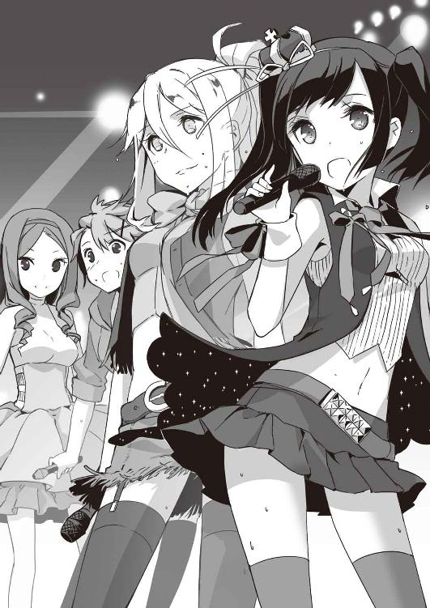
「揚羽様ーっ」
「アリスちゃーん！」
「あやかっちー！」
「燿奈姫ぇ！ 俺の姫ぇぇぇぇぇ！」
野郎どものボルテージも再び上がってきた。
「うおー」
絶叫と共に人波が大きくうねり、徐々に前へ前へと押し寄せてくる。警備スタッフが声を出し、コンサートの邪魔をすることは原則禁止。だから、俺は無言で手を広げ、野郎の波を押し返すことに専念した。
足を踏みつけられ、体をぐいぐいと押されて内臓まで響く。けど、もみくちゃにされてる途中、ステージを見ることができた。ほんの一瞬、わずか一秒二秒だったけれども、俺にはそれで充分。
「ワタシたち次の曲もハリキッテ歌うヨー」
ステージ上、一番左にいるのは、金髪をポニーテールに結い上げたアリス淡島。メンバー中一番のボンキュッバンな長身をマリンブルーの衣装で包んでいる。ちょっと舌ったらずで下手な日本語が最高に可愛らしい。
「コンサートもそろそろ半分ですわね。みなさま、疲れてらっしゃいませんか？」
その横、白い衣装の美少女は上之院燿奈。豪奢な縦ロールにリボンが揺れ、さながら生きたお人形。昔の少女マンガ雑誌の表紙から抜け出てきたような愛らしさだ。
「まだまだへーきだよねぇ？ あやかは元気ＭＡＸ、フルパワーだよぉ！」
黄色い服の裾を揺らしつつ、新城あやかが明るい声と笑顔で呼びかけた。子ウサギのようにぴょんぴょんと他の三人の周りを軽快に跳ね回っている。ショートヘアの前髪の間で輝く汗すら、爽やかに感じる。
そして。
「さあ、ラストまで突っ走るわよ！ みんなついてらっしゃい！」
観衆の頭上に響く、凜とした声。
スポットライトに浮かび上がる、女神然とした姿。揺れる黒髪のツインテールに赤い服が映えて、いっそう綺麗だ。
高峯揚羽。
桜庭と同じ、未来からやってきたという女。
そんな突拍子もない話を、いまひとときは信じてしまいそうになる。彼女の歌声にはそれほどの存在感と神秘性があった。
巨大なアンプが震え、俺の胃まで震える。鼓膜はすでに限界寸前だ。そうして、過酷な二時間が経過し、ようやく一仕事を終えることができた。
他の警備スタッフが控えの部屋へ引き上げる中、俺は敢えて外へと向かった。たぶん俺の地獄の終わりは、桜庭の地獄の始まりだ。帰る道すがらグッズを買い求める客が殺到して、きっとえらいことになってる。
慌ただしさのまだ残る廊下を進み、会場裏手を目指す。途中、弁当をうず高く積み上げたおっちゃんとすれ違った。その人は脇目もふらず、会場内の一段と奥まった方へと歩いていく。黒い制服姿の屈強なガードマンが左右を固めた扉すら、当たり前って顔をして抜けていった。
あの向こうが、出演者控え室......つまり、高峯揚羽のおわすところだというのに。
俺は慌てておっちゃんのエプロンに書かれたロゴへと目を走らせる。遠ざかる一方のそれは、『仕出し弁当・料亭、松雲堂』と読めた。
「君、どうかしたのか？」
ガードマンがじろりと睨みつけてきた。俺は慌てて首を振り、素早いバックステップでその場から逃げ出す。挙動不審の罪科で拘束されたらたまらない。
「おーい、ザキオカさーん！」
売店用のテントへ急ぐ途中、聞き覚えのある声に呼び止められた。
振り向くと、人混みの向こうから中畑義彦が手を振っている。クアトロＡのＴシャツを着込み、ＡＧＥＨＡ☆と書かれた鉢巻を締めている。畜生、楽しそうだな、こいつ。
「やあやあ、警備スタッフくん。しっかり働いとるかね」
滝先輩が、からかう調子で訊いてくる。おかげさまでと言いかけ、ふとさっきの光景を思い出す。
「いくら滝先輩でも、クアトロＡの事務所とかテレビ局がどこの弁当屋と契約してるかまでは知らないですよね？」
「知ってるよ」
あっさり頷かれ、拍子抜けした。
「事務所が使ってるのは、松雲堂っていう仕出し屋さんが多いね。サンドイッチとか洋食のときは、事務所近くにあるラカンラカンってパン屋兼カフェから取り寄せてる。テレビ局の場合、局単位で弁当を注文することはほとんどない。たいてい番組単位。だから、クアトロＡがどの番組に出てるかによってその日食べるお弁当は違うってことになるね」
「そ、そうなんですか」
その情報通ぶりに俺は舌を巻く。すごいというより怖い。どうやって調べるかは、敢えて聞くまい。
俺は中畑と滝さんに礼を述べ、目当ての売店へと赴いた。案の定、テントの前には長蛇の列がのたうち、販売スタッフが必死になって客をさばき続けている。桜庭の悲鳴が聞こえてくるかのようだった。
５
五月も末日、俺は愛用のクロスバイクに荷台をつけた。
パーツがなければないほどすっきりとしたデザインが生きる車種にあって、ほとんど暴挙と言っていい所業。ダサいことこの上ない。
けど、仕方がない。
新たなバイト先は、時給八〇〇円交通費なし。片道一〇キロをニケツでいくのは安全面でもよろしくないが、手持ちの金に限りがある桜庭にそうそう贅沢させるのは危険だ。晴れの日だけでも、バス代浮かせたい。
それに、あれだ。
自分の腹に回ってくる、桜庭の腕。細く頼りないその感触があれば、まあいいかというかなんというか。交通費以上に得した気になる。
「大丈夫ですか？ 重くないですか？ わたしが運転しましょうか？」
って言われたときに断固拒否したのは、スケベ心からじゃなく、命が惜しいからだったけど。
「いらっしゃいませー！ 本日の日替わり弁当は肉じゃがです！ 美味しいですよー」
オフィスビルの谷間に、桜庭の明るい声が響き渡っていく。暖簾と同じ、ライトグリーンのエプロン姿が道行く人たちの目を引く。
「せせりちゃんの笑顔はいいねえ！ おかげで売り上げ倍増だよ！」
店長の誉め言葉も、まんざらお世辞じゃないんだろう。俺は放課後から閉店までしかいられないから現場を見たことはないんだが、ランチタイムの盛況ぶりはこの弁当屋開闢以来だそうだから。
某テレビ局から歩いて一分、お弁当の竹田屋。それが、俺と桜庭の現在のバイト先だ。
先代・竹田繁さんがこの地に店を構えて、はや二〇年。バブルに溺れず地価高騰に耐え不況を忍び、堅実な商売を続けている。もちろんテレビマンたちにも大人気で、売り上げの半分以上はテレビ局への配達によるものだとか。注文主の中には、「ミッドナイトナウ」制作部の名もある。クアトロＡがレギュラー出演している深夜番組だ。
最初、俺はコンサート会場で見かけた仕出し屋に目を付けた。クアトロＡの事務所御用達だが、そこは青山界隈では知らぬ者とてない老舗だとか。短期に何十人もどっと採用するようなコンサートスタッフとは、勝手が全く違った。俺は高校生だし、桜庭に至っては住所がホテル......というか、ほぼ住所不定だ。問い合わせの電話の段階でやんわりお断りされてしまった。
他の店も、かなりハードルが高い。「学生は困る」「知り合いの紹介じゃないと」と次々にコケた。
で、あちこち当たった結果、現店長の竹田美代子さん（四六）の「うちはあたしの目にかなった子しかとらないよ！」という極めてアバウト、けど、考えようによってはとてつもなく厳しい採用基準のこの店に潜り込むことができた。
「俺、配達得意です。一度見た風景とか道は絶対忘れないんで」とさんざんアピールしたんだが、いまはもっぱら調理場補助。配達は免許のあるベテラン店員さんの担当で、自転車しか乗れない俺の場合、もっと慣れてから＆よっぽどせっぱ詰まったときだけとのことだった。
カウンターに立ち、ニコニコと弁当を手渡しまくっている桜庭だが、内心は相当焦っているはず。
数日前、桜庭は例のテレビマンの個人情報を徹底的に調べあげてきた。
「一九七六年、栃木県の今市生まれ。血液型はＡ、星座は天秤座。Ｎ大学芸術学部を卒業後、フューチャー・テレビオフィスに入社。以来、バラエティを中心にテレビ制作に従事。二六のときに一度結婚するも、一年で離婚。原因は仕事が多忙過ぎ、ＩＴ関連勤務の奥さんとすれ違い続けたせいだとか。現在は品川区の賃貸マンションにて一人暮らし。一一年に渡って動物番組を担当しているのに、実は動物アレルギーなのが最大の悩み。携帯の電話番号は０９０―４０１―××××だそうです」
竹田屋二階の休憩室、息もつかぬ勢いで桜庭が報告する。
こ、こまけー。
どこぞの興信所もかくやという情報量に俺は舌を巻いたが、それを調べた手段にはもっと驚いた。
「駅前に家電量販店があるじゃないですか。そこのパソコンをいじって、ネットで拾いました」
「拾いましたって......あんた、すげえな」
「褒められたぁ、わーい」
「でも、こんな情報がネットに転がってるなんて怖いなー。携帯のナンバーまですぐ判るもんなのか」
「いえ、普通には転がってません」
得意満面で桜庭は胸を張った。
「フューチャー・テレビオフィスと彼個人のメールサーバに強制的にログインしまして」
「クラッキングじゃねーかよ！ 犯罪だよ、犯罪！」
「えっ、そうなんですか？」
心底驚いたというように桜庭は目を丸くした。
「あってないようなセキュリティでしたから、別に見てもいいのかなって」
「どういう理屈だよ。あんた、人んちのドアが開いてたら勝手に入って中のものパチってきてもいいと思ってるのか？」
「わたし個人の問題でしたら、むろんノーですけれども、人類の存亡がかかってたら、むしろドア蹴破って入ります」
「えー」
「だって、人類滅んじゃうんですよ？ 個人資産やらプライバシーやら守り抜いたところで、みんな死んじゃったら意味ないじゃないですかぁ」
「そう言われれば、そんな気もちょっとするけど、えー」
なんか俺が悪いのかって気がしてきたけど、違うよな？
少なくとも現代の感覚では、俺の言うことの方が一般的だよな？
「その上、たいへんなことが判りました、祐吾さん」
今日のまかない用にと渡された弁当に手をつけぬまま、桜庭は苦渋の表情を浮かべる。
「わたしの使命は大前さんの恋のお手伝いをし、巡り巡って地球が滅亡するのを防ぐことです」
「それはもう判ったよ」
個人的には何がどうしてそうなるのかをまず明らかにして欲しいところだけど、力強く「判りません」と断定されたのはあまりにも記憶に鮮明です。
「ですが、この大前さんには『恋人』に該当する人物が三人いらっしゃいまして......どの人とうまくいくようにしたらいいと思います？」
「は？」
あまりの問いかけに、俺は次の言葉が出てこない。
そんな俺に、困ったような眼差しをひとつ投げ、桜庭は説明を続ける。
彼の彼女・その一は、広告代理店勤務の橋口早紀さん（二九）。
その二はメイクアップ・アーチストの久保田美野里さん（二五）。
その三は専業主婦の吉沢由利さん（三一）。
「ちょっと、待て」
とうとうと続く桜庭の説明を、俺は一度遮った。
「職業・専業主婦がその中に混じってるのはおかしくないか？ おかしいよな？」
「あら、祐吾さん。専業主婦だって立派な仕事ですよ。明確な雇用関係がないからと言って軽んじるような発言は聞き捨てなりませんね」
「ちげーよ！ 職務内容がおかしいって言ってんじゃなくて、専業主婦に旦那以外の恋人がいるのがおかしいって言ってんだよ。だいたいその場合、恋人なんてソフトな表現じゃなくて愛人って言うんじゃないか？」
「あ、そうですね。うっかりうっかり」
納得がいったと言うように、桜庭は頷き、それからまた首を傾げた。
「で。この場合、どの人と縁結びしたらいいと思います？」
「それは」
前置きだけを口にして、俺は黙りこんでしまった。
本日の日替わり弁当のメイン、ブリの照り焼きに箸を刺したまま、たっぷり考えること三分半。
「死ねばいいんじゃないか、その男？」
吟味した割には芸がない上にストレートな台詞が口をついて出た。
「そ、それは困ります。彼にはこれからも雄々しく仕事を続けていただかないとミッション・クリアということになりません」
「女の敵じゃんよ」
「その上、人類の敵にしてはなりません」
はっきりと桜庭は言うが、その表情はどこまでも苦々しい。それがふっと緩み、今度は小さな笑いになった。
「でも、よかった。祐吾さんが『羨ましい』とかおっしゃったらどうしようかと」
ま、まあ、それもちらっと思わないでもなかったけどね。口に出すのははばかられるよね。女の敵に同意したばっかりに、敵の味方はやはり敵とかあらゆる女にマークされるようになったら、この先の人生真っ暗じゃねーか。
「......まあ、あれだ。この場合、専業主婦ははぶいていいんじゃねーか？」
桜庭に渡された資料に目を通し、俺は見当をつけた。例の大前さんとこの主婦が関係を持つようになったのは、今年に入ってのことらしい。桜庭の前任者がこの任務を命じられ、現代日本に送り込まれたのは一年前。て、ことは、その時点で『彼女』だった奴がターゲットってことになる。
「別に誰とでもいいからくっつけろ、野郎を田舎に返すなってわけじゃないんだろう？」
「だと、思いますが......」
桜庭の返答はいささか歯切れが悪い。
それにしても、この資料......出所、どこだろうなあ。ある日突然、警察のサイバー関係部署の人が現れたりしないことを切に祈るばかりです。
「で。二人の写真はある？」
「こちらになります」
恭しく差し出された数枚の写真を、一列に並べて眺める。
広告代理店の早紀さんはショートカットにスーツ姿。図抜けて美人というのじゃないけれど、すっきりした目元の感じのいい人だった。
メイクアップ・アーチストの美野里さんは、その道の人らしく四方八方に広がるアフロに、一筋だけ赤いメッシュを流した斬新なヘアスタイル。でも、それが潑剌とした表情ととても似合ってる。
「このお二人にはあまり共通項がないように見えるんですよねえ。大前さんはどんな女性でもウェルカムという方なのでしょうか？」
桜庭は眉をひそめて言うが、いや、俺には判る。かなり、しっかりはっきり共通項がある。
「野郎、ひんにゅー教徒か......」
「はい？」
「ああ、いやいや」
訝しげな桜庭の視線をなにげなく避けつつ、俺は二人の写真になおも注目し続けた。
「あれ？ このマーク」
美野里さんの着ている服に特徴的なマークがあったのだ。
ＫＩＤＯというアルファベットがデザイン化されたロゴ。コンサートスタッフやってたときも、けっこう頻繁に見かけた。
「そうなんですよ！」
ぱぁっと桜庭の顔が明るくなる。
「これは高峯先輩の所属事務所のマークです。さすが先輩！ きっとこの人について内偵なさってるんですね」
「内偵でアイドルって、あんまりにも目立ち過ぎと違うか？」
「そこはそれ、一流のスーパー修復士ですもの。きっと深淵かつ崇高なお考えがあるんです。そのはずです」
力強い断定に、反論の余地をなくす。俺にとっての高峯揚羽は、テレビ画面やグラビアの中だけの人。どんな性格でどんなことを考えているか、見当がつくわけもない。
「でもまあ、そういうことなら......あんたはまず広告代理店の早紀さんをマークしとけば？ で、高峯と会えたら、いろいろすり合わせればいいんじゃないか？」
「ですよね！ 頑張ります！」
「あ、でも、できるだけ合法でな。停学だけでもそうとうダメージでかかったのに、犯罪者になるとか真っ平だから」
「えー」
「なんでそうまで不満げにされないといかんわけ？ 合法！ あくまで合法一番！」
そんなこんなで。
俺たちは弁当屋稼業に精を出しつつ、高峯揚羽とよしみを結べるチャンスを待っているわけだが......地味だなあ。人類滅亡を阻止しようという壮大な目的に対して、その対策があまりにも地味で地道だ。端金とひのき棒しか寄越さないくせに、「世界を救え」と言う王様に会ったみたいな気分だった。
そうして、バイト三昧の日々は過ぎ......つきあいでやってるはずの俺までもが、だんだん冷や冷やしてきた頃。
店は俺が思うより早く、かつ、簡単に切羽詰まった。
６
ベテランのパートさんが倒れたのは、俺たちが竹田屋で働きだして一週間目のことだった。
「あああっ、大口の注文がいくつも入ってるのに！」
店長は悲鳴をあげ、俺を呼びつけた。一番近場への配達を頼みたいと言われ、俺は内心喝采する。
「一番近くって......もしかして、テレビ局ですか？」
「そう。あそこへだったら、車なしでも行って帰ってこられるでしょう？ 岡崎くんだったら可愛いアイドルに見とれちゃって戻ってこないとかなさそうだし」
ご信頼ありがたい限り。
見とれるよりもある意味ひどいこと目論んでるがな。
「一人で持ちきれそうもないんで、桜庭つれてってもいいですか」
積み上げられた弁当入りのケースを見て、俺は呻いた。桜庭なしで高峯探しても意味がないというのはもちろんあるが、それより何より。なんだこの量？ 一人で何往復したら終わるというのか。
「そうねえ。一人で何度も行くより、二人で行ってなるべく短時間で帰ってきてくれた方がいいかも」
こうして店長の快諾を得、俺と桜庭は意気揚々とテレビ局内へ向かった。
「こんにちはー！ お弁当の竹田屋です！」
警備室前でなるべく明るく挨拶を（桜庭が）、入館証を受け取る。番組によってはここまでＡＤさんが取りに来てくれるそうなんだが、今日の相手は違った。
「なんか手が離せないそうだから、三階の会議室まで運んで欲しいって」
内線電話をかけながら、警備員さんが申し訳なさそうに伝えてくれる。
「あ、はい。もちろんです」
桜庭の返事はひたすら明るい。俺ですら、思わずほくそ笑みそうになった。ケースの重さで両腕が軋むが、足取りは軽い。教えられたルートを辿ってエレベーターに乗り、番組名の書かれた部屋へと入る。荷物を渡し、受取書にサインしてもらって弁当屋の仕事は完了だ。
「桜庭、グズグズしてると店に迷惑かかるし、テレビ局の人にも怪しまれるぞ」
「わ、判ってます頑張りますっ」
桜庭は握り拳をぷるぷる震わせて進んでいく。
が、角に出るたびピタリと壁に張り付き、妙に目を細め、あたりをキョロキョロと見回す。怪しさ満点、不審者度数倍増だ。
「桜庭、それなんのつもりだ？」
「潜入捜査の基本です。いきなり襲われた場合を想定し、なるべく隙を見せないように歩くのです」
「や、普通にしていた方がいいと思う......」
「え、そうですか？ どうしてですか？」
「かえって目立つし捕まりそうだから」
「えー」
本気で心外だという顔をされ、反応に困る。これが特殊公務員って。つくづく未来の日本が心配だよ。
エレベーターホールにある案内板によると、芸能人の控え室などは収録スタジオに近いところにあるらしい。会議室だらけの三階はあまりひと気がなかったが、スタジオに近いところとなると人通りはひっきりなし、人目もその分多い。弁当屋のエプロンつけた人間が歩いていてもさほど見咎められないが、そいつらが怪しい動きをしていたら話は違うはず。
「なるべく、平然としていた方が」
「普通に平然とですね」
そう言い合って進んではみるが、俺自身、演技するとか見せかけるとか得意じゃない。体がデカイってだけで充分目立つし。その上、横にいるのが芸能人とタメ張れる美少女だ。目立たないはずもなかった。
で、案の定。
「君たち、何してるんだ？」
控え室まであとわずかというところで、警備員に呼び止められた。入り口で対応してくれたのとは別の人で、かなり若い。上背は俺とどっこいどっこいだけど、盛り上がった肩や腕といい、腕っぷしは断然あちらの方が上っぽい。自衛隊や警察にいましたと言われたら、すごく納得できる。
「いや、そのお弁当をお届けに」
「控え室に直接入ってきて？ あり得ない。番組担当者を通じて渡す決まりになってる」
「その相手が見つからなくて......」
「どの番組のなんて人だ？」
「え、えーと」
たじたじとなる俺たちに対し、相手はひたすら居丈高に詰め寄ってくる。桜庭は思わずというように息を吞み、俺の腕を摑んできた。ぎゅうっと力がこめられた指先から、不安が伝わってくるようだった。
「あ、あの、その......高峯揚羽さんに頼まれたんです。直接持ってこいって」
「高峯って、クアトロＡの？」
警備員はせせら笑った。そんなわけねえだろ、このタコという心の声がテレパスならずとも聞こえてきそうだ。
「え、えーと、じゃあ、あれです。メイクアップ・アーチストの久保田美野里さんに」
慌てたように桜庭が取り繕ったのが、更にやばかった。明らかに辻褄のあってない言い訳に、相手はいっそう態度を硬直させる。
「いいから、二人とも一度、警備室来て。話はそこで改めて聞くから」
頑丈そのものと言った腕が、桜庭の襟首を摑もうとした、そのとき。
「揚羽さん！」
桜庭が叫んだ。俺の腕を摑んだ指に、一段と力が加わったかと思うと、次には乱暴に振り払われる。警備員にも止める間はなかった。彼女は廊下の果てにいる相手へ、一目散に走り寄っていく。
「揚羽さん、わたしです！ 後輩の桜庭です！」
声を弾ませる桜庭を、高峯揚羽は見返した。
俺は小さく息をつく。
ああ、高峯揚羽だ。本当に本物だ。
カラスアゲハの羽根にも似た、青みがかった見事な黒髪。目も同じ色で、ひどく深い。ほっそりとした首から肩がむき出しになった夏の衣装はなかなか際どいものだけど、不思議と下品には見えない。テレビや写真で見るよりも、ずっとずっと輝いて見える。豪華！ 絢爛！ 玲瓏！ 華美！ オーラがそんな文字になって女の背後に浮かび上がってくるようだった。
すげえ。
声に出しそうになった感嘆を、俺はなんとか飲み込んだ。テレビで見るよりずっとずっと綺麗だ。
「桜庭さん？」
「はい、桜庭です。桜庭せせりです！」
「せせりちゃん......」
大きく二度三度と瞬きし、彼女はにっこりと微笑んだ。輝きオーラが一段と光を増した気がする。もはや目が痛い。
「そうそう、せせりちゃん。久しぶりね、元気だった？」
柔らかく返されて、桜庭の顔が朱色に染まる。目元は既に潤み始め、声が上擦った。泣きたいぐらいホッとしたらしい。
「はい！ あ、いえ、体調の方は極めて良好なんですけれども、仕事の方が......」
「あら、大変ねえ」
言いながら、高峯揚羽は警備員へと目を走らせる。私の知り合いに何か？ と問いかける目つき。警備員は渋い顔のまま、下がっていった。
「積もる話はたくさんあるわ、せせりちゃん。こっちに来て」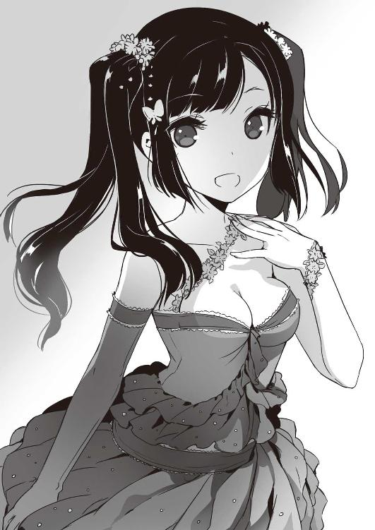
「はい！」
手招きされ、桜庭は軽い足取りでついていく。俺もその場でぼーっとしてるわけにはいかないので、その後に続いた。高峯揚羽はちらりとこっちへ視線を寄越したが、咎めることはなかった。これは了承されたと思っていいんだな？ そうだよな？
「ずっと探していたんですよ、先輩。どうして芸能人なんて目立つことを？ あと、お告げとかってまずいじゃないですか？」
堰を切ったかのように桜庭は質問を浴びせかけるが、高峯揚羽は答えない。桜庭の手を取り、ただ歩き続ける。一階へ降り、長い廊下を渡り、倉庫のようなところを横切る。
テレビ局の深底部へ導かれているんだな。でも、なんでだろう？ と、思った瞬間。
地味な金属製のドアが視界を遮っていた。
「さて」
通用口Ｄと書かれたそれに寄りかかり、高峯は腕を組む。ひどく、挑発的に。
「あんたたち、何者？ 後輩ってことは私と同じ出身地か出身校だってことかしら？」
「は？」
きょとんと首を傾げる桜庭に、高峯はひとつ笑う。さっきの微笑みとはまるで違う、どこか小馬鹿にしたような笑い方だった。
「言いなさい。あなた、どこの誰？ わたしの何を知ってるの？」
「先輩、なんでそんなことを......」
「言いなさい。それとも、本当は言えないような真似をしてるとか？」
一語を発するごとに、その目に敵意がこもっていく。日本国民を魅了してやまない美しい声が、鋭さを増していく。
「ち、違います違います。わたしは先輩を捜すために現代に派遣されてきたんです。先輩こそ、どうしてお一人なんですか？ 帰蝶先輩はどこに行かれたんです？」
「帰蝶？」
「天ヶ瀬帰蝶先輩ですよ！ 先輩の相棒じゃないですかぁ！」
半泣きの桜庭を、高峯揚羽はひたすら怪訝そうに見る。
なんか変じゃないか、これ？
横で事態を見守ってるだけの俺もまた、怪訝な気持ちでいっぱいだ。この二人の会話、まるで嚙み合ってない。
全員が何がなんだか判らないという顔をしているところへ、
「揚羽ちゃん！」
引きつれた声が響いてきた。見ると、廊下の向こうから一人の女が走ってくる。小さめのアフロヘアにデニム姿、ＫＩＤＯというロゴが入ったシャツ......もう一人のターゲット、メイクアップ・アーチストの久保田さんではありませんか！
「ああああ、久保田さん！ 久保田美野里さん！ やっぱり！ さすが先輩！」
桜庭が思いっきりはしゃいだ声をあげる。見知らぬ小娘に突然自分の名を連呼され、美野里さんは目を丸くしたが。
「駄目じゃないですか、一人でこんなところウロついたりして！ また嫌がらせでもされたら......」
両手を広げ、高峯を背に庇うようにして割り込んできた。
「なんですか、あんたたち！ ファンの子が入り込んできたの？ いくら好きでもね、していいことと悪いことがあるのよっ」
「違います、そういうんじゃありません！」
俺は目を剝き、桜庭が食い下がった。
「わたしは怪しい者じゃありません！ 揚羽先輩のこうは――――」
「贔屓のお弁当屋さんよ」
高峯揚羽はにっこりと微笑んだ。桜庭の訴えを横取りし、上塗りするように。
「新人さんで道に迷ってたんですって。だから、わたしが案内してあげたの」
「けど」
「大丈夫よ、久保田さん。安心して......さあ、二人とももうこれで帰れるわね？ じゃ、出口はここだから」
これより一切の反論は許さずといった風情で高峯は言い切り、自分の背後の扉を指した。
桜庭は目を見張り、二度三度と唇を動かす。が、言葉が出てこない。驚き過ぎて声が出ないという感じだった。
「そろそろ本番が始まる。さっさと出ていかないと今度こそ警備員に引き渡すわよ、竹田屋さん？」
苛立ったように言って、そのまま高峯揚羽は背を向けた。
「先輩、そんな。わたしたちには任務がっ」
「桜庭」
取り縋ろうとする彼女の肩を摑み、半ば引きずるようにして扉を開いた。
「桜庭、いったん引こう」
高峯の傍らのアフロ女は、未だ疑いのこもった目でこちらを見つめている。グズグズしていたら誤認逮捕とかされかねない雰囲気じゃねーか。
「でも、祐吾さん......」
「これ以上は店に迷惑がかかる」
「うう」
桜庭の体から力が抜ける。うなだれた彼女を引きずって、俺はテレビ局から出た。陽光が目を刺す。それでようやく、自分たちが光の射さぬ密閉空間をうろついていたんだと気がついた。
店までは一〇〇メートルちょい。それっぽちの距離がひどく遠く感じる。往路はあんなに意気揚々としていたのに、復路はマラソンこなした後のように足が重い。
よろよろと店に辿りつき、次の仕事に備える。桜庭がずっと泣きっぱなしになるのではないかと思ったけど、こいつは店に着くなり大きく深呼吸をして笑顔を作ってみせた。
「ただいま戻りました！ 次のお仕事はどれですかー？」
いつもの能天気全開な口調。店長がテキパキと飛ばした指示に、ふんふんと頷きながら店内を駆け回り始める。
むしろ、俺の方が仏頂面から抜け出せないまま。高峯揚羽の高飛車でちぐはぐな対応が頭から離れず、二度三度とおかずを落っことし、注文を聞き違えた。
そうしてどうにかこうにか迎えた、終業時間。
俺はエプロンを畳んでロッカーに戻し、店の裏に停めてあったクロスバイクを引っ張り出す。
さあ、帰ろうと声をかけようとしたとき、また少し驚く。桜庭はすっかりへこんだ顔に戻っていた。
「あの、今日はわたしが運転してもいいでしょうか？」
「いいけど......なんで？」
「寄りたいところがあるんです」
泣き出しそうな顔で主張され、仕方がなく俺はハンドルを彼女に譲った。
荷台に跨り、さっそく困惑する。足が地につくのは頑張って曲げればいいとして、腕のポジションは？ どこ摑んだらいいんだ？ いや、腹に手を回すのが一番安定するのはよく判ってるんだが、いいのか？ そんな触っていいものなのか？ ほっそりとした背中を見るうちに、息がどんどん苦しくなってきた。
「出発しますよ」
躊躇いっぱなしの俺に、容赦のない言葉が降ってくる。電動自転車でもないのに、ぎゅんと大きく加速した。悲鳴をこらえ、指先だけで桜庭のＴシャツの脇腹あたりを摑む。たぶん間違いなく布地が伸びてえらいことになるだろうが、許してくれ。全身くまなくぴったり張り付くとか、なんかできない！ 苦しくて死ぬ！
数分もたたぬうち、その「苦しくて死ぬ」は心理的比喩ではなく、物理的かつ現実的に俺の身に降りかかってきた。
原付でもないのに、なんだこのスピード？ 見慣れた景色がびゅんびゅんと、背後へ背後へ流れていく。ヘルメット欲しい、風が痛い、息苦しい！
そうして俺が呼吸不全のピンチと戦い続けて、数分後。
キキキキキキ、がっしょん！
イヤな音がして、クロスバイクの車体が止まった。桜庭の泊まってるホテルについたのかと、息をついてあたりを見回し、そこがまるで知らない場所であることに気がつく。
「さ、桜庭？ ここどこ？」
俺の質問に、あいつは答えなかった。ひらりとクロスバイスから飛び降りて、目の前のビルの中へと消えていく。
赤い看板、派手な音楽で安いよ安いよと声高かに歌っているそこは、日本でも有数の家電量販店。
「あいつ、まさか......」
俺は慌てて路肩にクロスバイクを停め、桜庭の後を追う。入り口横の店内案内図をちらりと見て、パソコン売場を探し出す。人でみっしりのエスカレーターは無視して、階段を全速力で駆け上がった。
高峯との合流が失敗に終わっちまった。
なら、桜庭はどうする？
......たぶん、一人で任務をこなそうとするだろう。俺に「おおっぴらに個人情報抜くな」と止められたから、いままで我慢してきたけれども、それも今日で終わりということだ。
息を切らせて、俺は三階のフロアに辿り着いた。ディスプレイがズラズラ並ぶ売場のいちばん奥に、見慣れた姿があった。
「桜庭、そう自棄になるなってば」
こっちを見ようとしないあいつの肩を摑み、無理にキーボードから引き剝がす。
「こんなところで他人のプライバシー侵害するのやめとけって」
「侵害してません」
大きく目を逸らしたまま、桜庭はパソコンを指さす。
「遮断しただけです」
その言葉の意味が判らず、俺はディスプレイへと目を転じた。そこに展開されていたのは、紫色をベースに黒い蝶が飛び交うゴージャス・シックなサイト―――そう。高峯揚羽のスピリチュアルなお告げブログだった。
「遮断って、これを？」
こっくりと桜庭は頷く。その動きに合わせたかのように、ディスプレイの中が変化し始めた。綺麗に組まれた画像が崩れ出し、フォントが次第に薄まって一つまた一つと消えていく。後には、無機質な白いページにNot foundの文字だけが残された。
「揚羽先輩がわたしを知らないとおっしゃるのなら、そして、任務に差し障りのある行為を繰り返すのでしたら、仕方がありません」
鬱々とした口振りで涙の溜まった目で、だけど、はっきりと桜庭は告げた。
「今後、あの方がネットでお告げとやらを振りまくならば、わたしは徹底的にこれを排除します。現在使っているネット環境ではもう一文字も書き込むことすらできないと思います」
それから、桜庭は高峯揚羽がこの先新しいＩＤを取得し、違うブログを立ち上げても、ことごとくそれを妨害し遮断すると告げた。
「何もそこまでしなくても......」
「そこまで、じゃないです。かなり手ぬるいぐらいです」
ひどく疲れたように、桜庭は続ける。
「我々、修復士は歴史の歪みを直すのが最大の任務。一つの歪みが次の歪みを生み、どんどんと大きくなって、やがて世界が破壊する。それを押し止めるためにやってきた人間が、自らの知識を使って、時の秩序に害成すのなら......これは、排除されなくてはなりません」
「は、排除って？」
俺の質問に、桜庭はすぐには答えなかった。
長い長い沈黙が続く。周囲には、陽気な音楽が響き、店の袋を抱えた人たちが嬉しそうに行き交っている。その最中、桜庭の声は低く、ひたすらに重い。
「......消滅させるということです。なるべく、自然な形で。現代の人たちに疑問を持たれぬようにして」
それだけは本当はやりたくないのですけれども......と、未来からきた公務員は小さくか細く付け足した。
７
翌日、日曜。
俺はクロスバイクに跨って寮を出た。
高峯と会えたことで弁当屋にほぼ用はなくなってしまった。が、すぐさま辞めるなんて不義理はできないし、テレビ制作会社にお勤めの大前さんを追いかけるのなら、あそこにいる利点はそれなりにありそうだ。
何より、平日、桜庭を預かってもらえるのがすごーく安心だった。俺の見てないところで桜庭がなんかやらかしてたらとか考え始めたら、授業を受けるどころじゃない。
「特に、昨日のアレもあるしなあ......」
現代人に判らないようにして、消滅させるとか言ってたけど、つまり、それって事故死に見せかけて殺すとか、そういうことだろ？
ダメだって。それだけはヤバイって。
桜庭にそんなことさせられない。それに、クアトロＡの一ファンとして、そんなこと許せない。彼女たちの新曲をどれだけ待ち詫びている人たちがいるか、あの笑顔にどれほどの人が救われるのか......それを思ったら、いくら人類滅亡しますよって言われても、「ハイ、判りました」なんてできないっつの。
けど、だからって、俺に何ができるだろう？
一番いいのは、桜庭と高峯揚羽を仲直りさせて、お告げとかも一切ナシにしてもらうことなんだろうけどさー。
つらつら考えながら、いつも通り混み合う駅前通りを避けて裏道を通り、あいつとの待ち合わせ場所に急ぐ。
寮を出て、最初の路地を曲がったところに黒塗りのハイヤーが泊まっていた。なんでこんな狭い裏道にこんなでかい車が？ 邪魔だったらない。少しスピードを落として、横を通り過ぎようとしたときだった。
バタン！
後部座席のドアが開いた。俺の目前で。
「ぎゃー！」
自分の悲鳴とブレーキノイズが轟く。死に物狂いで両ハンドルを握り込んだが、間に合わない。前輪がハイヤーのドアに激突して、視界が回転する。勢いを殺せぬまま、俺の体は地面に投げ出された。
「いてててっっ」
「意外と鈍いのね」
痛みにのたうつ俺の耳に、更なる追い打ちがかけられる。怒鳴り返してやろうと上げた視線の先には、仁王立ちの女。大きな帽子を目深に被り、濃いサングラスをかけている。が、その顎のラインに見覚えが、その音楽的な声には聞き覚えがある。
「高峯揚羽......？」
呆然としながらも、熱意とか憧れとかがこもった、俺の呼びかけ。だが、それは冷笑で報いられた。しなやかな割に屈強な指が俺の襟首を摑んで引きずり上げる。完全にカツアゲの体勢だ。
「ちょっと顔貸しなさい」
耳元近くで発せられる、声。
か、顔が近い！ 猛烈に近い！ 長い睫もふっくらとした唇も、吐息がかかるほどの距離にある。ピーっと音をたて、俺の脳味噌が沸騰しそう。
「なに？ 抵抗する気？」
けれど、その声に手に容赦はいっさいない。テレビ画面の向こう、神秘のスマイルを投げかけてくるその唇が、厳しく引き歪んで、ヤクザまがいの台詞を吐き出している。反論の余地一つなく、俺はハイヤーの後部座席に押し込まれていた。
「えっ、あっ！ 俺のチャリ！」
「後で弁償するわよ」
「こ、これからバイトで」
「竹田屋さんには話つけてきたわ。ちなみに、あんたが隈之江の寮生だってのを教えてくれたのも、あそこの店長」
店長、それはまずいって。個人情報ダダ漏れじゃないか......まあ、履歴書にまともに目を通さずに人柄優先とか言っちゃう人だしなあ。その緩さに助けられた身としては、文句言いづらい。
「桜庭が。俺、桜庭と待ち合わせしてるんだっ」
「これからそっちも拾うわよ。場所はどこ？」
「駅向こうのロータリー」
有無を言わせぬ口調で訊ねられ、俺は仕方なく白状した。
「ですって。そっちへ回して」
ドライバーさんは心得たというように頷いてハンドルを切る。が、一分もたたないうちに困りきったような顔で振り向いた。
「事務所の人たちをちらほら見かけますが」
「ちっ、さすが社長。迅速ね。仕方がない。この場はいったん逃げて」
高峯の言葉通り、ハイヤーは加速しロータリーを素通りしていく。遠くなっていく景色の中には、人待ち顔の桜庭もいた。状況がまったく飲み込めないまま、痛む腹を抱えて俺は小さくなっていく彼女を見ているしかなかった。
「二、三先の駅で降ろして。そこからは自力で逃げるから」
「かしこまりました」
「社長にはわたしに命じられたって必ず言うのよ。息子さんへのサインは、後で必ずあげるから」
「はい」
目を白黒させっぱなしの俺の横で、話は勝手にどんどんまとまっていく様子。大通りの途中、地下鉄の入り口横でハイヤーは止まり、今度は乱暴に外へと引っ張り出された。
「このへんで一番賑わうのはどこ？」
「なんでそんなこと」
「どこって言ってんでしょ」
「浅草寺か大江戸スカイタワー......」
またも胸倉を摑まれ喉元締め上げられて、俺は渋々返答した。身長差二〇センチ以上はあるってのに、この扱い。この女が桜庭と同じ世界から来たってなら、未来人の筋力は飛躍的にあがってるってことか？
「タワーはよろしくないわね。出口を押さえられたら詰むし。浅草寺にしよう。見たことないしちょうどいいわ」
言いながら、高峯揚羽は俺を引きずる。あっと言う間に地下に引っ張りこまれ、電車に叩きこまれた。
日曜の地下鉄、有名観光地や老舗百貨店をいくつもつなぐ路線だけあって車内はそれなりに混み合っている。高峯は左右へ鋭く視線を走らせ、車両の一番奥、連結部分のすぐ近くへと進み背を向けた。その間、俺の腕を摑みっぱなしだ。
そのぬくもりにいっさい惑わされないといったら噓になるけど、ギリギリ締め付けてくる痛みがときめきを相殺する。これをご褒美ですって言える上級者の域に、俺はまだ達してない。素直に痛い、怖い。
電車はどんどんと進み、浅草駅に滑り込んだ。どやどやと降りる人に混じって、俺と高峯も地上へ向かった。
日本有数の観光地は、今日も人出が多い。特に、雷門の方へ進めば進むほど、人ごみが増していく。
高峯は躊躇わず、その人波の中へと歩みを進めた。それどころか、俺の腕に自分のそれを絡め、体をそっと寄せてくる。突然のことに俺は声もない。驚いて、低いところにある相手の目を見返すだけで精一杯。
「こうしてると一見カップルぽいでしょ。美女と野獣って感じの。どう？」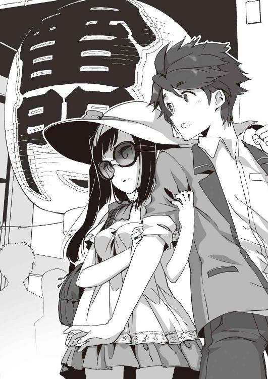
どうと聞かれても。
黙りこくった俺に、高峯は気を悪くしたのか、ますますぐいぐいと体を擦り寄せてきた。
「なによ、反応薄いわね。私みたいな光り輝くような美女相手のときは、手を握られただけで赤面あるいは失神するぐらいの芸はみせてくれないと。あまりにも可愛げってものがなさすぎだわ。ちょっと顔がいいからって、鼻にかけてるんじゃないの？」
いや、俺は俺なりにいまけっこうやばい。あと、鼻にかけてるのはどう見てもそっちだ。更に、赤面と失神ではリアクションとして幅が広すぎるだろうがよ。
一つ一つ論破したろうかと思ったけど、そんなんしてたらますます目立ちそうだ。
「こ、こんなところ人に見つかったらまずいんじゃないか？」
「激しくまずいわね」
そう言う割に、高峯はあくまで淡々としている。
「でも、こうして堂々としている方が見つからないものよ。木の葉隠すには森の中って言うでしょう？ まあ、一介の木の葉にしてはあまりにもまばゆすぎて隠し切れないって忠告はあまりにもっとも過ぎて頷くしかないけれども」
そこまで言ってない。ごもっともとはそれなりに思うが、口には出してない。
「何よ？ まさか文句でもあるの？ 六・五割イケメン程度のくせして」
「ろ、ろくてんごわりいけめん？」
「一〇人のうち、六人がイケメン認定して、一人が『イケメンって言われればイケメンかなあ？』と言い、残りの三人が『え？ イケメン？ フツメンだろ』って断じるタイプの顔のことよ。ちなみにわたしは一〇割美女ですけれどね」
蕎麦かよ。一〇割とか六割とか、やけに具体的な数字が臓腑を抉るよ。
観光地の町角には、仲良く肩を並べデジカメをいじっている者、手をつなぎ身を寄せあって巨大な提灯を見上げている者、名物の饅頭やら何やらを頰張ってる者もいた。その中で、俺たちの姿は確かに埋没している。ときどき、おや？ というように高峯を見る人もいないではなかったけど、誰も声をかけてはこない。
「いまは事務所の人たちから逃げるのが先決。彼らは私が一人で逃げてると思ってるはずだから、あなたが一緒だとしばらくはいいカモフラージュになるでしょう。よかったわね。あなたが生まれてきた甲斐は、わたしの役に立つというこの一瞬にこそ存在するのよ。瞬間瞬間をその胸に焼き付けて、残りの人生しっかりと頑張ってね」
いくらか優しい声でそう告げられて、思わず礼を述べたくなったが、違うよな？ たぶん、俺、いまとんでもないこと言われたんだよな？
テレビやラジオでは言葉少なな神秘の乙女は、毒舌で俺を翻弄しまくりながら誘導する。
まずは、観光客でぎっしりの仲見世通りへ。左右には土産物屋や和風の小物屋などが延々と軒を連ねていてたいそう賑やかだ。店から漏れ落ちてくるＢＧＭや人々のひっきりなしの歓声で溢れ返っている。
高峯はそれらをぐるっと見回したあと、「観光案内所」と書かれた一軒へ足を向けた。素早い動作でパンフレットを引き抜き、そのうち数冊へざっと目を通した。スパイじみた出で立ちも手伝って、いかにも逃亡犯が安全なルートを探してるって風だった。
「なんで逃げなきゃいけないんだよ？」
「......ここのところ、いろいろあってね。勝手に外出しないよう厳命されてるの」
「いろいろってストーカーとか？」
この間、眉を吊り上げてきゃきゃん騒いでたアフロ女を思い出す。警戒心の固まりみたいだったあの様子を思えば、ただごとじゃないのかもしれない。
高峯は曖昧に頷いて、
「でも、どうしても、聞きたいことがあったから」
「聞きたいこと？」
「わたしのブログをダウンさせたの、あなたたちなんじゃないの？」
「う」
鋭いご指摘に、俺は口ごもる。正確に言うと、桜庭が店先のパソコンでやりました。ものの五分ぐらいで。
「どうして、そこまでするの？ 昨日言ってたことといい......わたしがどこの誰なのか、何か知ってるの？」
その台詞に違和感を覚え、俺は眉をひそめた。
知ってるに決まってる。アイドルの高峯さんでしょう？ という回答は求められていないっぽい。
怪訝そうな俺に、高峯揚羽は少しだけ視線を泳がせた。束の間、迷うような気配。それから。
「わたし、覚えてないのよ」
ぽつりと、そう呟いた。
「一年半前から前のこと、何も覚えてないの」
衝撃の告白だった。
それってつまり、クアトロＡに加入する直前あたりから昔のことは、なんも覚えてないってことになるんじゃ？
「初めてだったのよ」
低い、呟き。
「昔のわたしのことを知ってそうな人に会ったの、初めてだった。だから」
そこで、高峯揚羽は言葉を濁し、俺からすいと視線を逸らした。いかにも、しまったという顔。いまのはどうやら、彼女的にとんだ失言だったらしい。
それから、
「あっ、舟和の芋ようかん！」
妙にはしゃいだ声を張り上げて、高峯は立派なショーケースを設えた店の前へと走り寄っていった。浅草で知らぬ者とてないという、超有名和菓子屋で、観光客らしき人々がショーケースの前に群を成していた。
「立ち食い用のバラ売りなんかしてるのね。知らなかった！」
「た、立ち食いする気か？」
「そうよ、悪い？」
悪くはない。が、スピリチュアルの乙女・高峯揚羽様としてそれはどうなんだろう？
「心配しなくてもちゃんと奢ってあげるわよ。他人の薄い財布あてにするほど落ちぶれてないし、弾避けに餌をあげるぐらいの慈悲ならわたしにだってちゃんとあるわ」
渋面の俺とは対照的に高峯は上機嫌だ。スピリチュアルは裸足で逃げ出した状態だが。彼女は掌サイズの芋ようかんを三つ買い求め、一つはすぐさま口に入れ、一つは俺に寄越し、あとの一つはバッグにしまった。
「おいしーい。このほどほどの甘みが人気の秘密かしらね。わざわざ来た甲斐あった」
「食ったことないんだ？」
雷おこしを食ったことのない都民はいても、舟和の芋ようかん食ったことない都民はいないと思ってたけど。デパートとかスーパーの催事に、四六時中出てくるし。
「ないわよ」
咀嚼の合間合間に、高峯は言う。
「自分で自由に外歩くの自体がほぼ一年ぶりだもの。食事だっておやつだって、マネージャーが用意してくれたものでこと足りるしね」
「そっか。アイドルってたいへんなんだなあ」
「まあね」
最後の一欠片を口に放り込み、高峯はまた辺りを見回す。また何かえらいこと叩きつけられるのかと俺は身構えたが、今度は名物の揚げ饅頭を見つけて、そちらへ走っていった。微笑ましいと言っていいその姿に、俺は束の間、和まされたが、途中で気がつく。いや、こんなところで浅草名店めぐりしてる場合じゃないだろう！
「おい、桜庭は？ もういいのか？」
慌てて高峯の肩を摑み、必死に訴えた。
「俺としては、いますぐにでも和解して欲しいんだけど。つか、このままいがみあったまんまだと、マジで大変なことになるから」
「大変なこと？」
「君、殺されちゃうかも」
なるべく声を低め、できる限り恐ろしげかつ真剣に言ったつもりだった。けど、さすが天下の芸能人。高峯はちらっとこちらを見上げただけ。
「そうね、そろそろ呼び出してくれない？」
「どうやってだよ。あいつ、まださっきの場所いるかもしれないのに」
「携帯ぐらい持ってないの？」
「持ってない」
「は？」
「身元のはっきりしない未成年じゃ、携帯の契約なんかできっこないだろうが」
高峯はようやく眉根を少しだけ寄せた。怒っている、というよりはどこか不安げな表情だった。
「身元、はっきりしないの？」
「自称未来人だからさ」
「未来人......」
低い、呟き。後にはただ沈黙が続く。
俺は俺なりに必死で高峯揚羽の表情を読み取ろうと試みた。俺の言うことを小馬鹿にするのか、それとも、それなりに信じるのか？
でも、その顔に刻まれている感情はあまりに複雑過ぎた。驚きとも不信ともつかぬ色合いが、深い黒い瞳に浮かび上がっている。
「......浅草寺にお参りもしたかったけど、どうやらこのへんが限界ね」
ふいと目を逸らし、高峯揚羽は人混みをかき分け出した。俺にはよく判らないが、追っ手がどこぞに紛れていたらしい。
ぎゅうぎゅう詰めの仲見世通りを抜け、大通りへと出る。道の向こうには、青い庇の老舗デパートが広がっていた。
「駅はどっち？」
「どこいきの電車の？」
「どこでもいいわ！ いったん逃げられれば」
「じゃあ、あのデパートが東武線の駅に直結してる」
大きく頷いて、高峯は走り出した。
一番大きな扉に飛び込みそうになったのを引き留めて、ちょっと陰になったところにある改札へと向かわせた。通学も通勤もしないアイドル様はパスモもスイカも持ってない。もどかしそうに切符を買って、改札へ飛び込み、あまり人のいない階段を走り上ろうとした。
が。
「よっしゃ、高峯討ち取ったりー！」
高い声が俺たちの背後から追いついてきた。同時に赤い影が俺の視界を横切る。弾丸のごとき勢いで、女が一人飛び込んできて高峯の背中を蹴りつけたのだ。
悲鳴と共に細い体がくずおれる。
そのまま、ごろごろと落ちてきた体を俺はとっさに受け止めた。両足を踏ん張り、手を広げて、最下段への落下はなんとか食い止めた。
が、次の瞬間、例の赤が視界いっぱいに広がって、今度は俺ごとその場に押し潰された。
「いくらオフの日だからって、一人でこんなとこ来る奴がいるかよ！ シャッチョさんにも言われてたろ？ あんた、いろいろと危なっかしいんだからよぉ」
頭上から響き渡るソプラノと、腹を圧迫する重みとに、俺はいま自分がどんなことになってるのかをようやく悟った。
一番上にいるのは、さっきの赤......いや、いまどき珍しい小豆色のジャージをまとった女。胸には「深川西中 三-三 田中（あ）」という名札まであって、目を見張るほどダサい。
その女の尻の下で高峯揚羽がじたばたし、更にその下に俺が痛みにのたうちまわっているという。なんだこれ、どんな地獄絵図だ。
「こらこら、あきなさん」
もう一人の女が、俺たちの横に立った。
「無体な真似して顔に傷でもこさえたらどげんとしもすか。あたいらの商売にもかかわってきもす」
目深に帽子を被り、黒いサングラスにマスクという正当派の変質者ルック。加えて、そのやんわりとした口調はことごとくなまっている。「すみません、いまなんておっしゃいましたか？」と訊き直したいレベルで。
「あ、あんたたちまで出張ってくるなんて......」
高峯揚羽が口惜しげに呻いた。
声を発するたびに、その胸が上下するのがシャツの布越しに判る。頼む、あまり声出さないでくれ。
「てめえだけおもしろそうなことしてるとか、なんか腹立つし」
「東京には他に知り合いもおりもはんから、暇で」
二人の女はそれぞれ、さらっと言った。クアトロＡの一ファンである俺には、その声に聞き覚えがあった......実に恐ろしいことに。
田中（あ）と名札を掲げる粗暴な女......あれは、正当派お嬢様、芸能界の姫君と謳われる上之院燿奈ではなかろうか？ もう一人、お国なまり丸出して話してるあか抜けない女の方は、日米ハーフでたどたどしい日本語がキュートと大評判のアリス淡島のような気がする。
俺の耳はそれを確信している。
だが、心は全力で拒否を続けていた。
「あれ？ 山田がいねえぞ？」
もがく高峯をしっかりホールドしたまま、燿奈姫っぽい女があたりを見回した。
「あ、おったと。あそこあそこ」
アリス淡島らしき女が、俺たちの背後を指さす。
階段の途中、何かが転がっていた。あまりにもぐったりとし、あまりにも生気ってものがないため、人形か死体でも置いてあるように見える。周囲の人も気味悪そうに視線を投げるだけで、避けて歩いているぐらいだ。
変質者ルック女がその人型ズダ袋に駆け寄り、ぐいと引き上げた。細い体が力なく左右し、かっくん、と、首が傾いて顔が露わになる。血の気がなく、紙のように白いその顔は、向日葵みたいな元気娘！ というキャッチフレーズでお馴染みの新城あやかに眼鏡をかけさせたものにたいそう酷似していた。信じられないが。
「山田さん、死んだらいけん」
「た、太陽光がきつい......人ごみきつい......」
口の端から泡を吹きながら、ゾンビのように呟く。
「だから、ついてくんなって言ったのによお。もう面倒だから、そのまますみやかにくたばれや」
「ひどい......そういうこと言う人には、マリクリ様の天罰下る......」
ああ、認めたくない。認めたくないが、いまさりげなく呪詛を唱えたその声は、確かに新城あやかのものだった。
「なにしてんの、デクノボウ。大人しく女に組み敷かれてないで、さっさと逃げるのよ」
俺の耳のそばで、高峯が小さく囁く。あまりのことに停止状態に追い込まれた俺の思考が、ここに至ってようやく動き出した。
しかし。
「ふんぬー！」
手足と腹筋に力をこめ、体を起こしたのは、俺ではなくて高峯本人だった。ころりと燿奈姫らしきアレが転がり落ち、俺の体も軽くなる。脱兎の勢いで高峯は走り出し、俺は慌ててそれに続いた。
「あっ、こら待ちやがれーっ」
「逃げたらいけんー！」
「待たないとマリクリ様の祟りが......」
騒ぐ女たちを置き去りに、俺と高峯は一気に階段を駆け上がり、目の前にいた電車に飛び乗った。振り向くと、二人の女はすぐ目の前まで追いついてきている。
「逃がすかーっ」
特に、ジャージ女の身のこなしはたいしたもんだ。さっきの跳び蹴りもかなり年季が入っていた。
さすがに臆して後じさる高峯の腕を、俺はとっさに摑んだ。ジャージ女となまり女が電車に飛び込んできたのとほぼ同時に、高峯を抱えてホームへ身を投げ出した。
ぷしゅーっと音をたて、電車の扉が閉まる。
ぶ厚いガラスの向こう、あっけにとられた女の顔が二つ並んでいた。それは電車の加速と共に遠ざかり、ついには消えていった。
「......た、助かった」
高峯は大きく嘆息し、けど、すぐに表情を改めてつんとそっぽを向いた。
「別に放っておいてくれても、わたしは自力でどうにかできたけど」
それはどうもありがとう。ツンデレテンプレートまんまの台詞が、いまの俺には救い。神秘の揚羽様が高飛車なのはある意味道理ってものだ。
ホームの端で力なく横たわっている向日葵の残骸を目で追って、俺もまた大きく溜め息をついた。あやかっちのようなそうでないような、ゾンビ。でも、救護室につれていくしかないだろう。
「放っておきなさい。さっさと逃げないと」
「でも、あの人、いまにも死にそうな」
「死ぬ死ぬ言ってるけど今まで一度だって死んだことないのよ、大丈夫」
そりゃそうだろう。でないと、この間、俺の頭上で「今日も来てくれてありがとうー！ 僕、断然頑張っちゃうからね！」とか言ってたあれはなんだってことになる。
「いや、この時点でもう既に充分あれはなんだったんだろうって気がしてきてるが......幻？」
「そうよ、幻よ。田中だの鈴木だの山田だのは、けっしてクアトロＡの中の人なんかじゃないから。あんたは何も見なかった！ いい？」
改めて念を押され、かえっていま見たものは現実だったのだという気がひしひしとしてきた。
「とにかく逃げるのよ！」
呆然とする俺を引きずって、高峯は入線してきた車両へ再び乗り込んだ。
川面に影を落としながら、電車は走り出す。次から次へと見舞われる事態にちっともついていけない俺を乗せたまま。
８
結局、俺たちはそのままスカイタワー最寄り駅へと向かい、人混みに紛れてタクシーを捕まえた。
竹田屋に電話して確認したところ、桜庭は一度ちゃんと店にいったとか。で、店長に「休むんじゃなかったの？」と言われ、慌てたように出ていったとのことだった。
「つまり、現在行方不明だってことだ」
俺の声のトーンは自然と落ちる。
あちこち探し回ってるんじゃないといいが......ようかんなんか食ってる場合じゃつくづくなかった。
「家に帰ったんじゃないの？」
「家なんかない。ホテル住まい」
「じゃ、そこいきましょ」
せっせと髪を結い直し、帽子の代わりにウィッグを被って高峯は言う。トレードマークとも言える黒髪がすっぽり隠れ、ぐるんぐるんの茶髪になったせいで印象がだいぶ変わった。ついでに、口紅も一段明るい色に引き直して、サングラスも取り替えてとなると、もう何がなんだか。
大通りを走り抜け、タクシーは見慣れた駅前へと出た。
寂れたホテルのフロントには、いつも仏頂面で最低限のことしか言わないおっさんが座っている。桜庭のことを訊ねると無言のまま電話を取り、「お客様ですよ」と告げた。
数分を待たず、転がるように桜庭がロビーに現れる。
「祐吾さん！ 揚羽先輩！」
必死の形相で走り寄ってきたあいつに、高峯は芋ようかんの袋を差し出した。
「これ、お土産」
「ありがとうございます！ あ、ようかんだ！ しかもお芋じゃないですか。やっぱり覚えててくださってたんですね！」
袋の中身を見たとたん、桜庭の目は感涙で潤み出している。
「......偶然よ」
高峯はついと目を逸らした。
「わたし、何も覚えてないの」
それから高峯はロビーの隅に置かれたソファへと腰を下ろした。つられて俺と桜庭も腰掛ける。
古ぼけた合皮には似つかわしくない、優美な脚。それをゆっくりと組んで、高峯は小さく息をついた。
「一年半前から以前のことは何もね」
それから、天下のアイドル様はぽつりぽつりと語り出す。
「ある日、突然、渋谷の雑踏の真ん中にいたの。どうしてそこにいたのか、何をしようとしてたのかも判らない。判っていたのは、自分の名前だけ」
どうしたらいいのか判らず、呆然と佇んでいたとき、ＫＩＤＯの社長が通りかかって言った。
「君、綺麗だね。アイドルにならないかい？」
社長からすれば、ごく当たり前ごく普通のスカウト活動だったろう。
けれど、行き場のない高峯にとっては、唯一のよすがに見えた。
「それからは、ご存じの通りよ。他の三人に会って、必死に歌と踊りのお稽古をして......どうも、わたし、もともとそっちの訓練は積んでいたみたいでね、割と馴染むことができたわ」
そうして、クアトロＡの揚羽様となり仰せて、現在に至る、と。
桜庭は大きく目を見開き、じっと聞き入っていた。涙は引っ込んで、代わりにじわじわと暗い影が広がっていく。
「......そんな」
すべてを聞き終えた桜庭の頭が、がっくりと落ちた。細い肩が小さく震える。
高峯はその様子をじっと見つめていた。次はおまえの番だとその目が言っている。
「わたしとあなたは二三世紀の人間です」
そのプレッシャーに耐えかねたかのように、桜庭は語りだした。つっかえつっかえ、いままでのことを。
話が進むにつれ、高峯の眉が徐々につり上がっていく。空気がヒリヒリする。これはまずいんじゃないかなって、俺でさえ判るぐらい。
「そんなバカなこと、信じろって？」
ああ、やっぱりそうなるか。至極、ごもっともなご意見にフォローしようもございません。
「で、でも、本当なんです。これがあなたの証明書です」
言いながら、桜庭は一枚のカードを差し出した。例の文化庁時軸管理局と書かれたものだ。名前は高峯揚羽。再発行の判子がどっかりと押されている。
「こんなもの、いくらでも作れるじゃない」
おっしゃる通り。二三世紀ならではの素材を選んでくれないと。
「くだらない噓八百並べてわたしの気を引きたかったの？ ご苦労様なこと。どうしてもって言うならサインぐらいしてあげてもいいわよ」
スターらしい尊大な台詞を投げつけながら、高峯は立ち上がる。
「なら、どうしてあなたは未来のことが判るんです？」
桜庭は必死になって食い下がった。
「自分に予言の力があるなんて信じるより、わたしの話の方が筋が通ってるって思いませんか？」
「バカバカしい」
高峯はもう聞く耳を持たなかった。桜庭を鋭く一瞥したあと、濃いサングラスをかける。律動的な足取りで、ホテルの出口へと歩き出した。
「ちょっと待ってくれよ」
俺も慌てて立ち上がり後を追う。自動ドアの鼻先ぐらいのところで、高峯の行く手を遮るのに成功した。
「もう少しだけ話を聞いてやってくれ」
「バッカバカしい」
二度目の台詞。さっきより更に険がある。深いグラス越しだ、高峯の目はもう見えない。が、ものすごい睨まれていることは俺でも判った。
「そこどいて」
「どかない」
鋭い眼力とスターのオーラに圧倒されそうになりながらも、俺は叫んだ。
「桜庭はあんたが予言を続けるなら、最悪、殺すって言ってるんだぞ！」
またも女とは思えない怪力に押し退けられそうになり、なんとか踏ん張る。
「あんたを待ってるファンがいるんだろ？ クアトロＡがテレビに出てるのを見るだけで幸せになれるって人間が、何万人にもいるんだろ？ そいつらを悲しませないでくれよ！」
俺なりの必死が伝わったのか、高峯揚羽は足を止めた。
「先輩は一人でこの町にいたっておっしゃってましたけれど......所持品に何か変わったものはなかったですか？」
「所持品......」
桜庭の問いかけに、高峯の表情が少しだけ動く。
ちょっと待っててくださいと叫んで、桜庭は身を翻してエレベーターに飛び乗り、三分ほどで走り戻ってきた。手には、出会った日に抱えていた革のトランクを抱えている。
「そのトランク......」
「見たことあるんですか？ あるんですねっ？」
「あるけど......中は空っぽで何の役にも」
「いいんです。空っぽなのが普通なんです！」
言いながら、桜庭はそれを開いて見せた。
「これはこの時代に派遣される修復士がみんな持っているものです。一見、ただの古い鞄でしかないですが、こうすると修復士の個人情報を読みとってシステムが起動し、二三世紀と通信ができます」
内側に張られたポケットに指をつっこみ、説明する。が、何も起きない。変わらない。
「こ、壊れてなければですけれども」
「............」
スター様の沈黙が怖い。ものすごく。
黒く大きな瞳いっぱいに浮かぶ、不信感。小さな頭の中で何かがフルスピードに回転して、計算を続けているのが手に取るように判る表情だった。
そして。
「そこどいて。大声出すわよ」
計算の結果は俺たちには不利な方に転んだらしい。
「でも」
「どきなさいっての！」
またも女とは思えない怪力に押し退けられそうになり、なんとか踏ん張る。
「お、落ち着けって。いちおうトランク見てやってくれよ。これ、俺のメアド。怒りがおさまったらでいいから、連絡くれれば」
「何を言ってるんですか、祐吾さん！ 先輩をこのまま帰していいわけありませんっ」
桜庭が追いついてきて、割って入ってきた。
「お願いですから、せめて予言だけはやめてください。あれはあなたの力なんかじゃなくて、予め与えられた知識。現代の人には知らせちゃいけないものなんですから！」
「い・や・よ！」
高峯揚羽の声がますます険を帯びる。
「つまらない作り話するだけじゃなく、人のことを無能呼ばわりまでする気なの？ 社長の言いつけ破ってここまで来たのに、こんな」
「噓じゃないです本当です、信じてくださいってばー！」
「ほんっと、腹立つ！ だいたい、本当にわたしの知り合いだって言うならもっと早く出てきなさいよ！ いまさら、こんなこんなこんな」
「痛い痛い痛いーっ！ 先輩ひどぉいいいぃぃいっ」
「そっちこそ痛いじゃないの！ 離しなさいよ！」
「いいえ、離しません離しませんとも！ 次の時軸の岐枝を乗り切るためにも先輩のお力は必要なんですからっ！ しくじったら、人類滅亡なんですからーっ」
「ラームス？ なに？」
高峯の動きがわずかに止まる。首を傾げた相手に、桜庭はにっこりと微笑みかけた。桜庭、待て。まだ言うなという俺の制止は間に合わなかった。
「恋愛キューピッド役ですよ。とある方の恋の応援をするのです」
「.........」
「覚えてらっしゃらないそうですが、もともとはこれ、先輩の任務だったんですよ？」
高峯はわずかな間、押し黙った。天使の歌声を放つ唇が、ふるふると震えている。
「ばーかーに、しーてーるーのー？」
その声のトーンが一段階......いや、二段階ほど落ちる。怒りのあまりか、その美しい顔から表情らしい表情が吹っ飛んでしまっていた。
「バカになんてしてません。崇高な使命です！」
胸を張る桜庭に、俺はかける言葉を失う。それでなくても信じてない相手に、そんなん言ったらこうなることは火を見るよりも明らかだと思うんだが！
「落ち着けって、おまえら落ち着け！」
桜庭の髪を引っ張ろうとする高峯の手首を握り、高峯をぽこぽこ叩く桜庭を肩で押しやる。後は引き離すだけ、と、思ったその時。
「揚羽！」
「祐吾くんっ？」
二つの声が背後から突き刺さってきた。
一つは白いセダンの窓から飛んできている。三十過ぎぐらいの、見も知らない女性だった。もう一つは買い物バッグをぶら下げた、「一見」美女。怖いぐらいよく知ってる相手。
「マネージャー！」
高峯はさっと身を翻し、その白いセダンに乗り込んでいく。車はすぐさま発進し、町の中へと消えていった。
後に残されたのは、俺に縋り付いたまま目を白黒させる桜庭と。紅い口元をひくひくと引き攣らせる浅見さんと。ついさっきまでホテルの門前で二人の美少女と押し合いへしあいをしていた、この俺だった......。
９
午後六時。
初夏の日は長い。表はまだじりじりと空気が焼け、道ゆく人たちもどこかぐったりとしている。
俺は安ホテルのロビーに逆戻り。エアコンは効いているけれど、汗が止まらない。横にいる桜庭、そして正面で睨む浅見さんの視線が痛くて。
「で」
冷え冷えとした声が響く。アルトボイスともテノールともつかない、中性的な声色。額にはいくつもの青筋が浮かび上がっている。
「話をまとめると。あなたは入学早々、北海道から家出してきたそっちのお嬢さんを拾い、けど、警察にも届けずご実家にも知らせずこのホテルに匿い、一緒にバイトまでしてた。桜庭さんはアイドルの高峯揚羽とは幼なじみで、彼女に再会したくていろいろ頑張ってる......そういうことね？」
そういうことにした。
まさか、『彼女も（おそらく高峯も）未来人で、任務を果たそうとしている』なんて言えないし、言っても信じてもらえない。
「最近、外出延長届がやたら出てると思ったら......この子のせいってわけね？」
頷こうとし、途中でやめた。
そういや五月以来、俺、桜庭問題以外で寮の外に出た記憶がない。淋しい青春だよ、ちきしょう。
浅見さんはしばらく俺たち二人を鋭い目で見ていたけど、やがて、大仰な溜め息をひとつ吐き出した。赤いマニキュアに彩られた手が、買い物バッグの中からノーパソを摑み出す。テーブルの上に開いたままの桜庭せせりの身分証明書へ目を落とし、キーを叩いた。
「......いちおう本物ね、これ。本籍もちゃんと札幌にある。親御さんは死亡、親戚もなし、か」
それは未来のお役所が時軸修復士のために発行した証明書......つまり、恐らくは偽造したものだと思うが、ブツはしっかりしているらしい。っていうか、どうしてこんなこと一瞬で調べつくんだ、この人？ 浅見さんの方がよっぽど怪しくないか？
動揺する俺の横で、彼はどこまでも冷静かつ迅速だった。
「お金はある？ いくら？」
「三〇〇万円ぐらいです。あと、竹田屋さんで週に二万円ぐらいいただいてます」
「後は？ 何持ってるの？」
質問というよりだんだん尋問っぽくなってきた浅見さんの問いかけに、電波さまはひたすら素直だ。黙って、例のトランクを差し出して見せた。
中を開き、布張りの底やよごれたポケットなどに触れていくうちに、浅見さんの眉間の皺がどんどん深くなっていく。
「これ、どこ製？」
「日本製です」
但し、いまから二〇〇年後と続けそうになった桜庭せせりを、俺は大慌てで目で制した。浅見さんの眉間の皺がいっそう深くなる。
沈黙が落ちた。
他に客はまだまだいるのに、俺たち三人の周囲だけが切り取られ、冷たい空気を押し込まれたみたいだ。
浅見さんは桜庭せせりの顔を幾度か見直したあと、まっすぐに俺へと目を向けてきた。
「で」
髪をかきあげ、浅見さんは尋ねる。長い前髪に埋もれる紅い指が、なにやらとても不吉な印象だった。
「この後、君はどうしたいの？」
「どうしたいの、と、申されますと？」
「この子をずーっとここに置いとくつもり？ いつか私以外の誰かに見つかって大問題になるかもしれないわよ？ それでもいいの？」
「困ります」
「じゃあ、警察に引き渡すなり、施設につっこむなりなさい」
「それも......ちょっと」
たぶん、そんなところに放り込まれたら、『単なる頭のおかしい女』ってことにされて、彼女の言う『任務』が果たせなくなる。それじゃたぶん意味がない。
「わたしは探してる人がいるんです。一人は見つけましたが、あと二人見つけないといけません」
「二人も？」
見つかった一人は高峯揚羽で、あとの二人は高峯と桜庭の相棒ってことなんだろうな。うん、噓は言ってない。「恋愛キューピッドです」とかのたまうより、ずっとマシ。
浅見さんは底光りするような目で俺たちを睨みつけている。当然だろう。良識的な大人だったら、この怪しい展開、絶対に受け入れない。
「......祐吾君はこの子のお願いを聞いてあげたいの？」
「はい」
「どうしても？」
「どうしても」
しん、と、あたりが静まり返った。
夏まではまだいくらか間があるってのに、手足がやたら暑い。でも、背中がなんだかひんやりする。
やがて。
「まあ、いい。なんとかしましょう」
渋々というように、浅見さんは口を開いた。
「ほ、本当ですか？」
「ありがとうございます、浅見さん」
「お礼は妙子さんに......祐吾くんのお母様に言って。祐吾くんは滅多に我が儘を言わない子だから、どうしてもって言い出したときは、なるべく訊いてあげて欲しいって......そう言いつけられているから」
それから、浅見さんは携帯電話を取りだし、あちこちへと忙しく連絡をし始めた。
俺はそれを呆然と見ていたが、桜庭せせりはもっと呆然としていた。
「すごいです、祐吾さん。こんな短時間で......」
「いや、なんか......すごいのはうちのおかんらしいけど」
「すごい人のお母さんはやっぱりすごい人なんですね」
半ばうっとりと、彼女は言う。
「何をなさってる方なんですか？」
「宝石のバイヤー」
だったはずなんだけれど......
「んだと、てめー？ 岡崎のねーさんのおっしゃることが訊けねえって？ よし、判った。今日から背後に気をつけろ。月夜ばかりだと思うなよ」
立て板に水の如く脅し文句を吐き出し続けている寮長閣下の様子を見ながら、だんだん自信が持てなくなってきた......。
「よかった」
ひっそりと肩を落とす俺の横で、桜庭は思いの外元気だ。
「先輩に『何も覚えていない』って言われたときは目の前が真っ暗になりましたけど、こうして他に力を貸してくださる方が現れて。これでわたし、まだ頑張れます」
か細いばかりだった声に、力が漲る。握り拳を振り上げて、桜庭は高々宣言した。
「たとえ一人でも、絶対に大前さんの恋のキューピッドになってみせます」１
ローマ神話ではキューピッド、ギリシア神話での名はエロス。
男女の仲を取り持つ、神さまのことだ。
羽生やして弓矢を持ってる小便小僧みたいなビジュアルで、たいていはフルチン。有り難みもへったくれもない。
けど、俺は鏡に向かい、自らに向かってこう問いかける。
「キューピッドだ、祐吾。おまえはキューピッドになるんだ......！」
ひとけのない、寮の男子トイレ。自分の声が鬱々と響いていく。どっからどう見ても、異様だって自覚はある。いっそ、「エロスだ、おまえはエロスになるんだ」の方が、男子高校生同士何か通じ合ってくれるかもしれんぐらいですよ。いや、それはそれでちょっと見てらんない感じだけれど。
桜庭と高峯が決裂して、はや三日。
アイドル様からの連絡はいっこうになかった。桜庭は当初の決意通り、大前氏の恋愛を見事成就させ、破滅のドミノ倒しを食い止めるという。
そこで、イメトレですよ。
やる気・元気・おかざきですよ。
まあ、具体的に何をどうしたらいいのかは、ひとつも思いつかないんだけどな。
思わずついた溜め息が、深く重い。
純愛の男の恋を成就させるのだったらまだしも、三股かけててどれが本命かも判らないような男の恋路を手伝えって。無理ゲーにもほどがある。
「......なにをしてるですか、ゆうごくん？」
背後の、更に低いところから響いた声。
ひんやりとしたトイレ内の空気が、一段と冷えた気がする。恐る恐る返した視線の先には、モップ片手の灯子ちゃんが不審さ満杯の目でこちらを見上げていた。
「こんなところでひとりでブツブツはなしてるなんて、てんけいてきなイジメられっこのすることですよ？」
「いやいやいや、大丈夫。我が校・我が寮・我が周囲ではそういった事態は確認されておりません」
どっかの教育委員会の人みたいなことを言いながら、俺は慌ててトイレを出る。しかし、おしゃまな副寮長閣下はまったく納得してくださらなかった模様。
「なやみごとがあるなら、ちゃんととうこにいうですよ？ ゆうごくんのそうだんならタダできいてあげるですよ」
他の人相手のときは金取る気なんだろうか、この幼女。
「ありがとう。でも、灯子ちゃんに聞かせるようなイイ話でもないからさ。なんというか、ドロドロのズブズブっていうか」
「わかりました。ずばり、れんあいのお話ですね？」
「な、何故そう思うの？」
「男と女のあいだには、ふかくてドロドロした川があるとむかしからきまっています」
薄い胸を堂々と張られ、俺は苦笑するしかない。
「こう見えても、とうこはれんあいマスターなんですよ？ ぱぱの持ってるハーレクインロマンス、大ぶぶんよみました」
「マジで？ あれ、ちゃんと振り仮名とかあるんだ？」
「いやですね、ゆーごくんたら。とうこをルビなんかにたよるような子どもだと思ってるんですか？」
ルビ、と来ましたよ。専門用語ですよ。
それからも、俺は話を右に左に振って灯子ちゃんの追及を逃れようとしたんだけれど、何故か彼女はいっこうに引き下がらない。やれ話してみせろ、相談に乗ると言い続けながら、結局、俺の部屋までついてきてしまった。
「だからそのー、俺じゃなくて知り合いの話なんだけどね」
「おとこがしりあいの話だってまえおきするときは、九〇パーセントのわりあいで自分の話だってことですけど」
「これはその残り一〇パーセントのパターン！ ホントに俺のことじゃないから！ ここ、すっげえ大事な前提なんでちゃんと吞み込んで」
不承不承と言うように、灯子ちゃんは頷く。
幸い、同室の三村はどこかに外出してしまったらしい。俺は自分の椅子に座り、灯子ちゃんに奴の椅子を勧めた。古びた木製のそれにちょこんと座り、灯子ちゃんは大きく首を傾げて続きを促す。
「とある男がいるわけよ。で、三人の女とつきあってる」
「それは今すぐきょくぶをちょん切るべきですよ」
底光りする目で、幼女は断定する。なにそれ、殺すより怖い！
さりげなく、自分の局部を隠しつつ、俺は一人の男と三人の女のプロフィールを並べた。
「で、三人のうち二人のどっちかが本命だと思うんだけど......正直、よく判らないんだよな」
高峯をもうアテにしないと決めた桜庭は、翌日に自分のパソコンを買ってきた。で、それを使ってあっと言う間に三人の女のメールやらツイッターやらのログを取り出したところまではよかったものの（い、いや、ホントはよくないが）、大前の真意はいま一つ判らずじまいだと言う。
なかなかディープな話題に、灯子ちゃんは黙り込む。やはり、小学生に聞かせるような話じゃなかったな、と、俺が後悔し始めた頃だった。
「ちょっとヒドイ手でいいなら、あるですよ」
思案に暮れた風に、灯子ちゃんが口を開く。
「そのおんなのひとたちに、おとーとはいませんか？ できれば、ゆうごくんぐらいの」
「えーと、どうだったかな。後で調べてみる」
「もしもいるなら、ゆうごくんがおとーとさんのフリをして、そのサイテーやろーにいってやるんです。『うちのねーちゃんともうひとりと、どっちがいいんだ？』って」
「ええええー」
「なるべく、『こいつメンドーだな』って思われるようにふるまってきくのがポイントです。あそびのあいてなら、そんなのが出しゃばってきた方をさっさと切ります。ホンキだったら、それでもなんとかつづけようとするはずです」
それから、灯子ちゃんはこの作戦の場合、身内を装うのが一番であること。友人や片想いの相手などではインパクトが足りないことなどを付け足した。
「けっこんまでしようって思ってるあいてなら、カノジョの家族がどんな人たちなのか、すっごく気になるものですよ。それだけ、シビアになるですよ」
なんだろう、この七歳児。頭よすぎる。世知長けすぎる。二〇年......や、一〇年ぐらいしたら、ものすごい小悪魔になってるのと違うか？
恐れをなしすっかり言葉少なな俺に、小さな副寮長はにっこりと笑いかけた。
「このテがつうじなかったら、またそうだんしてください。とうこはきっときっと、ゆーごくんのおやくに立つですよ」
２
翌日、放課後。
俺は桜庭と肩を並べて、とある街角を歩いていた。
三軒茶屋から世田谷線に乗って、七駅目。
本日、例の大前さんは横浜でロケ中らしいが、あと一時間ぐらいで『彼女』に会いにこちらに移動してくるとのこと。
「彼女って、どの？」
「時間帯から考えると、主婦の方じゃないでしょうか？ 橋口さんも久保田さんもまだ会社だと思いますので」
山下で降りて更に一〇分ほど。瀟洒な教会のすぐ近くにターゲットの家がある。このあたりじゃよく見かける二階建ての白いコーポ。彼女のものらしい部屋には淡いオレンジのカーテンがかかっている。
「えーと、あのお部屋の主は、久保田美野里さん」
プリントアウトした紙へと目を落とし、桜庭が淀みなく読み上げる。
「高峯先輩の事務所と専属契約をしていて、大前さんとは仕事で知り合った仲のようです。おつきあいを始めたのは三年前ですね」
「へえ」
俺はちょっと首を傾げながら、桜庭の説明を聞く。今日のお相手は不倫主婦さんではなかったの？ なんで、久保田さんちにやってくるんだろう？
「で、ここで重要ポイントなんですが」
資料ファイルを広げて、桜庭は言い淀む。
「向かいにもマンション、ありますでしょう？」
「あるな」
そっちは淡い茶色が基調の建物で、幾分古めかしいけれども、それがかえって味になってるってタイプの建物だった。
「そちらの二〇三号室には、例の専業主婦さんがご主人とお住まいです」
「げ」
「更に申し上げますと、代理店勤務の橋口さんはここから二〇〇メートル離れたメゾネットに暮らしてるそうです」
「清々しいほど外道！」
つまり、例の大前氏は単に三股かけてるだけじゃ飽きたらず、二〇〇メートル四方に女を全員集めて、その間をぐるぐる行き来してるってこと？ 本気で局部を切断した方がいいかもしれん。
「なかなかの知恵者ですよ、彼。主婦の方のマンション・エントランスから久保田さんのアパートの様子はまったく見えない角度です。更に、もうお一人のお宅からこの二軒まで来るにはかなり複雑な道を通らないといけないですし、駅前までのルートから大きく逸れてますので、かち合う心配もかなり低いですね」
「世田谷伏魔伝のど真ん中だもんなあ......」
このへんはかつて世田谷城があった名残りで、道がぐっちゃぐちゃのごっしゃごしゃ。いきなり行き止まりになったり、西に向かってると思ったらいつの間にか北にいるなどというのもザラな上に、標識は一方通行だらけ。真夜中に周辺でタクシー拾ってこのあたりの住所を告げると、経験豊かなプロのドライバーでも嫌がってなかなか車出してくれないっていう伝説があるぐらいだ。
「で、この狭い範囲の中で三人の女の間を行ったり来たりしてるわけ？」
「はい。仕事柄プライベートな時間がぜんぜん取れないために最初の結婚が破綻したので、その反省を踏まえたそうです」
「どういう反省の踏まえ方だよ。もう恋なんてしないぐらい言えよ。あと、誰からどこで聞いたんだよ、その話」
「ご本人がお友達にそういうメールを書―――」
「あ、いいです。なんか怖いんでその先は聞きたくないです」
出るとこ出れば確実に負けそうなことを垂れ流す桜庭の口を、俺は慌てて封じた。
「しかし、そんな外道の恋愛を応援してやらないといかんとは」
「まったくです」
桜庭は重々しい溜め息を吐き出す。
「宮仕えは辛いです......」
「その上、いま無給だろ、あんた」
「ええ。今回のアレコレ全部も仕事中の事故ですから、本当だったら労災もらえるはずなんですけれども......このままじゃいつ申請できるかも判らないですしねえ」
うっ、と桜庭は涙ぐみかけたが、すぐに気を取り直したように顔を上げた。
「とにかく、いま大事なのは目の前の任務です。お給金の有無に拘らず、やらなきゃいけないことなんです。早急に橋口さんと久保田さんのどちらが大前さんの本命なのかを割り出さなくては！」
「それなんだけどさー」
俺は昨日、灯子ちゃんから授かった作戦を話して聞かせた。と言っても、桜庭だって妙齢女性。七歳児の発想法なんて鼻で笑うんじゃないかと思ったんだが。
「すごい」
目を輝かせて、桜庭は何度も頷く。
「さすが祐吾さんです、大戦略家です。もしかして、いつもそういう手で同世代の女の子をちぎっては投げちぎっては投げしてらっしゃるんですか？」
「なんて人聞き悪いことを。いまのは他の人から聞いたアイディア」
「あら、そうなんですか？ きっと、恋の駆け引きに長けた方なんでしょうねえ」
いや、おまえもちらっとだけ会ったことある幼女だよ......とは言えず。俺は曖昧な笑みで誤魔化すことにした。
「明らかな身分詐称を働くことになるし、他に策があるならそっちの方がいいと思うけど」
「いえ、特にありません」
桜庭の答えは光の速さ。手元の資料に目を落としながら、ふむふむと一人頷いている。
「残念ながら、どちらの女性にも兄弟はいませんね。久保田さんには妹がいるようですが」
「じゃあ、おまえがその妹のフリするしかねえな」
「はい、頑張ります。よーし、そうと決めたらはりきって参りましょう！」
俺が肯定も否定もせぬうちに、桜庭は颯爽と歩き出した。駅の方角だ。
「なー、俺たちは無免だから電車乗るしかないけど、大前は車って手があるぜ？ あと、タクシー飛ばしてくるとか」
「そ、そう言えばそうですね......どうしましょう、二手に分かれて見張りますか？」
「いや、この先の交差点で張ってれば平気。駅から来るにしろ、車で乗り付けるにしろ、そこは避けて通れないはずだから」
頭の中で見てきた道と地図とを描き、それと思うポイントを押さえる。一度見た風景は忘れない。俺の数少ない特技の発揮しどころだ。
「おおお、さすが祐吾さんです」
手を叩いて、桜庭が賞賛してくれた。これは思う存分登っていい木だと思うので、
「だろ？」
俺は大きく頷く。
でも。
「いったいどういう訓練を受けたら、そんな能力が身につくんですか？ わたしも祐吾さんのようになれたら、どんなにか仕事が捗るでしょうに」
「どんなって」
改めて聞かれると、返答に困る。特に何か鍛えたとかあるわけじゃないし。
まあ、強いていうなら。
「小学校上がる前にトイカメラをおかんにもらってさ。それ持ってあちこち行くようになって。で、ファインダー覗いてるうちに見た風景をしっかり記憶できるようになって」
「そういえば、最初にお会いしたときも祐吾さんは機械を持ってらっしゃいましたね。あれが静止画像用の記録装置でしたか」
「そう」
「じゃあ」
邪気のない顔で、桜庭は続ける。
「祐吾さんはどんな画像を撮るんでしょう？ 一度、是非、拝見したいです」
「やだ」
思わず、即答。
自分でもびっくりするぐらい、さっさと言葉が飛び出た。ほら、桜庭、きょとんとしてるぞ？ あまりのハイスピード否定に、何を言われたか咄嗟に吞み込んでねえぞ？
「あー......なんかこう、今はその気にならんの。だから」
慌てて、ごにょごにょと付け足した。
桜庭は一段と大きく首を捻る。俺の言葉の欺瞞を感じ取ったのかもしれない。
実は、撮りたいと思ったものはある。
何を隠そう、目の前のこいつだ。その気持ちに噓はない。
ないだけに、俺はカメラをなおさら手に取れずにいる。
今度、シャッターが切れなかったら......もう本当に永遠に、二度と撮れないような気がして。
３
大前を乗せた車が到着したのは、それから一時間ほど後のことだった。
六月の日はなかなか長く、まだあたりは明るい。それでも、門限のことを考えたら、そろそろ時間が気になる頃。
どてっ腹に社名の書かれた白いバンが停まり、洒落たジャケットを羽織った奴が降りてくる。バンはそのまま大通りの方へと走り去り、後には携帯片手に歩き出す大前だけが残された。女と会うのに会社の車使うとは。どうなってんだ、あいつの脳味噌？ それとも、俺が知らないだけで世の中ってこんなもんなのか？
「あの、大前俊充さんですか？」
桜庭が小走りに走り寄って、しずしずと声をかける。この一時間で繰り返し練習した通りだ。
たぶん人よりかなり女好きであろう大前さんは、最初うろんげに振り向く。が、目の前に現れた相手の姿を見て、たちまち表情を和らげた。
「ああ、大前は俺だけど？」
「初めまして。私は久保田早緒里と申します。姉の美野里がいつもお世話になってます」
「美野里の妹？」
大前は目を見開いて、桜庭へ視線を走らせた。素早く、けど、上から下までくまなくって感じでだ。ＫＩＤＯの久保田美野里さんは美女とか美少女ってタイプではない。従って、桜庭とは似たところがまるでない。違和感持たれても仕方がないビジュアルだ。けど、そこは知恵と工夫で切り抜けることにした。
「はい、妹です。あ、これ、つまらないものですが......水ようかん、お好きだと聞いたので。それと、郷里のお酒です」
言いながら、桜庭は手にした包みを大前に押しつけた。どっちも俺が三軒茶屋まで戻って買ってきた。水ようかんは全国どこでも見かけるお店の品だけど、酒の方は新潟で知られた銘柄のものだ。久保田さんが新潟出身であること、その彼女から大前のことをよく聞かされてるんですよってのをこれでアピールしようという作戦です。
「あの、姉のことでご相談したいことがありまして......不躾で申し訳ないんですけれども、少しお時間をいただけないでしょうか？」
あくまでもしおらしく、桜庭は訊ねる。
大前は手にした携帯をチラリと見ただけで、すぐに頷いた。
桜庭は計画通り、駅前の喫茶店に大前を連れ込む。俺はその後をつかず離れずついていき、いくらか時間を置いて、同じ店へと入っていった。
白が基調のカフェの中を目だけで探る。
桜庭と大前は、隅っこの席に向かい合わせで座っていた。俺はその後ろのカウンター席、大前からは見えない位置に腰を下ろす。
「いや、しかし、美野里にこんな可愛い妹がいたとはね。原宿や渋谷歩いてたら、スカウトとかされない？」
「いえ、そんな......」
「謙遜することないのに。俺がどこかの事務所に声かけてあげてもいいよ？」
上機嫌な大前の声が、ＢＧＭに紛れて届いてくる。
ふふふふ、馬鹿めが。そいつはな、見た目と出だしは可愛い天女様だが、時間がたつにつれてそんな化けの皮がどんどん剝がれ、マッチョで電波な本性が剝き出しになっていくんだぞ。まして、今日は「よりそれらしく振る舞え」って言い含めてあるからな、最初チョロチョロ、中パッパ。きっとヤバさは通常の数倍。上のタマも下のタマもせいぜい冷やすといい。
俺は肩越しにＶサインをヒラヒラさせた。そろそろ攻めろの合図だ。
「それで、姉のことなんですけれども......」
桜庭は意を決したという表情で、口を開いた。
大前は鼻の下をすっかり伸ばして、ふんふんと頷いてる。や、俺のところからじゃ顔は見えないが。
「わたし、知ってるんです。大前さんには姉以外にもつきあってる人がいるんだって」
いきなり内角を抉るようなストレート。大前はしばし沈黙する。きっと、驚き絶句しているに違いない。まあ、これも見えないけど。
「もしも、大前さんが本気で姉のことを好きでいて下さるんなら、わたしも安心して新潟に帰れます。でも、もしもそうじゃないのなら......」
どんどんと畳みかける、桜庭せせり。大前はもう声もない。じっと息をひそめるだけで精一杯らしい。これも、俺のところからじゃ判らんけど！
七歳児にもすぐさまそれと判る大外道が、ひたすら沈黙を守るのが、正直、愉快だった。ザマミロと思った。
が。
「なんのことだか、よく判らないな」
思うよりもずっとしっかりした声が、背後から響いてくる。桜庭の眉が大きくしかめられるのが見えた。
大前はスッと立ち上がり、桜庭の横に腰を下ろした。足音をまるでたてぬ猫みたいな仕草、時間にして一秒もかけず。
桜庭の表情が強ばる。大前はまるで気にしない。自分の肩であいつの肩を押すようにして寄り添い、今度は静かに口を開いた。低い囁き。こちらには、何も聞こえないぐらい。
思わぬ展開に、俺は束の間あっけに取られた。そっちをガン見しそうになり、慌てて目を逸らして頼んだジュースを一気に呷る。
ちらちらと盗み見するたびに、桜庭と大前の距離は縮まっていく。肩に手が回り、頭がぐっと寄せられ、手に手が重ねられる。おいおいおい、なんだあのおっさん！ 何してくれてんの？ あんた、ひんぬー教徒だろ？ 桜庭はけっこうぷりんな方で、貴様の好みと違うはずだろ？ 自分の神に背を向けるとはなんたる罰当たりな！
どうやって引き離したもんかと頭を捻ってた俺の横、カウンターに放り出してあった自分の携帯が大きく鳴り出した。やべえ、止めなきゃ！ と、手を伸ばし、そこに表示されている名前を見て、目を剝く。
『ちょっと会って話したい。いまどこにいるの？ 高峯揚羽』
うっそーん。
天下のアイドルから「会って話したい」なんてメールをいただける日がくるとは。背後のトラブルが一瞬、俺の脳裏から吹っ飛びかけたが、あくまで一瞬。慌ててスマホに打ち込み、素早くメールを送った。
『桜庭につきあって、山下の駅前にいる。悪いが明日にしてくれないか？』
断腸の思いとはこういうことを言うんだろうな、と、溜め息つきたくなったところに、ハイスピードで返信が届いた。
『あら、偶然ね。私も近くにいるの。撮影のあと、うちのスタッフのお宅に寄らせてもらってる』
「......は？」
うちのスタッフのお宅、と、おっしゃいましたか？ まさかそれは、メイクアップアーチストの久保田さんじゃないですよね？ でも、ＫＩＤＯエンターテイメントに何人スタッフがいるのか知らんが、山下にお住まいの方がそんなにたくさんいるものか？
俺は慌てて、カウンターから立ち上がった。
背後の桜庭に撤収をかけようとして、悲鳴をあげそうになる。
そっちはそっちで大変なことになっていた。
大前さんはすっかり前のめりのゼロ距離攻撃態勢に入っており、桜庭の膝やら肩やらを撫で回している。桜庭は顔を真っ赤にして耐えていたようだが、俺と目があった瞬間、
「ぷるぎゃあーっっ」
複雑な悲鳴を放って、店の外へと飛び出した。
「おい、君！」
「ちょい待て！」
大前が飛び出し、俺が後に続く。
外に広がっていたのは、実にイリュージョナルな世界。
明るい六月の日差しの下、サングラスに帽子といういでたちの高峯がいた。大輪の薔薇が咲き誇るごとく、毅然と優美に。
しかし、いまの時点の問題は彼女じゃない。
大問題だったのは、高峯の背後にアフロがあり。
そのアフロの下には、久保田美野里の顔があったこと！
「○×△□▽っ！」
声にならぬ絶叫を放ったのは、俺か桜庭か大前か。
誰にとっても、それは最悪のシナリオ、死を呼ぶ偶然の出会いだった。
「......トシさん、その子、何？」
氷河を渡る風よりも冷たい声を久保田美野里さんが発したのは、その五秒後ぐらいだったと思う。
「な、何って」
桜庭の揺さぶりにはまったく動じなかった大前が、かすかに声を上擦らせた。
「おまえの妹だろ？ わざわざ新潟から出てきたっていうから、俺は親切にだな」
「知らないわよ、そんな子！」
より尖った声で、久保田さんは叫ぶ。
そのまま、大前を糾弾するのかと思ったら、
「あんた、この間、Ｔ局にいた子ね？ てっきりクアトロＡ目当てのタチ悪いファンかと思ったのに！ あんたでしょ？ 本当はあんたがこの人の浮気相手なんでしょっ？」
猪だってそんなまっすぐ突っ込まないでしょ、というぐらいのスピード＆ストレートさで桜庭に詰め寄り、あろうことかあいつの胸倉をひっつかんだ。
ダメだ、桜庭！ おまえが本気でその人を振り払ったりしたら、怪我させる！ ここは一つ冷静に振る舞え！ そんな意をこめ、俺は懸命に目で合図を送る。
けど、それをどう曲解したものか。
「えーと、はい」
桜庭は久保田さんの怒りに油を注ぎこんだ。それはもう、おもいっきり。
「いかにも、わたしが大前俊充氏のもう一人の恋人です。橋口と申します」
「ちょっ、あんた、何言ってんだよっ？」
慌てふためいた大前の絶叫が、自分の声にも聞こえた。ホント、あんた突然何言ってんだ？
「......だと思ったわ」
すうっと下がる、久保田さんのトーン。
桜庭を摑んでいた手が大きく震え、ゆるゆると離れていった。
「薄々、勘づいてはいたのよ。あたし以外に女がいるなって。いくらトシさんの仕事が不規則だからって、同じ業界にいるんだもん。休みのこととか、仕事の進行とか、想像つく。あたしのところにこない時、何をしてるのかだって......」
「あ、でも、私のところにいつもいるわけでもないですよ」
さらっと、桜庭が口を挟んだ。
「この方、もうお一人主婦の方ともおつきあいなさってますから」
それ、スーパー大爆弾発言なんですけどぉぉぉぉ！
久保田さんと大前の顔が同じぐらいにひきつった。俺の顔も、たぶん同じぐらいにアレな感じだろう。
「......ば、いいのに」
すっかり色を失った久保田さんの唇が、
「死ねばいいのに！」
そう放って、彼女は手を振り上げた。てっきり刃物が飛び出してくるのかと、その場にいた全員が身構える。
が、彼女が取り出したのは、携帯電話。
綺麗な彩りの指先が素早く動き、かすかなキーの音が続く。
「......あんたの実名つきでツイッターに書きこんでやったからね」
不敵な、低い笑い。
「あたしの友達があっと言う間に拡散してくれるから。一〇分もかからず大炎上よ！ 相手の女にうまく言い訳できるといいわね。あと、会社や取引先とかにも！」
え、それだけ？
と、そのときの俺は気楽に考えたんだが。
ほんのちょっと後に、「ペンは剣より強し」という言葉の意味を、思い知ることになった。
４
瀟洒な部屋の片隅で、桜庭が膝を抱えている。
その横で、俺は頭を抱えていた。
アイボリーを基調にし、和モダンの家具が揃えられたその部屋は、例の修羅場De山下から三〇分。渋谷の隣、池尻大橋にあるタワーマンションだった。
桜庭が丸まってる部屋の端っこの更に向こうは、暮れ始めた大東京がガラス越しに見渡せる。
そして。
「仕方がないでしょう」
部屋の主が美しい顔をしかめ、俺たちを見下ろしていた。
「あなたが悪いのよ、せせりちゃん。自分が浮気相手だなんて言って、久保田さんを逆上させるから」
住宅地のカフェで始まったド修羅場は、ものの五分で収束を見せた。怒り狂った久保田さんがツイッターに書き込みをしたと言った瞬間に、大前が猛スピードで走り去り、彼女もそれを追っていってしまった。
後には、まさかの急展開についていけない俺と桜庭、それに、なんでこの場にいるのかまるで判らないスター・高峯だけが残された。
周囲の視線が集まってくるのがまずいと、高峯はすぐさま撤退を宣言。俺と桜庭を二人まとめてタクシーに押し込み、自分のマンションへご招待してくださった、と。こういうわけだ。
普通なら、「わーいわーい、スターのお宅訪問だー、きゃっほー！」と喜び駆け回る場面なんだが、いまは状況が状況だ。とてもそんな気になれない。
「だって」
桜庭の声は、はや涙まじり。細い肩をひっきりなしに上下させている。
「当初の作戦がどう見てもうまくいきそうになかったから、せめて、大前さんの『本命』を一本に絞れって祐吾さんがおっしゃってるのかと思って」
無茶言うな。
目は口ほどにものを言うってことわざあるけど、あれはものの喩えだから。少なくとも、俺の目はそこまで雄弁じゃないから。
「だから、その考え方が乱暴すぎるんでしょうに。まったく、揃いも揃ってどういう神経してるの？ というか、ちゃんと神経あるの？ 実は頭を開いたらもれなく釣り糸か何か無造作に張り巡らされているんじゃないの？」
一通りのことを聞いた高峯が、呆れたように息をつく。毒舌のキレ味も一段と上がっております、女王様。
「どんな理由があれ、どっちが『本命』かどうかなんて、他人が決めることじゃないわ」
お説ごもっとも。
俺もうなだれて、女王陛下のお言葉を黙って拝聴した。
「あの大前ってのがあまりにひどいから、『別れた方が幸せだから』ぐらいに思ってたんじゃないの？」
おっしゃる通りです。
三股に不倫までするようなクズ相手だもんな。一人でも多く引き離した方が親切......俺、たぶん、灯子ちゃんにもそんなニュアンスで話してたと思う。
「どんな形であれ、恋愛相手に切られるのは辛いし、プライドを傷つけられた女はなんでもするものよ」
はい、グウの音も出ません。
実際、さっきちらっと見たところ、ネットはただいま大炎上中。大前俊充の悪事はツイッターから某大手掲示板に飛び火し、日本中に晒されまくってるらしい。実名を出された大前の会社にもじゃんじゃん電話がかかったりしてるかも。そのうち、会社のサイトトップにお詫び文が掲載される羽目になるんだろう。
「そうなったら、大前......どうなるのかな」
「さあ？ けっこうな騒ぎになってるし、これまで通りってわけにはいかないでしょうね」
恐る恐るのお伺いに、高峯の眉がいっそうしかめられる。
「これって、つまり」
「失敗です」
いままで聞いたことのないような低い低い声で、桜庭が呟く。
「それって、つまり」
「人類滅亡です」
更に、暗く重々しく。
「え、マジで？ こんなことで？ ホントに？ おかしくねえ？」
だって、桜庭たちの言う「修復」は風が吹けば桶屋が儲かる方式だ。大風が吹いて土埃が立って、それが目に入って、盲人が増えて。盲人が三味線買うから猫が減って......で、最後は桶屋が儲かる。と。
だったら、三味線がいっぱい売れるあたりでもう一度手を打てば、桶屋を儲けさせずに済むんじゃないのか？
「おっしゃる通り、こんなことでいますぐに滅びたりしません」
桜庭はちらりとだけこちらへ視線を寄越し、鬱々と答えた。
「この任務の失敗が、次の時の破綻を招き寄せます。普通でしたら、その破綻を予測し、それを食い止めることによって更なる大きな破綻......重大な事件を招かぬよう手を打つんです」
「なら、次の破綻を探してそっちを潰せば」
「それも、おっしゃる通りです」
力ない、相槌。涙をこらえるようにして、桜庭は一つ一つ言葉を重ねていく。
「通常でしたら、本部が......二三世紀にある時軸統括局が、その『次の破綻』を予測し、指令を出します。でも、いまは本部との連絡手段を絶たれてしまってるんですから......もう」
ここで堪えきれなくなったのか、桜庭は大きくしゃくりあげ、ボタボタと涙をこぼし始めた。
「どうしましょう。わたしの家族とか友達はどうなってしまうんでしょう？ 隣の家のロザリーには可愛い子供が生まれたばかりだったのに」
「ああ」
痛ましい話に、俺もうなだれるしかない。
「それは辛いな......」
「ええ。三毛が二匹に白黒が三匹で、どの子もみんなすっごく可愛いんですよ」
三毛と白黒？ え？ もしかして、ロザリーって猫？ ああ、いやいや、可愛がってる人にすれば命の重さに代わりはないのかもしれんが。
「本当にわたし、みんなになんて謝ったらいいのかっっ！ こんなことになるんなら、最初の事故で死んでた方がマシでしたっ。もう死んで詫びるべきでしたーっ」
「待て待て、桜庭！ 早まるな！」
いまにも、そのへんの梁にロープかけて積極的にぶら下がりそうな桜庭の肩を摑み、力まかせにポンポン叩く。
「そうよ。ここ、わたしの家よ。正確に言うと、事務所が借りてくれてる家。汚してもらっては困るし、死人が出るとマンション全体の資産価値も下がるんだから」
「高峯さんっ」
「冗談よ」
割と目がマジだった気がするけど、いまはそっちはなるべく見ないことにして、俺は更に話を進めた。
「こっちからは未来に連絡とれなくても、向こうはこっちの任務が失敗したことに気がつくだろ？ おまえが派遣されてきたのだって、高峯さんが消息不明になったからだろ？」
「そう、ですけど......」
「だったら、次もまた誰かが派遣されてくるかもしれない。それまでおまえは頑張って生きなきゃ。でないと、現状を報告できないだろ？ そうだろ？」
「そうでしょうか......？」
「そうだよ！」
説得に熱も籠もろうってもの。
七歳児のアイディアに安易に乗っかったのも悪かったが、大前にどっちか一方に絞らせてハッピーエンドを狙おうなんてのも確かに悪かった。考えなしが過ぎた。
「そ、そうですね、祐吾さん」
桜庭はほんの少しだけ顔を上げる。
「たった一年かそこらの間に四人も遭難した魔の時代ですけれども、上は見捨てないでくれますよね？ 『なんか人件費ばっかりかかって大変だから、この時代飛ばしてもうちょっと後ろか前からどうにかしようかな』とか、思われませんよね？」
「お、おう......たぶん」
そんなヘビーな社会人間のバランス、こんな小僧相手に真顔で問わないで欲しい、と、内心思いつつ。俺はとりあえず頷いてみた。
「判りました、祐吾さん。わたし、頑張ります！ この寿命が尽きるその日まで、故郷からの新たな指令を待って待って待ちわびて、どこかの岬の花になろうとも」
「お、おう」
桜庭は握り拳を作り、ほんの少しだけマシになった顔色で、何度も何度も頷く。目の前で首を括られる心配だけはなくなったと、俺もいくらかホッとした。
「その話なんだけど」
優雅に紅茶をすすっていた高峯が、ふいに口を挟んできた。
「わたしのトランク、動いたわよ」
あまりにもけろりとしたその様子に、俺と桜庭は揃ってあっけにとられる。
「マジで？ いつ？」
「今朝方、ほんの少しだけ」
「そ、それを早く言って下さいよ、先輩！」
「その話をしようと思ってわざわざ出向いてあげたのに、人の恋路に首つっこんで勝手に傷口広げてたのは、どこのどなたたちだったかしら？」
「そんなあ、先輩。わたしだってそれなりに頑張ってましたのに」
「そもそも、あんたがあのアフロをつれてこなけりゃ、もうちょっとはマシな展開に」
「なあに？ まさか、わたしが悪いって言うの？」
「「いえ、そんなことはありませんけど」」
思わず声を揃え、姿勢を正した俺たちを軽く見やり、高峯は部屋の奥からトランクを持ってきた。古びた革の感じといい、くたびれた取っ手の具合といい、桜庭が持っている奴にそっくりだった。
高峯はバチンと金具をスライドさせ、トランクを開いた。中は何もない。単なる布張りのごく当たり前なトランク内部だった。
高峯は黙って、ポケットに指を突っ込む。
何も起こらない。変わらない。
だが、スター様はあきらめなかった。
「いくわよ」
厳かに言い放って、右手を高々とかざす。しなやかな腕が唸り、ばこんとトランクの側面へとめり込んでいく。ああ、やっぱチョップか。チョップなのか。
「やっ、とうっ、はっ」
全身全霊これ真剣という様子で高峯は腕を降り続け、桜庭はこれまた本気も本気、大本気な眼差しでみつめている。
そして。
―――――かしゃん。
かすかな音がし、トランクの内部に淡いもやがかかり出す。しばらくすると何もなかった内部に、スイッチのようなものが次から次へと浮かびあがってきた。
同時に。
『作戦コードナンバー、Ｊ‐Ｔ４８９６......高峯修復士、応答せよ......ら......文化庁コントロールセンター。......応答せよ』
聞き覚えのない声がした。ところどころ歪み、途切れた女の声。
「システムが！」
桜庭はトランクに飛びついた。見ると、古びた皮のトランクにしか見えなかったそれは『リモートシステム』という名称にふさわしい姿に変わっていた。光で描かれたキーボード、無数のプログラムが走り続けるモニター。
そして。
ぶん、と、音をたてて四方の光景が豹変した。和モダンの部屋が消え失せて、だだっぴろいどこぞの空間に取って代わられる。洞窟のような薄暗い空間で、何かが無数に明滅している。
果てない広がりの中、一つの人影がこちらを振り向こうとしていた。
『高峯修復士？ 桜庭修復士もいるのか？』
男とも女ともつかない、静かな声。
「はい、わたしです桜庭です！」
喜色に満ち、彼女が返事をする。
「現状報告いたします、Ｊ‐Ｔ４８９６展開前に事故が......」
『事故？』
「高峯修復士は記憶を損傷中、天ヶ瀬と守屋の両名は行方不明。現在、任務を遂行できるのは桜庭のみです」
『Ｊ‐Ｔ４８９６は？」
「し、失敗いたしました。次の修復ポイントをご呈示願います」
桜庭の表情がわずかに歪む。嚙みしめた唇に、あいつの悔しさが滲んでいるようだった。
『了解、救援部隊を編成する。次回の岐枝、検索開始』
ウィーン、と、かすかな音がして、周囲の光がいっせいに輝き出した。
『作戦コードＪ‐Ｔ４８９７発令。両修復士は全力で実行に当たれ。作戦データ、アップロード開始』
「作戦データ、ダウンロード確認します」
トランクの内部が激しく点滅する。部屋の中央に浮かび上がった数字が、どんどんと増えていく。一パーセント、五パーセント......遙か二〇〇年の未来から、データがこちらへと送られてきているのだと、俺にもよく判った。すげえ。桜庭は本当の本当に未来から来た人間だったんだ。いままでだっていちおう信じてたつもりだけど、こんなもん目の当たりにしちまったら、実感が違う。ものすごくテンション上がる。
同時に、腹の底がひどくひんやりした。
桜庭の言うことがリアルなら、その目的の果てにあるものも、またリアル。つまり、本気でどうにかしないと人類滅亡しちまうってことじゃないかよ！
表情を選びかね、黙りこむ俺の横で、桜庭は諸手を挙げてはしゃいでいる。
「よ、よかった。とにかく、これで次の時軸の岐枝が判明しますし、破綻を食い止められます」
「でも、ちょっと何かおかしくない？」
高峯のいぶかしげな声が被さった。
視線の先、部屋の中央で増え続ける数字が揺らいでいた。蜃気楼にレーザー照射して無理矢理書き出したみたいな文字は、それでなくても不安定。その上、ときどき数字がかすれ、カウントが途切れてしまう。
「やだ、ちょっと！ 頑張って下さいっ」
桜庭が焦ったようにシステムにチョップを入れる。その時だけは「お客様のリクエストにお答えします」とばかりに、数字は増える。でも、コンマ数秒も待たぬうちにまたかすれてきやがるのだ。
「75、76、78......また止まった！」
「頑張って、もう少しだから、ホラホラ！」
女どもの声援が飛ぶ。
俺は気が気じゃない。ふたりは数字に夢中で気がついてないようだが、周囲もどんどん歪んできている。シックなリビングの上に暗い幕をかけたみたいな世界だったのに、ハレーションを起こしたように霞んでしまってる。
そして、ついに。
かしゃん。
数字が99を示したのと、すべての光が消え失せたのはほとんど同時。システムはただのトランクに戻り、あたりは元の部屋に立ち返る。
「あ、あと一パーセントでダウンロード完了だったのに......っ！」
半ば喘ぐようにして、桜庭が言う。その両目から、たちまち涙が吹き出してきた。
「ああああああああ、もうダメです！ 何もかも終わりですっ。天は落ち、海は涸れ、世界は炎に包まれますっ」
「お、おい、落ち着けよ。それでも繫がったじゃねえか、ほら！」
「たった二分かそこらじゃないですかぁー！ カップ麺だって出来ないぐらいですよぅぅぅぅ」
「けど、こっちがピンチだってのはあっちに伝わったし！ 何より、ほれ、これでおまえの先輩だって信じて協力してくれるって！ 絶対！」
精一杯力をこめ、俺は高峯揚羽へと視線を向ける。つられたように、桜庭も彼女をみつめた。
いきなりお鉢を回されて、高峯は大きく肩を揺らした。切れ長の黒い瞳が、上を見、右を見、左を見、下を見る。万事歯切れのいい女王陛下にはあるまじきことに、本気で返答に困ってるようだった。まあ、気持ちはよく判るけど。
「うあーん！」
絶望に充ち満ちた桜庭の絶叫。今度こそ、ぶら下がり具合のよさげな梁とロープを探し出しそうな勢い。
「よせやめろ、桜庭！ 自決はいかん、それだけはダメぜったい！ おまえが死んだら、それこそ人類滅亡するぞ、いいのか？」
「よくないです。よくないですけどぉぉぉっ」
「ちょっと、高峯さん！ あんたもなんとか言ってくれよっ。マンションの資産価値下がるぞ！」
悲しみのあまり暴れる桜庭を、俺は決死の思いで押さえつける。見た目は細っこいが俺より強い腕が、ときどきボディに入ってきて、こっちが死ぬ目に遭いそうだった。
「......判ったわよ」
諦めを滲ませて、高峯が呟いたのは、俺が四、五発ぐらいくらったときだった。
「まだぜんぜん思い出せないけれど......判った、判りました。わたしはあなたと同じ、未来から来た人間。これでいい？」
「......先輩！」
嘆きの涙を感動の涙に素早く切り替えて、桜庭は高峯へと飛びついた。
「わたしたち、仲良しでしたよ。社食のご飯がまずいとか、指導教官がヤなやつだとか、渡された武器がジャミって指が飛びそうになったとか、そういう試練を共に乗り越えてきた仲なんです」
「そうなの？」
「そうですとも！ 先輩、わたしが爆風で壁に叩きつけられたとき、お見舞いにスイートポテト作って下さったじゃないですか。こう、楕円形でふっくらしてて、割ると中がぽっくりで」
俺としてはスイートポテトの詳細よか、爆風の方が気になる。なんでそんなことになったのか、気になる。
だが、それ以上にいまの絵面が気になった。
いいなあ、これ。
片方はキリリとクールビューティーの黒髪ツインテール。片方はふわふわ天然系甘やか美少女。それが夕暮れ迫る大東京を背景にハグしてるなんて。素晴らしい構図だ。
変な笑いをこらえて俺は俯き、床に転がったままのトランクに現実へと引き戻された。
桜庭の言ってたことは、もはや動かしようがないほどの事実。なら、俺たちのしくじりが人類滅亡に繫がっちゃうってのも、本当のことなんだ。
「で？」
いくらか尖った調子で、俺は声をあげた。
「新しい指令は？ ちゃんと判るぐらいはダウンロードできたのか？ それとも完全に失敗したとか？」
「えっと......」
桜庭は慌てて、トランクの中を覗き込む。ただの布張りに見えたそこの一角に、手のひら大ぐらいのプレートがあって、文字らしきものが刻みつけられていた。
俺は必死に祈り願う。
ああ、神様仏様。
今度は、もうちょっと簡単な指令でありますように。
もっとこうモチベーションがぐっと上がって、「俺、頑張る！」って思える指令であるように！
綺麗な顔を緊張でこわばらせながら、桜庭は大きくひとつ息を吸い。
それから、静かにプレートを読み上げた。
「アイドル水泳大会で水着ポロリを阻止」
１
聳えるようなビルの一階には、厳めしい顔の門番がいる。ダークグレーの制服は、春まだ浅いあの頃にでっかい塔で俺たちを追い回したり、テレビ局のフロアで引っ立てようとした警備員のとよく似てて、俺はついつい身構えてしまう。
けど、今日この日、
「おはようございます」
そう言いながら、強面の門番たちはぴょこりと頭を下げた。うわ、なにこれ。すっごい気分いーい。
もっとも、すべては俺たちに対してじゃなくて、
「おはようございます、お疲れさまでーす」
先頭で微笑みを振りまく高峯のため。俺たちは完璧オマケ。下手すると、目にすら入ってないかもしれない。
それでも、目の前で扉は次々に開かれていく。
あの、難攻不落の城・テレビ局の扉が、だ。
二重のガラスが音もなく開き、スタッフ以外通行禁止と掲げられた扉の奥へと分け入る。弁当屋のエプロンをつけて右往左往した廊下も、「入館許可書」と書かれたバッチ一つが胸にあるだけで、誰にも咎められない、妨げられない。
すげえ。
スターの底力、いろいろすげえ。
「今度のミッションはうまくいきそうですね」
俺の横で桜庭が息をはずませる。
まっすぐな視線は廊下に貼られた一枚のポスターに注がれていた。
『復活！ アイドル水泳大会！ 八月一日オンエアー！』
水着姿の女の子たちが微笑む写真の上に、そんな文字が躍っている。
「さて、それはどうかしらね」
高峯がすげなく答え、俺も深々と頷き同調した。
「えー、どうしてですかー？ こんな簡単にテレビ局に入れるんなら、一発でどうにかできそうですよ！」
「一発でなんてどうにかできるかい！ 水着ポロリなんて！」
思わずそう怒鳴りつけ、高峯に目だけで咎められた。ひたすらきょとんとしている桜庭が、憎たらしいぐらいだ。
そもそもアイドル水泳大会とは、なんぞや？
その疑問に前のめりで答えてくれたのは、アイドル研究会の中畑だった。
曰く。
『昭和の頃は名物として定着していたテレビ番組。なんでも半裸の女がやたら映るのがよろしくないと弾圧されたのと、アイドルというもの自体が一頃に比べて減ってしまったのとでいつからかお茶の間から姿を消していた。しかし、この夏の特番の目玉として復活することになり、ただいまマニアの間で話題騒然となっている』
その話を聞いたときは、「アイドルの水着なんて、マンガとか週刊誌買えばいつも載ってるじゃん。何をそんなにありがたがる必要が？」と思ったんだが、こうしてテレビ局までやってくると、中畑の言う「話題騒然」も割と的を射てるのかなと思えてくる。
地下鉄の駅から社内の廊下、至るところにこれ関連のポスター貼ってあるんだもんな。駅の構内のポスターとか中吊りとかは、貼っても貼っても誰かに持ってかれちまうらしいし。
夥しい女の数を見て、俺は溜め息をつきたくなる。
この中の誰かが、生放送中にビキニの水着をポロッと落とす。それが、巡り巡って未来の人類を危機に陥れることになるんだと。
何がなんだか判らないだろう？
実は、俺もだ。
桜庭はムキになって何度も俺に説明してくれた。
「水着が取れますでしょう？ すると年頃の娘さんの胸が剝き出しになっちゃうわけです」
「はあ」
「その光景が全国放送で流されます。現代は情報拡散時代の初期に当たりますから、それが動画ツールなどで複製され、ネット上にてグローバルに展開されます。地球の裏側などにもです」
「はあ」
「そこにはとある画家さんが入院しています。重病で余命幾ばくもありません。彼は動画で見た露わな胸にインスピレーションを得ます」
「はあ」
それからも、桜庭は熱意をこめて続ける。
余命幾ばくもない画家は、最期の力を振り絞って絵を描く→ 絵はめでたく完成し、販売される→ そのときは売れずに画商の手元に残る→ 画商も死んだあとに絵が発見される→ その時代にはマッチしていたため再評価→ 大ブーム到来→ しかし、そのために他の画風のムーブメントがこない→ ムーブメントがこなかったばかりに自殺する画家が出る→ その画家の息子が偉人になるはずだったけどならない→ 深刻な事態に。
......と、まあ、だいたいこんな感じだったが。ほーら、聞いてもわけ判んねえだろ？
で。
桜庭は本当に事態を「どうにか」するべく、動き出した。
桜庭のトランクはまるっきり起動しない。高峯の方も、あれ以降、沈黙したままだという。
つまり、次の「破綻」の情報を受け取れるかどうかは判らない以上、もう失敗はできない。ここでなんとしても食い止めないといかんってこと。そりゃ、桜庭も力が入ろうってものだ。
高峯は「約束した以上は」と、桜庭のことを全面支援するつもりらしい。
その手始めとして、高峯は事務所を説得して、俺たち二人をこうしてテレビ局に連れてきてくれた。給料のいらない付き人ぐらいのポジションらしい。
「無意味に一般人をウロウロさせるわけにはいかないから、ちゃんと働いてね。お金は払わないけど」
「はい、先輩！」
桜庭は素直に頷いて、一〇〇〇年前からこんな具合でした！ て感じで、高峯の衣装にブラシをかけたり、お茶を汲んだりしている。俺の任務のほとんどは買い物。自由に歩くこともままならぬスター様に代わり、菓子だの化粧品だのを買いにいく。女の服を買うのはそうとう抵抗感あったけど、魔法の呪文「領収書下さい。宛名はＫＩＤＯエンターテイメント株式会社で」で乗り切ることにしてる。
そういうわけで、今日も、俺たちはテレビ局の奥へと進み、『クアトロＡ様』と書かれた控え室へと入る。ドアを開けるのはいつの間にか俺の役目で、ちょっとでも遅れたら高峯にどやされる。中に他の三人がいたらと思うと、ちょっと緊張したが、もう馴れた。
壁の一方は大きな鏡、その前は作り付けのデスクになっていて、ドライヤーやら化粧品やらが置かれている。
窓際は小上がりの和室。八畳間の真ん中に古めかしいテーブルとお茶の道具が置かれている。ちょっとした旅館の和洋室を彷彿とさせる造りで、さすがスターだなと思ったんだけど、ここは一番小さい控え室なんだとか。
「まだ新人ですからね。どこかと違って大所帯でもないし」
確かに、これじゃスーパーユニットとか全員入らない。ああいう大人数の芸能人は細かく班分けするか、全員まとめて会議室なんかに入ってもらうそうな。
「それで、ふと思ったんだけど」
鏡台前の椅子に腰を下ろしながら、高峯が首を傾げる。トレードマークのツインテールはまだ結っていない。長い黒髪がさらさらと肩の上へと流れ落ちていく。
「水着ポロリを阻止するより、地球の真裏にいってその画家さんからパソコン取り上げた方が早くないかしら？ こっちは出演者全員を見張らないとダメだけど、そっちは一人だけなんでしょう？」
明らかに、いま気がついたというように桜庭は目を見開いた。で、例のプレートへ目を落とす。
「そうか、そうですね！ 確かに先輩のおっしゃる通りです！ さすがです」
目を輝かせて、桜庭は言う。心の底からの賞賛だと一目で判るが、しかし、やっぱりオチがついた。
「ただ、この指令書には画家の名前が書いてありません！」
ダウンロード率、九九パーセントのところでシステムダウン。場合によってはデータ全部がパァだった可能性もあるわけだから、怒るのは筋違いかもしれない。しれないけどさぁー。
俺と高峯の溜め息が重なる。
「こうなると、大前さんを引き留められなかったのが本当に痛いわね」
「ああ......大前さんなー......」
三股バレのみならず、会社のお金に手をつけたことまで白日の下に晒された彼は、その後、解雇処分に。そのうち故郷の栃木に帰ってしまうだろうという噂だった。
「もしかして、その水着ポロリ大会さ、大前さんの会社が作ってるとか？」
「その通りよ」
女王陛下は深々と頷く。
「あの男はプライベートでは至って外道だけど、仕事上では違う。ハプニングは喜ぶけど、仕込みは許さない。生放送ならなおのことね。生の迫力は掛け値なしの偶発性にこそあるって、しょっちゅう言ってたわ」
その言い種に、俺は幾分引っかかりを感じた。
「仕込みは許さないって人が番組を降板した場合、どうなる？」
「仕込み上等って人が仕事をしやすくなるでしょうね、当然」
「当然かよ。テレビ局、怖いな！」
「でも、考えようによっては仕込みの方がいいのかもしれません」
思案に暮れた風に、桜庭が呟いた。
「一〇〇人余はいる女性出演者のうち、いつどのタイミングで誰の水着が落ちるか判らない......それを防ぐのってそうとう難しいですよね。いろいろ手段は考えてみたんですけれど」
「た、たとえば？」
訊ねる俺の声に怯えが混じっていたとしても、許してくれ。このヒトの発想力はなんかもう次元が違う。
「生放送直前に、全員の水着をワンピースにすり替えるんです！」
「ああ、なるほどねー。ビキニじゃなきゃ、そもそもポロリ自体しないもんなー」
「ええ。でも、この間、高峯先輩の衣装ユニット覗いたら、予備の水着とかいっぱいありそうなんで、これは無理だなと」
そりゃよかった。よく気がついてくれた。
「次に、プール全部に水溶ペンキかなんか放り込めばいいかなと」
「なんでペンキ？」
「水着が取れたとしても、水に着色してあれば胸も見えないでしょう？」
真顔で主張されて、返答に困る。まあ、いくらかだったら可能性を低めることはできそうだけどさー。
「けど、プールサイドでポロリしたら無意味だと気がつきまして」
うん、今度もよく気がついてくれた。安心した。
「最悪は局の電源まるごと落とそうかな、と」
「そんなのは許さないわよ」
低い声で、高峯が遮った。
「番組は一秒だって止めるのは許されない。そんなことしたら、何人のスタッフが責任を問われることになるか......中には、解雇されたり格下げされたりする人だって出てくるかも」
俺はヒヤヒヤしながら、桜庭の顔を窺う。またぞろ、「滅亡しちゃうよりマシでしょう」とか言い張るかと思いきや、あいつはひとつ頷いてみせた。
「ええ、そうです。だから、それはあくまで最終手段。本当にどうしようもなくなったら使う手です」
マジで？ なんかおまえ、「これが一番手っとり早いですよね！ 別に誰か死ぬわけじゃないしー」とか言って、平気で電気ばっちんとか切りそうなんだけど。
「でも、仕込みだったら、『仕込む人』と『実行する人』のどちらかを割り出して、その人たちをどうにかすればいいんですもの。話が早いです」
「どうにかって？」
訝しげな高峯の問いかけに、桜庭は堂々と答えた。
「どうにか、です」
俺がいっそう心細くなったのは言うまでもない。いったい何をどう、どうにかするんだろう......？
沈黙が落ちる。
高峯と桜庭はどっちも「絶対、譲れませんし、譲りませんから」って顔で見合っている。俺は一秒ごとに身の置き所がなくっていくのを感じながら、一人もぞもぞやってるしかない。
いったい、いつまでこうしてりゃいいんだろう、と思ってたら。
「ちーす、はよーす」
ドアが派手に軋み、古びた綿シャツにユニクロのデニムっていでたちの女が一人、のっしのっしと入ってきた。
「お、パシリども。元気か？ あたしのドリンク、ちゃんと用意してあっか？ ゼナの銀ラベルだぞ。他のは高いくせにたいして効かねえからな。間違えたらブッ飛ばす」
バンバンと俺の背を叩き、いきなり脅迫紛いの台詞を投げつけてくるこの女は、俗に燿奈姫と呼ばれているお方。またの名を田中秋菜という。
テレビで見る彼女の一人称は「あたくし」。言葉使いは常にですます調敬語キャラで、フランス人形のような見目麗しい容姿がいかにも夢の国のプリンセスって感じだ。
が、その中の人である田中さんは、東京深川生まれの深川育ち。チャッキチャキの江戸っ子で、しかも五人姉弟の長女。
「うちの親、ヤンキーで。後先考えないで、ボコボコ子供作ってよお。挙げ句、親父がとっとと死んじまいやがったから、あたしが稼ぐしかねえんだよ」
......だとか。
ちなみに、お名前はヤンキーに大人気な往年のアイドルから取ったそうです。
「おはようございます」
次に戸口に現れたのは、長い金髪を大きな帽子に無理矢理押し込んだ、長身の女。鏡台の前までススススと進み、帽子を脱ぐと、右見て左見て首をひねる。
「岡崎さん、桜庭さん、あたいの目薬探してくいやんせ」
鏡に映る自分の姿を念入りにチェックしつつ頼んできたこいつは、アリス淡島にたいそう似てる。美しい金髪とグレーがかった瞳、それに片言で舌ったらずの日本語が可愛いと大人気のハーフ美少女だ。
しかし、その中の人である鈴木藍子さんは生粋の日本人で、鹿児島から何海里か南下した島のご出身であるという。
「じゃっけど、そいだとキャラが弱か社長に言われて。バタくさい顔をしちょっし、せいぜいガイジンさんぶっておけと」
で、ファン憧れの的であるそのブロンドの色が抜けていないかどうか、毎日こうして鏡と睨めっこ。カラーコンタクトのせいでドライアイ気味なのが一番の悩みだとかで、四六時中、こうして目薬をご所望だ。あと、あんまり信じたくないけど、全国のボクたちみんなが「わーお、ＵＳＡサイズ！」と喜んでるあの谷間、な。実は寄せて上げてパットもしこたま入れてだな......いや、みなまで言うまい。
桜庭が昨日買ったばかりの目薬を淡島鈴木に手渡してやったとき、部屋の隅にもう一人分の人影が湧いた。いや、ちゃんとドア開けて入室してきたんだろうけど、その気配があまりにも忍びやかなんで、誰も気がつかなかったという。
その黒い人影は、懐から取り出した謎の像を窓辺に置くと、ガバリと身を伏せ、高々と祈り出す。
「マリクリ様～、マリクリ様ぁ～。我は求め訴えたりぃぃぃぃ」
夏だというのに真っ黒い服で、何がなんだか一瞬判らないが、よく見ればこの人影、元気で明るいひまわり娘というキャッチフレーズのついている、新城あやか。
だが、その実体は謎の新興宗教信者、山田彩花。ひまわりというのは、太陽の方を四六時中向いているという伝説まである植物で、明朗活発元気潑剌の代名詞みたいなものだが、中の人はその真逆。仕事でなければ、一歩も家から出ようとしないし、メンバーとすら口をきこうともしない。その上、実はかなりの虚弱体質らしい。激しい歌や踊りのあと酸欠に陥って、そのまま救護室に担ぎこまれるのなんて、日常茶飯事。俺も何回、ハンディタイプの酸素ボンベ買いにいかされたかしれない。
で、最後の一人が実は未来人のインチキ予言者だろ？
虚構で固められた芸能界の縮図みたいだよ、この団体さん......知りたくなかった、本当のことなんてっ。
「はいはいはい、三人とも揃ってるわね？」
マネージャーの林さんがやってきて、忙しく声をあげる。
「そろそろリハ開始よ、準備して。あ、悪いけど揚羽ちゃんだけちょっと来て。社長が呼んでるから」
「はい」
素直に頷いて、高峯は林さんと一緒に控え室を出ていく。
すると、空気の色が一変した。
可愛らしい衣装に着替えた上之院田中が大きく足を組み、ことりと淡島鈴木がブラシを鏡台に置き、新城山田がうっそりと頭を上げる。
三人の目が、俺と桜庭へ交互に注がれているのが痛いぐらい判った。高峯が側にいるときはまだ幾分当たり障りのない態度を取ってるんだけど、彼女が見えなくなったとたん、たいていこれですよ。
いちばん露骨なのは上之院田中だ。
「でさー、あんたら揚羽のなんなの？ 従姉妹同士って聞いたけど似てないよな？ 出身地は？」
どっかの拷問係かよと聞きたくなるような口調で、詰問の嵐。
いちおう答えを用意してあったらしい桜庭は、
「一族揃って札幌です」
「家がずっと近所で」
「ピアノのお稽古にも一緒に通って」
てな具合でさっさと返答する。
「ふーん。でも、それだけで付き人なんて仕事まかすかねー？」
「自分のことは自分でしろと、社長はずっと言っとりもしたのに」
「そもそも未成年が......付き人とかって......へん......」
続いて偽外人が嘴を挟み、変な人にまで変呼ばわりされる。
「揚羽さんには記憶がないんですもの。そのケアのためですよ」
当然でございと言うように桜庭は言い、他の三人は沈黙する。とりあえず納得した、というように上之院は引き下がった。けど、これ、もう一〇回くらいは繰り返してる質問です。明らかに信じてない感じ。
他の二人も俺たちをそうとう怪しんでるみたいだ。ちらりちらりと視線をくれながら、リハーサルへと出かけていく。
無人になった控え室で、俺は溜め息をつきたくなった。
「怖ええなー、女の集団。特に、燿奈姫」
「勘も頭もいい人なんでしょう」
桜庭がそう評する。こっちも警戒心フル稼働って口調だ。
「同じことを何度も訊ねて、こちらがボロを出さないかチェックしてるんですよ。ほんの少しでも辻褄の合わないことを言ったら、きっとそこからつっこまれます」
だから、祐吾さんもよけいなことを話しちゃダメですよ、と念を押されたが、言われるまでもねえっつの。
憧れのアイドルが、手を伸ばせば触れられそうなところにいる。
でも、その分、知りたくないこともボッコボコ出てくる。愛らしい笑顔と心を震わせる歌声とは裏腹な、その正体。世の中には、知らない方が幸せってことがけっこういっぱいあるんだなあ......。
２
目が覚めると、まず飛び込んでくるのは食洗機のドアと冷蔵庫。それから、カウンターキッチンの扉がいくつか。それなりの厚さの布団だってのに、耐水フローリングのひんやり具合が背に伝わる。
つくづく夏でよかったと思いながら、俺は身を起こす。数日ぶりの安眠を、不当な寒さに妨げられたくないもんな。
システムキッチンの合間に敷かれた布団を片づけたあと、窓を開けにかかる。その際、リビング中央はあまり見ないように見ないように。小洒落たアイボリーのソファには、桜庭が眠っている。エアコンがきつすぎるわけでもないだろうに、いつも薄いタオルケットを巻き込んでて、まるでモスラかチョココロネみたいな寝相だ。一度、顔を覗こうとしたら、鋭いアッパーカットが飛んできた。
その後ろ、飴色のドアの向こうには更に難物が潜んでいる。
高峯揚羽。
起きているときは、その名の通り優雅な揚羽蝶のようなアイドル様。なのに、寝ているときは怪獣です。布団を蹴飛ばしているのなんか、日常茶飯事。ひどいときは一八〇度回転、足を枕に頭をベッドの端なんてかっこうのときもあった。必然、その激しい寝相のおかげで、パジャマははだけ腹は全開、何故かズボンが膝に引っかかってておぱんつ様が剝き出しなんてこともあった。
「まあ、そんなんすげえレアだけど」
俺の呟きはエアコンの音に紛れそうなほど、低い。ブラインドを上げた窓の外、大東京がうだっている。
七月上旬。
期末試験をどうにかこうにかやり過ごし、下から数えた方がちょっとだけ早い感じの成績を治めたあと、夏休みがやってきた。
休み中と言えども、寮に残る以上、門限ルールは絶対。基本は夜の七時、延長届けを出しても九時までには戻らないとならない。
シンデレラだって、もうちょっとマシですよというこの暮らしでは、夜に出番の多い高峯にくっついて働くことはもんのすごく難しい。
桜庭は桜庭で、手持ちの金がじりじりと減ってきていて焦っていた。ポロリ阻止に没頭するためには、竹田屋のバイトは辞めなければならず、でも、一見未成年住所不定では安いアパートを借りることもできずでピーピー。
「仕方ないわね、水泳大会までの約束よ？」
高峯はそう言い、こうして自分のマンションに俺たちを住まわせてくれてるわけ。
憧れのアイドルと麗しい天女様との同居ですよ。全世界の男の夢ですよ。俺の心は沸き立ち肉踊り......と、言いたいところなんだが。
ジリリリリリリリリ！
けたたましい目覚ましの音が、高峯の寝室から響き渡ってくる。続いて、リビングテーブルの上に置かれた目覚まし時計がピピピピピと電子音をたて始め、更にトドメとばかりにＡＶシステムが重低音でクラシックを奏で始めた。
「ふぎゃっ」
ソファの桜庭が飛び起き、高峯の部屋のドアがバッターンと開く。
「一〇分で支度なさい！ 置いてくわよ！」
「はい、先輩！」
「お、おう」
バスルームに飛び込んで身繕いする女どもを横目に、俺はキッチンで洗顔と歯磨きをすませ、服を着替える。冷蔵庫を開いて、野菜ジュースを三本引っ張りだし、鞄に仕舞った。できれば、ヨーグルトぐらいは食いたいし食わせたいんだけど、賞味期限がとっくに切れていた。
「出発！」
女王陛下の号令一下、部屋を走り出、エレベーターに乗り込んでる間に、二人へジュースを渡す。それの封を開ける間もなく、駐車場へすべりこんできた事務所の車に飛び乗った。
「おはようございます、揚羽ちゃん。今日は神保町の出版社でまず取材、その後、六本木のスタジオでグラビア撮影、それから、Ｎテレビで番組収録が二本。あと、新曲の振り付けの打ち合わせが」
マネージャーさんが並べ立てるスケジュールを聞いてるだけで、俺はすっかりげっそり。これじゃ、今日もこのマンションに帰ってこられるかどうか。
そう。
美少女二人と高級タワーマンション暮らしつーても、正味で何日あるのか皆目判らん有り様でございます。夜討ち朝駆け当たり前、移動車の中や楽屋の片隅で仮眠をちまちま取って生き延びるなんてのも、ザラ。
それでも、俺と桜庭はだいぶマシで、三日に一度は終電でここに帰してもらってる。高峯は仕事が早めに（と言っても、たいていはカレンダーが変わるかどうかの瀬戸際だけど）終わると、事務所近くのレッスンスタジオへいく。そこで歌かダンスの練習をする。どんなに疲れていても、必ず。
とてもとても、楽しくキャッキャッうふふなんてやっとる暇はない。高峯は前に浅草に行ったこともなければ、芋ようかん食ったこともないって言ってたけど、そりゃそうでしょうよ。家のテーブルで飯食う暇すらほとんどないぐらいの有り様じゃ。
「先輩、この時代に着いてからずっとこんな暮らしをしてたんですか？」
頑丈極まりない桜庭ですら、車のシートにもたれてぐったりしている。俺の渡した野菜ジュースはものの数秒で飲み切ってしまったらしい。目をしょぼしょぼさせつつ覚束ない指先で栄養補助食品のパッケージを開け始めた。
「さあ。気がついたときは、渋谷の雑踏に例のトランク抱えて一人で立ってたから」
ここがどこで、どこから来たか判らない。
それどころか、自分が何者なのかすら。
だから、通りすがったＫＩＤＯの社長さんが声をかけてくれたとき、高峯は素直についていったんだという。
それが一昨年の冬の話。それから、半年余り猛レッスンを積んで、アイドルデビューにこぎつけた。
そこから先は俺も知ってる。
高峯揚羽はトライＡというアイドルグループに加入し、クアトロＡになった。未来を言い当てるという「特技」も、そのノーブルな外見と相まって注目を一気に集めた。たった三人きりでスーパーユニット31を向こうに回していたトライＡには、正直、まるで勝ち目がなさそうだった。なのに、高峯が加わって四人になったとたん、「これはいけるんちゃうか」ってところまで成長したのだ。
その大躍進の裏には、こんなすっさまじい日常が積み重ねられてたとは。「うちに住んでもいいわよ」って言われたとき、「揚羽様と一つ屋根の下だって。きゃーっ！」とかウキウキした自分を恥じるしかない。
大型バンの後部座席に身を横たえ、ほんの数分足らずの間でも体を休めようとする高峯に、手を合わせたい気すらしてきた。
「わたしのことはいいわよ。そっちはどうなってるの？」
運転席と後部座席に間仕切りがあって、前には話があまり聞こえないのをいいことに、高峯は割とストレートに訊ねた。
深々と頷き、桜庭はポケットから数枚の見取り図を取り出す。Ｎ局、Ｔ局、Ａ局、Ｆ局......首都圏の名だたるテレビ局の名がそれぞれに書いてあり、その結構な割合いに赤い丸がつけられている。
「とりあえず、この丸のついてる部屋には、盗聴機を設置することができました」
「本当に？ わたしたちのよく使う部屋だけじゃなく、スタジオとか警備員の詰め所まであるじゃない」
「それより、男子トイレにも丸ついてるってのは、なんで」
「清掃のバイトさんのふりをすれば、たいていのところに入れます。Ａ局のお掃除のおばちゃんなんかすっごいいい人で、お菓子とかくれました。それと、Ｔ局の警備員さんがデートに誘ってくださったんですけれども、お仕事が忙しいのでお断りしました」
あのな。
潜入員としてその態度はどうなんだ？ と俺は思ったけど、敢えて口にすまい。
「あと、各タレントのマネージャーの携帯の傍受もばっちりです！」
さあ、褒めろ。やれ、褒めろという笑顔で桜庭はきっぱり言い切る。
「清々しいまでに犯罪者のくせに、フリスビー取ってきた犬みたいな顔すんなよなー」
「そんなー。わたしなりに頑張ってますのに」
桜庭はきゅうううと眉を寄せて、ぷくうぅぅと片頰を膨らませる。
「せせりちゃんのやることに文句ばっかりつけてないで、少しは自分もない知恵絞るなりしたらどうなの？ あなた、本当にただパシられてるだけでいっぱいいっぱいじゃないの。そんな狭量な器で一人前に説教しようなんて、よく臆面もなく息してられるわね」
「お、俺だっていちおう考えたよ！ 電気落としたり爆発させたりする以外に一瞬だけ放送中止にできる方法ないかなーって」
滝先輩に泣きついて、過去に放映されたというアイドル水泳大会の貴重な動画まで借りて、あれこれ一生懸命見てみた。いまではいいお母さんキャラで売ってる女性タレントが、むっちんぷるるんな水着で騎馬戦とかしてて、なんともはやノスタルジィだったり、ポロリしてるのが明らかに『あんた、絶対アイドルじゃないだろ。ＡとかＶとかついてる業界の方でしょ』って感じの女だったり、なんというかこう、カオスでした。
「で、思いついたの？」
「うん」
「すごい、祐吾さん！ さすがです！ どんな方法ですか？」
「恐ろしい技なんで、そうそう簡単に言えねえなー」
これを実行に移したが最後、命を引き替えにする覚悟が必要とさえ言える禁じ手中の禁じ手。これをやっちゃって、過去に何人かの芸能人が闇に葬られたという禁断の技。
「そんなこと言わずに教えて下さいよぅ」
「ダメ。永久に封じ込められるべき、タブー中のタブーなのだからして」
「どうせ何も思いついてないんでしょ？ その場しのぎのでまかせ口にするなんて、それでなくても低い程度がますます低く見えるわよ」
「思いついてます。絶対に怒らないって約束するなら言うけど」
「怒りません」
「怒らないわ」
俺はそっと声を低め、そのスーパーアルティメット戦法を口にした。女たちの顔が、たちまち強ばる。
俺は身を竦め、バックステップで壁際へと逃げた。前言を翻し、二人がかりで罵倒するか暴力に訴える様子がありありと脳裏に描かれる。
だが。
「せせりちゃんのやり方は最高ね。やはり、人間、地道な努力が大事だわ。一足飛びに結果を出そうという輩は、たいてい痛い目を見るものよ。正道に勝る王道はなし。奇抜なことなんて考えても無駄無駄」
高峯はぐいーっと大きく視線を逸らし、桜庭へと向き直った。桜庭は桜庭で、神妙な顔つきで先輩の話を拝聴し、俺の方はてんで見ない。
くそう、無視か。無視して俺の奇策はなかったことにするのか。だから、最初からこれは禁じ手だって言っただろっ。
歯嚙みする俺の横で、女たちは空々しいほどの和やかさで会話を進めていく。
「あら、このスタジオＣは？ どうして丸がついてないの？」
「まだクアトロＡがここで収録をしてないので、なかなか潜り込めなくて」
「ああ、ここは確か報道なんかでよく使ってるフロアですものね」
「はい。何度かトライしてみたんですけど、たいていたくさん人がいて誰かに見つかりそうなので」
「うちがＣスタ使う予定ね、ちょっと待って」
鮮やかな手つきでスマホを操作して、女王陛下は自分のスケジュールを確認する。
「よかったわね。明日、番宣でＣスタいくわ。朝の四時入りよ」
「よっ、四時？」
「当たり前でしょう、六時スタートの番組なんだから」
こともなげに言われて、返す言葉を失う。
いくら夏真っ盛りでも、四時じゃまだ日も出てねえっつーの。
「参考までにお聞かせいただきたいんですが、今日のお仕事が終わるのは何時で？」
「お台場の方の局で、零時ね」
零時ってことは夜の一二時じゃねえか。で、次の日の仕事が四時からスタートって。まーた寝る時間ほとんどないじゃんかよ。
「仕方ないでしょう？ 新曲がリリースされたばかりなんだから。それまでは、ずっとこんな調子よ」
「さようですか......」
働くって、本当にたいへん。
朝もはよからどっと疲れを覚えた俺とは裏腹に、車は軽快に都心の道を流れていき、本日最初のお仕事場、某スタジオへと辿り着いた。
車が着くなり、どやどやと寄ってくる大勢のスタッフたち。彼らに取り巻かれて、高峯は控え室へと消えていった。
俺も後に続こうとして、ふと足を止める。
スタジオの中は既に臨戦態勢。
大きなレフ板、セットされた三脚、タレントに彩りを添える花や小道具が所狭しと並んでいる。
その中でも、ひときわ目を引いたのは、やっぱりカメラ。さすがのプロ仕様。
それを恭しく扱う手が、滑らかにシャッターを押す指が、何より、ファインダーを覗く真剣な目が明らかに違う気がした。
あ、やばい。
これ見てるの、なんとなくしんどい気がする。
俺はそっと摺り足でドアを目指した。見てたって何が出来るわけでもなし、控え室の掃除でもしてよう。そう思ったんだが。
「ねえ、君」
ポンと背を叩かれ、行く手を遮られた。見ると、機材を片手に抱えた小柄な女性が立っている。そこらへんで売ってそうなデニムに、ここのスタジオの名前が入ったＴシャツ。今日の撮影班の一人らしい。
「君さ、グランドフォト・コンクールで最優秀賞取った子だよね？ そうだよね？」
いきなり、言われた。
過去の栄光にして最大の黒歴史を。
口ごもり体を強ばらせる俺をどう思ったのか、その人は「ごめんごめん」と苦笑しながら頭を下げた。
「最年少受賞者にしてイケメン中学生ってことで君はすごく有名だけど、あたしはてんで無名だもんね。突然、知らない人に声かけられて驚いちゃっても無理ないね」
いいや。
俺もあなたを知ってる。たった一度きり、遠くで見かけただけだったけれども。
俺が本気の写真を出品し、見事落選したそのとき、みんなに祝福され、涙ぐんでいた女性。
「あたし、君の写真見て、『自分も頑張らなきゃ』って思って、それで次の年、入賞できたのよ？ だから、君はあたしの恩人」
そう言って、笑う。
顔の造作はたいしたことないけど、そうしてるとこの人は輝くように見えて、いっそう俺は苦しい。身の置き所がない。
「すっごい偶然だね、こんなところで会えるなんて。もしかして、どっかの先生のところでバイトしてるの？」
「いえ、その、ちょっとアイドルの付き人を」
「付き人ぉ？ どうして？ 写真やらないの？」
やらないの。
というか、できないの......とは、まさか言えない。
石のように固まりきった俺に、その人はすっかり困ってしまったらしい。馴れ馴れしくしてごめんね、と、小さく詫びられて駆け足で去られてしまった。
「祐吾さん、どうしました？」
戸口に立ったまま動かぬ俺に、桜庭が首を傾げ、何かに気づいたって顔になる。
「......なんでもない」
俺はそれだけ言うのが精一杯。
息をつめて、スタジオ内で立ち働いている人たちを見つめた。
そうか。
俺がグズグズだらだらしてる間に、写真のプロになるべく頑張ってた人がいるんだな。そして、俺がたいした実力もないのに賞なんか取っちゃったばっかりに、入賞を逃して悔しがった人がいたんだな......ずっとずっと自分のことばかりで、そんな簡単なことに頭が回ってなかった。自分の愚かさが一段と身に染みる。
「おはようございまーす」
「よろしくお願いしまぁす」
「先生、綺麗に撮って下さいましね」
「僕、ちょう期待してるぞ！」
衣装に身を包んだクアトロＡのメンバーがスタジオに入ってきた。
華やいだ空気の中、シャッターの音が響き出す。この道で食ってる人の眼差しが、ファインダーの向こうの四人を捉える。
この先、クアトロＡにくっついて歩いていたら、こういう場面を何度も何度も目にすることになるんだろう。目映い光の世界、誰にも恥じることのない王道の果て。
それを見ていられなくて、俺はもう一度そっと背を向けた。
３
そうこうするうちに、七月半ば過ぎ。
桜庭が描いたテレビ局の見取り図は、ちょっとずつちょっとずつ赤くなっていった。
七月七日のシングル発売直前直後から、クアトロＡの仕事は大車輪。俺がパシられる頻度もどんどん上がり、睡眠時間はどんどん目減り、いったいなんのためにこんなことやってんのか、見失い出した頃だった。
「ついに見つけました」
久しぶりに帰ってきた高峯の家のリビングで、桜庭が荘厳と言っていい面持ちでそう切り出したのだ。
「見つけた？」
「仕込む方？ 仕込まれた方？」
「どっちもです」
いつの間にか、リビングの壁際には桜庭お手製のパソコンが山と詰まれ、瀟洒な和モダンの世界をものすごい勢いで裏切っている。電波様は膝を抱えてそれに触れ、なんかのシステムを起動させた。
ザッ、ザッザザザザ......
砂を搔きむしるような音がスピーカから届く。
『だから......こうすればさ、ホラ、君の注目度だって上がるよ』
やがて、男の声が聞こえてきた。低く、あたりをはばかるような話し方だ。
『でも、恥ずかしいです......』
対する女の声は、ひたすらにか細い。
『ちょっとだよ。映るのなんか、ほんの数秒だけ』
『それでも、みんなに胸を見られちゃうじゃないですかっ』
『そうだよ、見られちゃうよ。瞬間視聴率ナンバーワンになるかも』
『恥ずかしいですってば』
『だけどさ、これぐらいしないと、君、この先やってけないかもよ？ 君のグループ、三一人もいるんだからさ？ その中で君、何番目なの？ 下から数えた方が早いんでしょ』
『そう......ですけど......』
『他の子に聞いてみな？ うらやましいってきっと言うから。水着ポロリなんてオイシイ役できるなんて、いいなって言われるはずよ？』
『うう......』
俺は息を大きく吞み、高峯は目を丸くした。
これ、ほとんどそのものズバリじゃねえか！
「どうです？ これ完璧でしょう？」
桜庭が得意げに胸を張る。
「たいへんだったんですよー！ 全部の盗聴器の録音聞くの。早送りで関連音声拾うだけでもちょう骨が折れました」
「そんな機械があるの？」
「はい、秋葉原に売ってました」
こええな、秋葉原！
よその国のスパイとかが来日したとき、あそこで必ず買い物していくって噂聞いたことあるけど、本当なのかも。
「『水着』とか『ポロリ』とか『水泳大会』とかの単語だけ抜き出すようにしてあるんですけど、時節柄、そういう話をする人たくさんいるので」
そりゃそうだろう。例の水泳大会を放映する局内だったら、なおさら。ここのところ桜庭が疲労でグダグダになってたのって、高峯の付き人が辛いってだけでもなかったのか。
「三一人のグループなんて一つしかないから......スパユニの誰かってことね」
「その中で、下から数えた方が早い子って誰なんでしょう？」
スパユニ全員が映っているグラビアを広げ、桜庭が首を傾げる。
「ポロリさせるだけの意味がある子だよ、そりゃ」
力をこめて、俺は断定した。
「意味がある？」
「見応えがあるとも言う」
言いながら、笑顔を振りまく子たちの中から数人を選んで指した。同じ衣装を着てるからこそ、残酷なほどよーく判る特徴。
それは、ずばり。
「おっぱいデカ子さんたちです」
高峯と桜庭の目が、ほとんど同時に据わった。
「男って......これだから......」
「な、なんだよ。しょうがねえだろ！ 同じクラスの女子とかだったら、性格も大事なポイントだけど、アイドルなんて遠くで眺めてるだけのシロモノなんだから、『好きな見た目』かどうかがまず大事で、巨がいいとか貧がいいとか尻の方が好きとか足が一番とかそれぞれ多少の主義の差はあれども、つまり、おっぱいが嫌いな男なんかいません！」
力をこめて主張してみたが、返事がなかなか戻らない。
二人の女たちはそれぞれ哀れむような目でこちらを見下ろし、
「なんで、こういう水泳大会が滅びの道を歩んだか、ちょっと判ったような気がするわ......」
「ですね。昭和は何につけはっちゃけた時代でしたから......まあ、それはともかく」
しみじみと溜め息を落として、桜庭は話を進め出した。
「三一人の声紋を照合すれば、ちゃんとこれが誰か判るんですけどね」
「それを早く言えよ！ 無駄に嘲笑されただろ！」
「いえいえ。本命一人だけじゃなく、祐吾さんのおっしゃる通りデカ子さんたちみんなの水着もすり替えれば、より万全かと。ええと、五、六人程度でしょうか？」
「そうね。簡単にポロリなんかできないように、がっちり縫い込んだものにすればいいわ」
ほとんどこれで解決しました！ て感じで、二人の女ははしゃいでいるが、俺は気が気じゃない。
「でも、そうしたら......ポロリを頼まれた子が困るんじゃないのか？」
「困るでしょうね」
「それでいいのかよ？」
「ライバルのことなんか知るもんですか。これで注目度下がればいい気味なぐらいよ」
つん、と、横を向き、高峯は嘯く。
「と、言いたいところだけど......すごく嫌がってたじゃない、本人」
少しだけ声のトーンが落ちた。
「誰かに水着をすり替えられてしまったから、できなかった。そうなれば、角が立たない。きっとあの子も助かったって思うはずよ」
「なるほど」
目を輝かせて、桜庭が頷く。尻尾がもしもついてたら、扇風機みたいにぶんぶん振りまくってるに違いない。
けど、その光が急激に失われ、でっかい両目が霞がかったようになってくる。
「せせりちゃん、あなた、寝てないの？」
「いえ、だいじょーぶです。せんぱいにくらべればぁ、これぐらいー」
「いいから寝なさいよ。次の仕事まで四時間空いてるし」
「ふぇーい」
高峯がタオルケットをかけてやった途端、桜庭はその場にごろりと横になって眠り出した。や、ほとんど気絶だ、こりゃ。
「仕事の目処がようやく立って、安心しちゃったのね」
ぽんぽんとその背を叩きながら、高峯が小さく笑う。
「判るわ、そういうの」
しみじみとしたその呟きに頷こうとして、止めた。
俺にはあったっけ？ 気絶するぐらい何かに打ち込んだことなんか。
キッチンカウンターに置き去りにしたままの、自分の荷物が目に入る。たいしてたくさんはない着替えや、念のためにと持ってきた勉強道具に挟まれて、黒いゴツいカメラバッグが並んでいた。
偶然手に入れた栄光に調子に乗って木に上り、降りるに降りられず。
それを現実にしようと思いついたまではいいけど、結局、実力相応のことしか成し遂げられなくて、ずっとそのまま。そんな半端なことしか、俺にはできてないのに......
黙り込んだ俺を、高峯は不思議そうに見やった。ますます、俺は顔を上げられない。
気まずい沈黙と桜庭の寝息だけが室内に満ちて、しばらく。
ピンポーン。
滅多に鳴らぬこの家のチャイムが鳴った。
「はい？」
腰の重い家主が、大儀そうにインターフォンに向かった。
『あたしー』
『あたい』
『わたしもーおりまーす......』
小さなモニターから聞き覚えのある声が響く。テレビやラジオで聞くときとはまったく違う口調だけどさ。
「あら、珍しい。みんながうちに来るなんて」
心底驚いたというように、高峯はインターフォンを操作した。
数分後、クアトロＡの面々が揃って部屋に入ってきた。
俺はどこにいていいのか判断つかず、グーグー眠りっぱなしの桜庭の横で、置物のように膝を正す。
三人は、そんな俺にも床に転がる電波様にも興味をまるで示さない。上之院田中と淡島鈴木はいつもの元気をすっかり失い、新城山田は常よりいっそうダークかつサイレンスな感じでうなだれている。
「どうしたの？ あなたたちがそう静かだと落ち着かないんだけど」
気味悪そうに訊ねる揚羽さまに、三人は先を譲り合うようにしつつ、口を開いた。
「ついさっきさ、新曲の一週間目売り上げデータが出たんだとよ」
「あら」
さすがの高峯もちょっと居住まいを正す。でも、三人はなかなか先を続けようとせず。たっぷり何分かの沈黙を先立たせたあと、
「クアトロＡになってから、一番ひどい」
ぽつり、と、上之院が呟いた。
「あら......」
直前と同じ台詞だったけど、高峯の声もくぐもる。
「いままでと違ってバラードだったからとか、発売日が大雨だったとか、発売日より先にフルコーラスがネットにバラまかれまくったとか、いろいろ要素はあるって社長は言うんだけどさ......サイテーには変わりねえもん」
しょんぼりと上之院鈴木が続け、他の二人も頷いた。さすがの高峯もショックなのか、眉根をぎゅうっと寄せたまま、三人をただ眺めている。
「あんま認めたくないけどさあ......あたしはアレのせいじゃないかなって思ってんだ」
「アレって？」
「あんたのお告げブログ。五月からずっと閉鎖してるじゃん」
「あんなの、ちょっとしたスパイス程度でしょう？ それでＣＤが売れなくなるとは思えないわ」
「じゃっど」
「悪いけど......もうお告げはできないの。前には見えていたものが見えなくなってしまったから」
「以前の......あたしたちと会う前の記憶が戻りつつあるとか？」
「いまのところは、まだ。でも、そうね」
床でモスラみたいになり出した桜庭へと視線を走らせ、高峯はゆっくり一度頷いた。
「いつか、そういうこともあるのかもしれない」
上之院は何か言いたげに大きく口を開いた。いつもの調子で高峯を怒鳴りつけるつもりなのかと、俺は身を竦めたけれど、結局、誰も何も言わない。
そのまま、三人は出された茶にも手をつけず帰っていた。ステージではいつもまっすぐ張っている背を丸め、ひどくトボトボと。
「あんなに頑張ってんのに、なんで......」
音もなく閉じた玄関のドアと、その向こうに消えた三人の背を思い出し、俺の声もつい沈む。
高峯はすぐには答えなかった。
漆黒の瞳をじっと俺へと向け、一度、苦しげに息をつく。
「すごく頑張れば、その分だけ必ず報われる。そんな仕事、この世にはほとんどないのよ」
高峯は静かに言う。
「一〇〇やって一〇や二〇しか返ってこないって言うなら、次は一五〇でも二〇〇でも頑張るしかないの。そういうものなの」
それは俺を諭しているというよりは、精一杯、自分に言い聞かせているかのようだった。
「......なんで、そんな頑張れるんだよ」
恐る恐るの問いかけに、ほんのわずかだけ高峯の目が険しくなる。怒鳴られるかと身を竦めたんだが、
「頑張るしか、ないでしょう？」
意外なほど静かな声で答えられた。
「いまのわたしに、他に何があるっていうの？ 昔のことも覚えていない。親のことも故郷のことも知らない、空っぽな人間。与えられた仕事を懸命にこなす以外、いったいなんの意味が」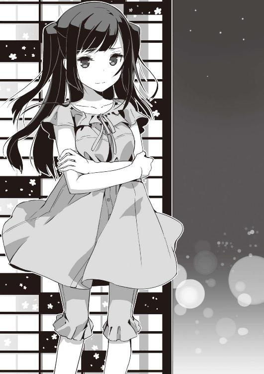
苛立ちが仄かに滲む、その言葉。
怒鳴ったりわめいたりしない分、滲む無念が胸を刺す。
俺にはもう、二の句が継げない。
高峯はもう、俺を見ない。
そうして、どれぐらいたった頃だったか。
「......それにしても、暑いわね。ちょっとシャワー浴びてくるわ」
下ろした髪をかきあげて、高峯はバスルームへと消えていった。漏れ落ちてくる水音が、いつもよりずっと高い気がするけれど、それには気がつかずにいるべきかも。
というか、シャワーの音にやたらと聞き耳立ててるなんて、変態の謗りを免れんわ。
出されたままの茶器をキッチンへ運ぼうと手をかけ、部屋の端っこの桜庭に気がつく。さっきまでタオルケットのモスラみたいになってた姿は既になく、手足を投げ出すように座っていた。
「な、なんだよ。いつの間に起きてたんだよ」
桜庭は俺をちょっとだけ見上げ、それからゆっくりと首を振った。
「先輩の頑張りは、歌だの踊りだので発揮されるべきじゃありません。本来だったら、人類のために......人々みんなの未来のために使われるべきものなんです」
寝乱れたままの髪が、肩へと流れ落ちていく。
「でも、なんででしょうね......わたしまで、なんだかすごくすっごく悔しいのは」
４
八月一日、午前一一時。
今日は朝から晴天、車窓の向こうで輝く海が目に眩しい。事務所のバンに揺らり揺られて、二時間近く。降り立ったビーチサイドの風は真夏の熱をはらんでいた。一歩進むごとに、誰も彼も暑さギンギン汗だくだくだ。
神奈川某海岸沿いに立つ白亜のホテル、グレートビーチ。
「都会から一番近いリゾート地」がキャッチフレーズで、大小さまざまなプールやゴルフ場、果ては温泉なんかも備えているという。
『復活！ アイドル水泳大会』はこのホテルのプールサイドで午後七時から放映される。最初はビーチの夕闇を背景に、最後はライトでガンガンに照らし出しての生放送三時間。撮る方も大変だが、撮られる方もしんどさ満点この上なしだろう。
控え室として使えと通された、デラックスツイン（和洋室）からは、広がる太平洋がどどんと見渡せ、バカンス気分も沸き立ちそうなもの。
けれど、プールサイドには既に何台かの中継車が停まり、夥しいケーブルがあちこちに這っていた。既にタレントが座るらしいセットや、司会のためのステージが組まれ、真昼の陽射しに輝いている。
主に使われるのはホテルのすぐ横にある競技用プールで、種目によってはここから少し離れたダイビング台のあるプールとかウォータースライダーのプールなんかも使用されるらしい。リゾートという浮かれた空気ではなく、本番前の張り詰めた空気に満ちているのが、遠くからでも判る。
「リハは昼の一時から、その前にあっちに挨拶してこっちに顔出して......」
「あー、あたし生放送苦手、超苦手ーっ」
「水でファンデがはげそうでイヤねえ」
「あたい、水着で踊るの、上手くできもはん」
「直射日光、無理......マリクリ様、お助けを......っ」
マネージャーさんにクアトロＡのメンバーも、もれなくテンパっている。
中でも、最高潮にテンパっているは、未来からきた国家公務員だった。
「ああああああらかじめ、スススススーパーユニットのメンバーは、わわわわわかってわかわかってますし、へへへへ部屋割も完璧です完璧ですかかかかカンペキ」
って、おまえは壊れたロボットかっつーの。
「おい、しっかりしろ。生放送に出るのは高峯で、おまえは水着すりかえりゃ任務完了なんだから」
「でも、祐吾さん」
物陰でひそっと注意したら、桜庭さんたら、既に半泣き。
「あれ以降、先輩のトランクも起動しませんし、本部から救援部隊が派遣されてきた気配もありません。今回のミッションを成功させられなかった場合、今度こそ、今度こそぉーっ！」
「知ってる知ってる。そのために下準備してきたんだろうが」
桜庭は手持ちの活動費のけっこうな部分を盗聴やら傍受やらのシステムにつぎ込み、文字通り寝る間も惜しんで、スーパーユニット31の中からターゲットを割り出した。 森崎ゆりあ、一九歳。身長一五八センチ、Ｄカップ。
スパユニ結成時からのメンバーの一人。歩くアイドル生き字引の中畑が言うには、いくらか地味な顔立ちとあまり前へ前へと出てこない性格のせいか、キャリアの割にいま一つ人気がないんだとか。同期の子はピンでドラマに出たりＣＭに出たりしてるのに、この子は未だにスパユニでの団体活動以外では仕事をしてないらしい。
いやいやいや、生で見るとちっとも地味じゃないですよ、森崎さん。「日替わりの恋人」だの「クラスによくいる程度のかわいこちゃん」だの言われてるスパユニだけど、間近で見るとそんなの大噓だってよく判る。みんなすっげえ顔小さくて手足細くて可愛いの。クラスどころか学校で一番級ばっかりなの。
まあ、これは嬉しい裏切りですが、
「おい、パシリ！ ちょっとパシってこいや」
ちっとも嬉しくない裏切りを日々見せる人が、すうっとこっちへ寄ってきて言いつけた。
「ドリンク剤なら、もう買ってありますよ？」
「違う違う。山田がロキソニン欲しいんだと」
ぶんぶん手を振りながら、上之院鈴木が黒い固まりを指さす。
「頭......痛い......とっても......」
日頃にも増してよれよれの姿がものすごい説得力を醸し出してる。生放送のプレッシャーってホントすごいのなー。
「ホテルん売店にはなかったんで、駅前いかんといけん」
「タクシー使っていいから、リハまでに戻ってこいよな」
「はい」
「あ、それと」
五〇〇〇円札を手渡す途中、上之院はふと何かを思い出したって顔になった。
「ついでに、ニプレス買ってきてくれ」
「にぷれす？」
聞き慣れぬ単語に首を傾げたら、
「ヤローは使わねえし買わねえものだよ。そっちのもつれてけ」
と、桜庭と二人まとめて放り出されてしまった。
「桜庭、ニプレスって何？」
二三世紀には存在しない、故にそれがなんだか判らんとか言われたらまずいなと確認してみただけだったんだが、
「えーと、その、胸のてっぺんに貼るシールというかそんな感じのものです。その、下着とか水着のラインがぽこっとなると恥ずかしいので」
真っ赤な顔で言われて、こっちが困った。
「そーいや、未来の世界のブラってまだ今と同じなのか？ 男の目から見てもアレ、すごいしんどそうなんだけど」
「未来のことは申し上げられないって言ってるじゃないですか。ていうか、男の人と下着の話なんてしたくないですっ」
どうでもいいことでモメつつ、ホテルを出て、タクシーを捕まえようとしたときだった。
「ザキオカさーん！」
エントランス近くにたまっている人の群れの中から、見知った顔がいくつかひょこひょこと抜け出してきた。
「おおお、大恩人！ 勇者ユウゴ！」
「ありがとうね、本当にありがとうねっ」
中畑に滝先輩、その他アイドル研の皆々様に取り巻かれて、いまにも胴上げされそうな勢い。
「生放送の観覧券なんて、スーパープラチナチケットじゃん。普通じゃ絶対手に入らないじゃん」
「一介の弁当屋から事務所スタッフまで成り上がるって、ザキオカ・マジック、ハンパなさ過ぎ」
「ありがとう、本当にありがとうったらありがとうっっ」
「いえその、いろいろお世話になりましたから、これぐらいは......ハハハハ」
思わず、笑いも乾く。
クアトロＡのグッズで身を固めた皆の姿から、思わず目を逸らす。いやその、俺ときたら君たちが溺愛する揚羽様と期間限定同居とかしてるんで。羨ましがられるような暮らしじゃないけど、なんか後ろめたくはあるんで......。
「俺たちは頑張ってクアＡを応援する！ 君は頑張って彼女たちのフォローをしてくれたまえ！」
「はい、頑張ります」
一同の声援を背に、俺たちはタクシーへと乗り込んだ。
しかも、一番最寄りの駅近くのドラッグストアには乳シールはもちろん、ロキソニンまで売られていなかった。
「あれは薬剤師が処方をご説明してからでないと販売ができない取り決めとなっておりますので。うちの店では扱いができないのです」
丁寧に説明され、仕方がなく店を出る。
「半分が優しさで出来てるやつとかじゃダメかな」
「その程度の鎮痛剤なら、たぶんホテルに用意がありますよ。そこを押して買ってこいっておっしゃってるんですから、やっぱりご要望の品でないとダメなんでしょう。あと、ニプレスはたぶん薬局にはありませんし......」
「そうなのか」
いきなり頭痛を訴える新城山田は仕方がないとしても、乳シールなんてあらかじめ自分で買っときゃいいものを。姫君の人使いの荒さは、女王様以上で閉口するわ。
「まったく、もう」
桜庭の主張の方が分があると諦めて、俺は再びタクシーを捕まえようとした。
じりじりと暑い真昼の駅のロータリーに人影は少ない。俺たちを乗せてきてくれたタクシーも、新たな客を乗せてしまったらしく見当たらない。
こりゃ、どっかのタクシー会社に電話かけて呼びつけた方が早いかも、と、俺はスマホを取り出し調べ始めた。
「えーと、すみません。タクシー一台お願いしま......」
俺の声は喉の途中で凍り付く。
ロータリーの向こう、ドラッグストアの前にいた桜庭の背後に見知らぬ男が忍び寄っていたのだ。
俺が声を張り上げるよりも早く、そいつは懐から何かを取り出して桜庭に押しつけた。
「ぷぎゃっ」
猫が踏み潰されたときみたいな悲鳴、桜庭の体が地へと倒れこんでいく。
「てめえ、何しやがんだっ！」
走り出そうとした俺の肩を、誰かが摑む。振り向く間はまるでなかった。
バチッという音、瞬く光。
その直後、俺の意識も途切れていた。
５
夢を見ていた。
誰もいないコンサート会場に、俺は一人座っている。手には入学祝いに買ってもらった、一眼レフ。ずっしりと重いそれが嬉しくて嬉しくて、俺は息をつめてファインダーを覗く。
いつの間にか、舞台の幕は上がっていた。
溢れるライトの中に、四人の女が立っている。花嫁のような白い衣装の燿奈姫。クールな印象にぴったりの青い服はアリス淡島。咲き誇る向日葵のような黄色はあやかっち。そして、深い緋色のドレスを纏った揚羽様。
パリコレに放り込んでも耐えると言われるほどの、美貌の少女たち。艶やかな微笑みと共に振る指先までもが、優雅で美しい。
「クアトロＡの新曲、聴いて下さい！」
揚羽様の声と共に、ドラムが鳴り出す。
ギターが追いつき、ベースが唸り、ピアノがアクセントを添える。そのすべての音を圧し、味方につけて、伸びやかな四つの声が響く。
―――ねえ、忘れないで欲しいの
終わらないものなんて 何もないけど
それは軽やかなハーモニー、染み通るようなバラード。いつもの弾けるような旋律ではないけれど、心の奥へとそっと語りかけてくるような響き。
俺はそれを聴きながら、夢中でシャッターを切り続けていた。
―――確かに、いたよね？
ここにいたよね？
恋をしている、わたしとあなたが
写真に音は残らない。
どんなに頑張っても、彼女たちの歌声はその唇からこぼれた端から霧散してしまう。
でも、何かが残せる。
一秒後とは確かに違う世界、果てなく続く時間の連鎖を、ほんの少しでも切り取れる。
やがて、曲は終わり、あたりは歓声に包まれた。
俺ひとりしかいなかったはずの客席に中畑がいた。アイドル研の連中がいた。その向こうには、見知らぬ誰かが。何千何万という誰かが笑ってる。呼んでいる。俺たちのクアトロＡを。
「すごいですね、祐吾さん！」
俺の横には、いつの間にか桜庭がいた。
笑って手を叩いて、まっすぐに俺を見る。
「わたしの、わたしたちの先輩はすごいんですよね！」
その通りだよ......そう、答えようとした、その時だった。
ぶつん。
何かがちぎれたような音がして、あたりは一度闇に吞まれ―――また、光が戻ってきた。
今度の光は、なんだか淡くあやふや。
俺の手にカメラはなく、金属のひんやりとした感触だけが手首に食い込んでいる。頰が不自然に冷たく、頭がひどくガンガンする。
「頭いってぇ......ロキソニン......そうだ、ロキソニン買ってこないと......」
ぶつぶつ言いながら瞬きを繰り返し、俺は自分の置かれている状況をようやく把握した。
場所は知らん。まったく見たことない部屋だ。
古ぼけた調度品に毛羽立ったカーペット、ベッドは一つきり。その上に、手錠をはめられた桜庭が転がされていた。
俺は何度か目を瞬かせ、何度も視線を巡らせる。
「なんだここ、どうなってんだ......？」
確か、駅前に薬買いにいって、そんでええと......考えていくうちに、ふと気がつく。室内は淡い光に満ちていた。夕方ならではの、どこか翳ったオレンジ色。
「や、やべえ！ 桜庭！」
とっさに駆け寄ろうとして、そのままひっくり返る。畜生、足まで縛られてやがる！
「おい、桜庭！ 目ぇ覚ませ！ 時間ないぞ！」
俺は身をよじり、ベッドにがんがん当て身を食らわせながら、ぎゃんぎゃんがなり続けた。
「ん......」
あいつの身じろぎする気配、それから悲鳴が続いた。
「な、なんですかこれ？ 敵襲ですかっ？」
「判んねえ。俺も何がなんだか......」
「あっ、時間は？ いま何時ですかっ？」
「それも判んねえ」
『六時じゃっよ』
ふいに響いた、アルトの鹿児島弁。
呆気にとられ、俺と桜庭は視線をさまよわせる。けど、室内には俺とあいつの二人の姿しかない。
『おーい、こっちこっち』
『テーブルの上......見て......』
途切れ途切れの声に引かれて、視線を返す。
いかにもチャチなビジネスホテル仕様のデスクの上、ノートパソコンが開かれていた。
推定一三インチの画面の中には、ぎゅむぎゅむになってこっちを見ている三つの顔。背後に見えている壁紙の模様に見覚えがある。グレートビーチの一室だ。こいつら、ライブカメラかなんか使って通信してやがるな。
『よーやく目ぇ覚ましたか。くたばったかと思ったじゃねえかよ』
「......んだとぉ？」
非難がましい声を浴びせられて、俺の頭と喉もようやく機能を回復した。
「あんたの言いつけで買い物出かけた先でスタンガンかまされて、見知らぬ場所で縛り上げられているんですけど！ どういうことなのかご説明下さいませんかねっ？」
『それはこっちの台詞だ、この野郎』
上之院田中は俺の怒声をストレートに打ち返してきた。さっきの夢の中では、世にも可愛らしい笑みを浮かべていた顔が、いまは怒気に彩られている。
『おまえら、この間から何かコソコソしてやがったろう？ 今日もなんかするつもりだったんじゃねえのか？』
「「う」」
めっちゃ、図星。
俺と桜庭はダブルで固まった。
「あ、でも、別にみなさんに何かをするつもりはなかったんですよ、ホントですよ」
慌てて桜庭が言い繕った。
でも、もう遅かったらしい。画面の中の三人の目は、悪者を糾弾するスーパーヒロインのそれそのもの。
『揚羽さんの親戚ってことじゃっから、最初は信じとりました。じゃどん、おはんらの様子、すごくおかしか。単なる付き人って感じがまるっきりしもはん』
『そもそも......うちの社長、揚羽のこと何度も調べた......でも、何も判らなかった......なのに、どうして今頃......』
矢継ぎ早の弾劾に、返す言葉がない。
正解は高峯揚羽の前歴は現代には「存在しない」。彼女は桜庭と一緒で、一年半前のある日、時空を越えて突然この世に湧いて出てきたんだから。
しかしですね、このあたりのことを話して判ってもらえるでしょうか？ 否。断じて否！
「く、詳しいことはそのうち話すから、とにかくここから出してくれよ。このまま放っとかれたら本気で俺たち困るんだよっ」
『やーなこった』
上之院はおもいっきり鼻で笑いやがった。
『どうせ予言だって、おまえらがなんか細工してやめさせたんだろ？』
「ぐぬぬ」
中途半端に正解ついてきやがるのが、手に負えない。ほーれ、みろ、桜庭。悪事千里を突っ走ってるぞ。やたらと無法なことすると、こうやって我が身に跳ね返ってくんだぞ。
『邪魔する奴は許さない』
怒りに震えるとはこのことかと思うほど、上之院の声は熱を帯び、上擦っていた。
『失敗ばっかりしてるけど、それでもようやくこれと思える形になってきたんだ！ 四人で力合わせて頑張れるって......それを邪魔する奴には容赦しねえぞ！』
「そんなんじゃありません」
桜庭が大慌てで抗弁する。
「ただ、わたしには大事な任務があって、それを無事遂行するためには高峯先輩のお力が不可欠でっっ」
『大事な任務？ どんなよ？』
未来からやってきた修復士は黙りこむ。本当のことは、やっぱり言えない。
『あたいらの仕事だって大事じゃっで......』
低く、淡島鈴木が呟いた。
『たかがアイドル稼業でも、あたいらはプライドかけて気張っちょる』
その横で、新城山田が何度も頷いていた。深々と力強いと言っていいほど。
『揚羽......いなくなったら......困る』
途切れ途切れの短い呟き。けれど、そこには切迫した心情が覗いていた。
『......もうすぐ本番が始まる』
ひと呼吸ついたのち、上之院がのたまった。
『あたしらだって鬼じゃない。終わったら、ちゃんと話し合ってやる。それまでおとなしくしてな』
ぶつり。
そこで、画面が途切れる。
後には、あまりのことに身動き一つままならぬ桜庭と俺だけが取り残された。
おーい、これ......そうとうヤバくねえ？
「桜庭、おい、桜庭ってば」
「うううう、もうダメですおしまいですぅぅぅ」
丸めた体を震わせて、電波様はすっかり泣き濡れている。
「なんかすっげえムード出してるけど、おまえ、手錠ぐらい外せるだろ」
「外せますけどぉ......」
すんすんと鼻を啜りながら、あいつは答える。
「けど、もう森崎さんの水着をすり替えてる暇はないですよ。あと三〇分で本番始まっちゃいますし、彼女たちの出番はうんと早いんですから」
「すり替える暇がないなら、他の手を使えばいいだろうがよ」
「他の手って......中継車壊して電源落としますか？ それだけは絶対ダメって高峯先輩言ってましたけど」
「うん、ダメ」
「なら、無理じゃないですかぁぁっ！」
しゃくりあげ、悲鳴をあげた。
「今度こそ終わりです！ ポロリで絵描きでブームで学者で終末ラッパの音が鳴り響いて......っ！」
「落ち着けって。もう一つ手は......ないわけじゃない。俺、前に言ったろ？」
「で、でも、あれは......」
宥める俺に、桜庭の目が極限まで見開かれる。何事かを問いかけてこようとするその瞳から目を逸らし、俺は窓の外を指した。
「遠くに海と塔が見えるだろ？ あれ、グレートビーチからちょっと離れた岬の上に立ってるんだ。それが右手......西の方に見えるってことは、ここはＪＲ沿いの駅のどっかだ。電車に乗れば三〇分足らずで着けるし、タクシー拾えればもっと早い」
「本当ですか？」
「まかせろ。昔、あの塔へ写真撮りにきたことあるんだ。間違いない」
桜庭の顔が引き歪む。
泣き出しそうな、縋るような目で俺をしばらくみつめ、それからゆっくりと身を起こした。
「ふんぬー！」
ぶちっと音をたて、手錠が外れた。すかさず足の紐を解き、俺の手錠と足枷も外したあと、桜庭はドアノブを摑んだ。外から細工がしてあるのか、ノブ横のピンを回してもドアはぴくりとも動かなかった。
これにも桜庭は怯まない。
「どりゃー！」
気合い一発、ドアががこんと外れる。それを肩で押すようにして、桜庭は一気に突き進んだ。廊下にいたらしい男がそれにぶっ飛ばされ、転がった。
「てめえ！」
もう一人がスタンガンを振り回しながら走り寄ってくる。桜庭はドアを放り出し、大きく足を振った。華奢なサンダルが唸り、男の腹へとめりこんでいく。ギャっとわめいて男はその場にくずれ落ちていった。
「こっ、殺してませんよね、桜庭さんっ？」
「殺す気だったら、首か顎を狙ってますよ。というか、無闇に殺しちゃったら、仕事が増えてしまうでしょう？」
仕事増えなかったら殺すのかよっ！
埋めがたい人権意識の差に束の間苛まれたけど、議論の時間はない。猛ダッシュで遠くなっていく桜庭を追いかけて、俺もまた走り出した。
６
ホテルを出てすぐ、俺はまたタクシーを拾おうとした。だが、往路にあった運が復路にはなかった。行き先を告げた俺に運転手の反応はまことに芳しくなかった。
「グレートビーチ？ 急ぎじゃないならいいけど」
「急ぎです。とっても」
「あー、じゃあやめといた方が」
必死の形相の俺に、ドライバーさんは力なく首を振る。
「あそこ、海岸線のバイパス抜けていかなきゃなんねえんだけど、そこでさっき事故があってね。一〇キロ越す大渋滞になってるんだわ」
「そんな」
「電車でいった方が早いよ、たぶん」
プロのご忠告に従って、俺は駅まで必死に走った。
この町には三、四年前に来たっきりだけど、おかげさまで記憶は鮮明。迷うことなく駅へ辿り着くことができた。
が、間の悪いことに、一五分に一本の電車は発車したばかり。次にくるのは超特急でグレートビーチのある駅には止まらない。これだと、結局、何分後に向こうに着けることになるわけだ？
「えーと、次の次の電車乗ってだから......四五分後かそこら？」
「しかも、向こうの駅からまたタクシーかシャトルバスに乗らないといけませんよ？ また、地味にタイムロスすることになります」
駅の白壁で音なく進む短針を、息を切らせた桜庭が恨みがましく見上げる。
現在、時刻は六時一五分。
タイムリミットまであと一時間もない。
「高峯に頼むしかないか......」
「で、でも、先輩はリハーサルとかで忙しいんでは」
「かもしれねえけど！」
改札近くに置かれた電話に飛びつき、すっかり覚えてしまったナンバーを押す。高峯の携帯のものだ。
数回のコール。
でも、彼女は出ない。「お客様のご都合で通話ができなくなっております」というメッセージが虚しく流れた。
「未登録番号は着信拒否ってんのか！」
うなだれた俺の視線の先、何かが追い越していった。
それは競技自転車用のヘルメット。鮮やかなスカイブルーが目に染みる。
「そうか、自転車だ......その手があった！ ちょっと、待てよ、えーとえーと」
俺は必死で、行きに通ってきた道の様子を思い返す。
確か、自動車用道路の横、一段低いところにサイクリングロードがあった。そのサイクリングロードの先、湾曲した道の向こうに白亜の小さな箱が連なっていたはず。それが、グレートビーチだ。
「よっしゃ、桜庭！ おまえの脚だったら間に合うはずだっ」
俺はロータリーの向こう側へと目を走らせた。確かさっき、自転車屋らしき看板をちらりと見かけた気が......って、あった！
「あの、すみません、一番やっすいチャリ下さい！」
どたどたと飛び込んできた俺たちに、チャリ屋のおっちゃんの反応は冷たい。
「九八〇〇円です」
「う」
「あと、防犯登録に別料金いただきます」
財布の中を見て、俺は言葉を失った。上之院に渡された金の他に自分の金も入れてきたんだけど、二台分には足らないじゃねえかよ！
「桜庭、いくら持ってる？」
「さ、財布がありません。拉致されたときに落としたみたいで」
不幸の玉突き事故ですか、この状況っ！
「いいです、祐吾さん。一台だけお買い上げ下さい」
「でも」
「たとえ二人乗りでも、祐吾さんがご自分で漕がれるより私が漕いだ方が早いです」
な、なんか、男子として割と聞き捨てならんことを言われた気がするが、かつて、弁当屋から電気屋への猛ダッシュを思い出せば、それもやむなし。確かに、俺より桜庭の方が脚力上ですよ。
「一台下さい、荷台ついてるやつ！」
「二人乗りとかされると困るんだけど」
「人類の一大事なんです、こらえて下さいっ」
金を無理矢理置き、 半ば脅し取るようにして、俺たちは店を飛び出した。防犯登録？ そんなのあとあと！
「桜庭、頑張れ！」
「はいぃぃぃっ」
最低時速二〇キロ以上、もちろん、早ければ早い方がよりベストだ。
しかし、海辺の道にはとんだ強敵がひそんでいた。
半端ない、向かい風だ。
波が砂浜を蹴散らしうねるたびに、ごうっと強い風が俺たちに叩きつけてくる。
シービューを意識した作りの道には、ろくな日陰がない。未だ勢い衰えぬ陽射しが、じりじりと俺たちの背を灼いた。町中では軽々としていたペダルが、進むごとに重くなっていく。
「うーんうーん」
歯を食いしばり、桜庭はつき進む。俺はその背になるべくぴったりくっついて、抵抗を極力抑えた。伝わる体温や鼻先で乱れる髪なんかが気にならないといったら噓になる。なるけど、いまそれどこじゃないから！ 耐えろ、祐吾！ 頑張れ自分！ やる気本気オカザキですよ！
そうして、三〇分ほど走り続けた頃、マッチ箱のようにしか見えなかったグレートビーチが見慣れた白亜の建物となって俺たちの目の前へと迫ってきた。
ゴルフコースの向こうに、会場となってるプールが見えている。あたりはもう夕方の気配、ほんのり点けられたライトが水面に散って目に眩しい。
「ゆ、ゆうごさん......わたし、もう......っ」
暑さと疲労で喘ぎ、ハンドルに縋るようにして、桜庭が崩れ落ちる。
「頑張れ、桜庭！ もうちょっとだ！」
細い体を引きずり上げ、急いで背負う。鋼鉄すらパンチ一発で曲げる女にしては、ひどく軽い。ほんわりとした体温と、ひたすらに柔らかい体を背で感じた。が、そのへんの感想をあれこれと述べてる間は既にない。
「いくぞーっ！」
叫びながら、俺はエントランスへと飛び込んだ。宿泊客とテレビ局の人間とでごった返す建物の中をひた走り、エレベーターが上がっていくのももどかしく、クアトロＡの控え室へと突き進み、ドアノブを握った。どんな妨害にあったとて、委細かまわぬ！ 退かぬ！ そんな心つもりだったんだが。
しまった、オートロックだ！ 開かねえよ！
俺は背中の桜庭を見るが、まだ苦しそうに喘いだままだ。とても、さっきの調子で蹴破れとは言えない。
一度、フロントへいって適当な理由をつけて鍵を借りてこようかと、迷ったときだった。
「だから、誰かを探しにいかせろって言ってるでしょう！」
高峯の声が響き渡ってきた。これまで一度も聞いたことがないぐらい、切迫しきった。
「林さんに頼んで事務所のスタッフなりなんなりにお願いするわっ」
「だから、てめえはなんであの二人にそんなこだわるんだよ！」
上之院田中の絶叫は、小さなノーパソの画面で聞いたときと、どこか少しニュアンスが違う。どこか縋るような響きを帯びていた。
「どこかでサボってるちょっかもしれなか！」
「マリクリさまも......そうおっしゃる......」
「そんなわけないの！ あの二人には帰ってこなきゃいけない理由がちゃんとあるんだからっ」
「だから、聞かせろっつってんだろ！ その理由とやらをよ！」
「そ、それは」
「言えんとね？ あたいにはどかんしても言えんとね？」
「揚羽さん......ひどい......」
「そりゃ、あたしらは仕事上のつきあいだよ。なんでもかんでも仲良しこよしで話し合うなんてのができないのは判ってる。けどよ！」
分厚いはずのドアを突き破り、上之院の絶叫が廊下に漏れてきた。
「あんたの前のこと知ってる奴がなんか企んでるのに！ ほっとけねえだろ！」
そのあまりに切実な響きに、俺は息を吞む。
クアトロＡは、一年半前......つまり、高峯揚羽が入る前までは、トライＡといった。最初は三人組でデビューしたんだけど、人気絶頂のスーパーユニット31に互するにはちょっとパワー不足。そこそこ程度しか売れなくて、「ああ、これじゃいつか消えるかも」って俺ですら思ってた。
でも、「クアトロＡ」になってからは違う。
一人増えただけで、他の三人の輝きが増した。突然、何かが爆発したかのように光を放ち、スターダムを一気に駆け上がった。
思い出すのは、数日前。
高峯の部屋に揃ってやってきた三人のこと。
彼女の記憶が戻ることを、あいつらはしきりに気にしていた。
でも、あの三人の立場からすれば当然なのかもしれない......高峯揚羽が消えてしまったら、どうしよう、と。記憶を取り戻し、「もうアイドル稼業はできない」と言い出したら、どうしたらいいの？ と。
そこまで思い至って、俺の中からすうっと怒りが消えた。ヒートアップした頭がたちまち冷えていく。
たまたま手に入れた栄光だって、あんなに惜しかった。高い高い木の上からの眺めをなくさずに済む方法はないものかと、俺だってもがいた。
まして、この四人はずっと一緒に頑張ってきたのだ。
寝られないのは当たり前、お洒落も遊びも後回し。ほんの少しでも時間が空いたら、歌とダンスのレッスンに励む。そうやって自分の手で足で歌で、高い高いところへと歩いてきたんだ。
「ゆ、祐吾さん、私がやりますぅ......」
凍り付いたように動かない俺を押し退け、桜庭がドアノブを握った。いかにも、最後の力を振り絞ったというように。
めきょごきょめきょきょ！
ビジホのドアよりは幾分頑丈そうなそれが、ひしゃげて開いていく。
その向こう、クアトロＡがいた。四人が四人とも、既に水着に着替え、パーカーを羽織っている。
燿奈姫が白、アリスが青、あやかっちが黄色、高峯が赤。真夏のムード満点の艶やかさだ。
でも、その表情は全員が全員......泣きそうだった。
「もう、喧嘩しないでくれよ」
なるべく優しく柔らかく、俺は言ってみた。
「俺と桜庭がやらなきゃいけないってのは、スーパーユニット31の水着のすり替えなんだ」
「祐吾さんっ」
俺に寄りかかったままの桜庭が、ひきつった声をあげる。それをいなすようにして手を振り、先を続けた。
「水泳大会の制作会社がさ、あっちのグループに仕込みをかけたのを偶然知っちゃったんだ。番組中に水着が落ちるようにって」
三人の顔色が変わる。
「でも、そんなことさせたら、俺たちのクアトロＡの注目度ガタ落ちだし、そもそもやらせなんて許せない」
噓は言ってない。喋ってないことはあるけど。
「俺はずっとずっと前から、クアトロＡのファンだから！ あんたらに悪いことなんかしない。ずっとずっと四人でいて欲しいって思ってる。それだけは......本当だから！」
俺は必死に目に力をこめた。目映いスターのオーラに負けないように。
俺の服を摑んでいた桜庭の指に、きゅ、と力が籠もる。それ以上は喋るなということか、それとも、頑張ってくれと励ましているのか、判らなかったけれども。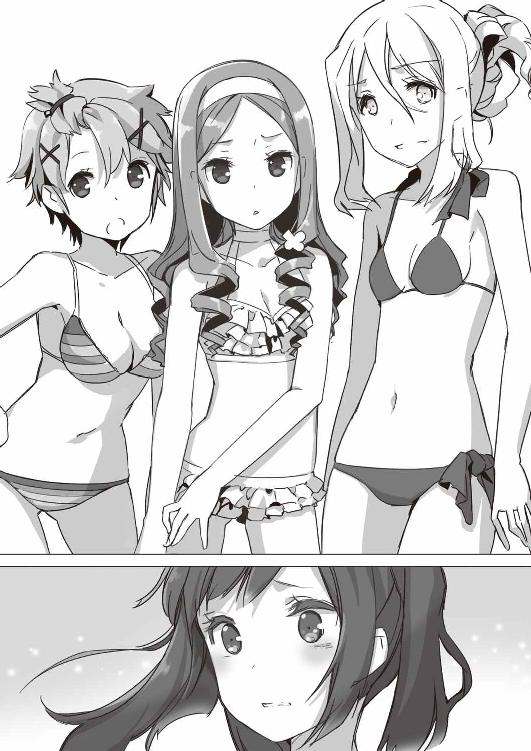
「......バッカじゃねえの？」
上之院の肩から力が抜けた。大きな溜め息がルージュで彩られた唇から漏れ落ちる。
「やらせなんてのはな、この業界じゃごまんとあるんだよ。いちいち目くじら立ててられねえっつの」
「そもそも、あたいらは仕込みになんぞ負けんこつ、よけいな真似せんでもよか」
淡島のすべらかな頰に苦笑が浮かび、新城が何度も頷いた。
高峯は何も言わなかった。
俺たちが部屋へ転がりこんできたときと、同じ顔のまま。驚き、声も出ないという表情に、泣き出しそうな目を乗せたままだった。
その、あまりの心許なさに胸を摑まれる。
華やかな衣装を纏い、誰よりも堂々と歌う姿とはかけ離れた、高峯揚羽の姿。
「......初耳だわ」
ぽつねん、と、高峯は呟く。
「あなたがわたしたちのファンだったなんて......聞いたことなかったわ」
そうして、笑う。いまにも涙が浮かんできそうな目で。
グラビアにも載ってない、テレビにも映ったことのない、柔らかな素顔で。
俺はそれを撮ってみたいと思った――――心から。
しばらく立ち尽くし、互いをただ見つめ合うだけの俺たちへ、
「ゆーごさぁん、水着ぃぃ～」
新城山田が取り憑いたかと思うような声で、桜庭が囁く。
一気に現実に引き戻され、俺は桜庭の荷物に飛びついた。事務所のロゴが入ったトートバッグの底から、用意してきた水着を引っ張り出す。
可愛らしい水色の水玉模様が、いかにも森崎ゆりあには似合いそうだが、ＮＡＳＡだかＮＡＳＤＡだかで使われている宇宙空間でもラクラク安全丈夫繊維でがっちり縫い止められていて、一度着たら鋭利な刃物でざっくりやらんと絶対落ちないとのふれこみだ。
よっしゃ行くぞ、と、俺が立ち上がった瞬間、マネージャーの林さんが壊れたドアに目もくれず飛び込んできた。
「何してるのっ、もうすぐ本番始まるわよ！」
問答無用というように、林さんは入り口近くにいた高峯をひっ摑み、他のメンバーを促して走り去っていってしまった。
窓の外、遙か下からはわあっという歓声が響き渡ってきた。見ると、水玉の水着を身につけた団体さんたちがわらわらとプールサイドに出てくるところ。
「ま、間に合わなかっ、た......っ」
「そんなっ」
水着を握りしめたまま見下ろす俺たちの前で、水泳大会は始められようとしていた。
ライトが点り、音楽が鳴り響く。
潮騒のような拍手に、祭りに酔った大歓声が重なっていく。
『復活！ アイドル！ 水泳たいかーい！』
やがて、オープニングを告げる司会者の声がほんのり暗くなり始めた八月の空に届こうとしていた。
桜庭は動かない。俺は動けない。
祭りが刻一刻と進んでいくのを、ただ見守るだけで精一杯。
『それでは、次のゲームです！』
司会の声が響き渡る。
プールの向こう側、ずらりと座ったアイドルたちが一斉に拍手をした。誰もが笑顔、笑顔、笑顔。その中には、クアトロＡのメンバーもいる。四人とも、いつも通りの綺麗な微笑みと佇まいだ。でも、それが、ほんの少しだけ陰って見えるのは俺の思い過ごしだろうか？
『今度のゲームは「どきどき水中騎馬戦」でーす。馬役が三人、騎手役が一人で競ってもらいまーす』
『出場者のみなさんはプールへどうぞー』
司会者の声に従って、肌も露わなアイドルたちが次から次へとプールへ入っていく。
「こうなっては仕方がありません、祐吾さん」
大きく肩を震わせて桜庭が立ち上がった。
「中継車を破壊し、放送を止めます」
「それだけはダメだっつってんだろ！」
俺は俺で負けてられない。
「番組を作るために、高峯たちはすっごい頑張ってんだぞ？」
「判ってます」
「俺たちはもう大前さんの人生狂わせてんだ。なのに、これ以上誰かを犠牲にするわけには」
「それも判ってます！」
振り切るように叫び、桜庭は走り出す。
「でも、わたしはやります。やるしかないんですっ。わたしだって......自分の任務が大事ですっ。もうこれしかできることないんですからぁぁぁっ」
「桜庭ーっ！」
俺も必死になってあいつを追った。
炎天下に全力でチャリを飛ばしてきたってのに、桜庭の足は衰えない。意志の力だけで駆けているんだろうと判る。判るけど！
プールサイドに続くデッキで、俺は桜庭を止めることができた。スーパーボウルも真っ青の、低いタックルを腹に食らわし、揉み合うようにして床に転がる。さすがの怪力未来人も限界が近いんだろう。いつぞやよりは簡単に押さえ込むことができた。
割れるような歓声が、ごく間近から聞こえてくる。
「燿奈姫ー！ 頑張って！」
「あやかっちー！」
「まきちゃぁぁぁん！」
「スパユニ最強まじ最強！」
観客がいっせいに踊り始めた。自分たちの応援するアイドルに向かって、懸命に声援を送り続けている。ものすごい数だ。彼らの熱狂が暮れ始める夏の空を焦がし、涼しいはずのプールサイドに暑い風を呼んでいる。
アイドルたちはそれに応えて、手を振り、笑顔を振りまいた。高峯も赤い水着に身を包み、いつも通りの自信満々な笑顔を浮かべ、手を振っている。
その近くに、森崎ゆりあもいた。
大きなリボンをあしらった、水色のビキニ。肩紐は見るからに細くか弱く、いまにもすぐ取れそうだ。こちらに向ける顔はちゃんと笑みを貼りつけているけれども、顔色は悪い。水着の色ほどにも淡く白い。
高峯の漆黒の瞳が、わずかに......本当にほんの少しだけ森崎に注がれ、それから俺へと向かった気がした。ひどく複雑な色を湛えて。
それを見た瞬間......俺の腹は決まっていた。
「桜庭」
暴れる相手の耳元へ俺は叩きつけた。
「俺は、最終手段を取る！」
「ゆ、祐吾さんっ」
弾かれたように、桜庭が頭をもたげた。
「そ、それはダメです。それだけはダメです」
俺は桜庭を離し、プールの方を窺った。
距離はたいしてないけれど、テレビ局のスタッフが山脈みたいに連なってやがる。あれを突破するのはそうとう骨だろうが......やるしかない！
意を決し、俺は着ていたものを全部脱いだ。悲鳴をあげて、桜庭が顔を伏せる。
森崎ゆりあが騎馬戦の騎手になり、水へ入ろうとしていた。
俺は一歩を踏み出す。
このまま突っ込んでいけば、たぶん、全国のテレビ画面にはこんなテロップが流れることになる。
――――不適切な映像が流れたことをお詫び申し上げます。少々お待ち下さい。
そして、俺は局部をもろ出しにして生放送を妨害した男として、変質者の烙印を押されるだろう。たぶん、一生。
おかん、ごめん。ものすごく、ごめん。
女手一つで育ててくれたのに、こんなことになっちまって。
覚悟のもう一歩を進め、俺がプールサイドに飛び出した、その瞬間。
司会者の後ろにいた上之院燿奈姫が、大きくよろけた。
細い体が司会者の体を巻き込んで、プールに落ちる。それを助けようとするかのようにアリスが手を伸ばし、体のバランスを崩して、水の中へと消えた。
「みんな、僕がいま助けるよ！」
高らかな宣言を残して、あやかっちがプールサイドから華麗に身を躍らせる。が、何故かその着水点は大きく外れ、騎馬隊の方へ――――
時間にして、わずか数秒の出来事ののち。
プールの水面にぷっかり浮いてきたのは、最初にプールに落ちた上乃院と......何故か森崎ゆりあ、その人だった。
「先輩、すごい！」
桜庭の声が沸き立つ。
「見て下さい、祐吾さん！ 先輩がやりました！ 見事、ポロリを止めましたよ！」
「え、は......はい」
確かに止めてる。
けど、あれ大丈夫なのか？ 森崎ゆりあさん、息してんの？ あまりのことに俺はその様子に見入ってたんだけど、実はそんな場合じゃなかった。
「きゃあああああああ！」
天をつんざくような、女の悲鳴。
また桜庭が騒いでんのかと思って振り向いたら。
「へへへへへへ変質者ぁっ」
ホテルの従業員らしい女性がガタガタ震えて俺を指さし、後じさっていくところ。
「え、いや、違いますっ！ これにはわけが」
「きゃー！ こないで、ヘンタイーっっっ」
絶叫を振りまきながら、その人は廊下の果てへと逃げ去っていく。
後には、プールの方を見ながらキャッキャと喜ぶばかりの桜庭と。
絶望を絵にしたような俺だけが残された。
むきだしの下半身に、夏の夜風がひどくひどく―――冷たい。
７
九月の最初の一週間、俺はまたも停学になった。
テレビの生放送中、局部を剝き出しにしてカメラの前に飛び出すという犯行には至らずに済んだが、
・まだ宵の口
・ホテルで
・真っ裸になって
・妙齢女子といた
という罪科で。
下手すれば即退学でもおかしくなかったんだが......浅見さんがなんとか頑張って停学レベルに留めてくれたらしい。
世界の滅亡と引き替えにこの展開なら、まだいいですけど、これ、単なる徒労だから。くたびれもうけの銭失い......どころか、人生行路失っちゃってるから！
引っ張っていかれた警察や家庭相談所で、俺は「寝不足が祟っての上で、けっして不純異性交遊に及んだのではない」と必死に言い張り、桜庭も「特に何もされませんでした」と証言してくれた。加えて、これまた浅見さんが手配してくれた弁護士さんが凄腕で、なんとか解放してもらうことに成功した。
ＫＩＤＯ事務所は俺とのつながりを一切合切否定。夏休みにクアトロＡと行動を共にしていたでっかい男は、幻ってことにされた......らしい。あっちはあっちで、所属タレントが俺と桜庭を拉致監禁してるという後ろ暗さもあってか、それ以上の追撃はいまのところない。
しかし、社会的に俺は死んだ。
少なくとも、校内では死んだも同然の扱いだった。
それなりにちやほやしてくれていた女子たちは、もはや俺のことを視界に留めるのもイヤだって風。隣の席の女子なんていつの間にか空いてた他の席に移動していた。こっちは窓側最後尾の好条件、あっちは廊下側の前から二番目という悪条件にも拘わらず。
ずっと遠巻きだった男子たちは男子で、嘲笑う・罵る・からかうの三点セットかガン無視かのどっちかだ。唯一、アイドル研の連中だけは「ザキオカ、ドンマイ☆」って顔してるが、積極的には係わってこない。中畑に至っては、俺を見るたび泣きそうになっている。
寮生活は校内に増して過酷だった。
もう絵に描いたような狂人扱い。俺が箸を取り落としただけで食堂が静まり返り、廊下をいけば海を割るモーセのごとく。以前のように話しかけてくるのは、灯子ちゃんぐらいなものだったが、以前にも増して、言葉の端々に棘が感じられるようになった......まあ、当然だけど。
針のむしろとはこのことかというような日々。
いままで味わってきたのは、不釣り合いな木の上にいる苦しさだったけど、今の苦しさは地を這うね。むしろ、潜るね。埋まるね。息苦しいったらないね。
しかし、何より、しんどかったのは。
警察から帰ってきて以降、桜庭の行方が知れない。高峯の家からも、忽然と姿を消してしまった。
もしかして、救援部隊がやってきて、一緒に未来へ帰ったのだろうか......だとしたら、世界は破滅から免れたってことになる。主にクアトロＡのおかげでだけどさ。
高峯とも、連絡が取れない。
教えてもらった携帯を解約したのかされたのか、二度と繫がることはなかった。一度、池尻大橋のマンションへこっそり行ってみたんだけれど、俺たちが暮らしたあの部屋は既に空き室になっていた。事務所の近所をうろついて見つかりでもしたら、今度こそエライ目にあわされそうだから、それは止めておいた。
すべてが夢だったみたいだ......電車の窓からスカイタワーを見るたび、テレビ画面からクアトロＡの歌声が聞こえてくるたび、俺は思う。
未来からやってきた美少女に振り回され、人気絶頂のアイドルと仲良くなって、なんてさ。夢じゃない方が、むしろ不思議なぐらいだよなあ。
そうして、思うことは。
「一枚ぐらい、撮ってみればよかった」
撮れなくても、せめて、チャレンジしてみればよかった。もう二度と会えないなら。夢だとしか、思えないのなら。
そんなこんなで、月日はゆるゆると過ぎ。
停学明けてしばらくした頃だった。
「転校生を紹介します」
朝のホームルームで担任が言ってのけたとき、教室内は静まり返った。
繰り返す。
本日は九月の中旬。そんな時に、転校生？ 空気読めないにもほどがあるんじゃないか？ もう一週間早くこいよ。そんな空気が、クラスに充満してる。
「まあ、この時期には珍しいよな。いろいろ大変だろうけど、みんな仲良くしてやって欲しい」
驚きいぶかしむ生徒たちに、担任は苦笑を投げかけ、それから戸口へ向かって手招きをする。
そして。
「桜庭せせりさんです」
聞き間違えようもないほどはっきりと言った。そう、言った。
えっという声は俺ではなく、中畑の口から漏れていた。俺は声もない。それどころか呼吸すらままならない。ただただ、教壇に立つ人物へと視線を注いでいるのが精一杯。
「札幌市から来ました、桜庭です。よろしくお願いします！」
聞き馴れたあの声が告げ、見慣れたあの笑顔が元気よく頭を下げた。確かに我がクマ高の女子の標準服で。
桜庭は担任が指示する前に教室の中を進み、俺の横の席へ......元の持ち主に嫌われたまま空席になっているところへストンと腰かけた。
「これからもお願いしますね、祐吾さん」
ハキハキとした声で言われ、俺は壊れ振り子のようにここくこく頷くしかなかった。
「なんで？ どうしておまえが、こんな......」
まともな質問をぶつけられたのは、もう放課後。一緒に帰ろうと手を取られたときだった。
「いままでどこで何してたんだよっ」
「先輩のお部屋で、編入の準備をしてました。学校の教科書とかも、ちゃんと読んだんですよ！」
満面の笑みで桜庭は答える。
「編入って、どうやって？」
「浅見さんが手配して下さったんです」
スカートの裾を嬉しそうにつまみ、桜庭はいよいよ楽しげに言った。
「いまこの学校には祐吾さんの味方になる人がいないから、わたしに頑張って欲しいって」
意外な言葉に、耳を疑う。
単におかんに頼まれただけだって言うのに、そこまで俺の身を案じてくれていたというのにも驚いたが、保険証一枚しか身分証明のできない家出人を学校に押し込めたというのにも驚いた。何者なんだ、あの自称男の娘。
「でも、いいのか？」
質問は自然と恐る恐るになってしまう。
「何がです？」
「前の任務......俺が、その......」
続きは自分の口からとても言えない。それどころか、桜庭の顔を見ることすら怖いぐらいで。
「祐吾さんは立派に任務を果たして下さったじゃないですか」
「俺じゃねえよ。高峯たちだよ」
そう。
結果的に、森崎ゆりあのポロリを阻止したのは、俺たちのクアトロＡだ。事故を装ってターゲットを水中に沈め、救護室に送り込むというスーパー荒技で。
「ごめんなさい、わたくし体が弱いものだから目まいがして......」
と、上ノ院はしおらしいことを吹いていたが、放送事故を起こしたことには変わりなく、「それでもプロか」と非難した奴はけっこういた。
その上、「ゆりあたんに何してくれてんだ」「姫だってわざとしたわけじゃない」とスーパーユニット31のファンとクアトロＡのファンが激突し、以降、八月一日は「大磯夏のの陣」と呼ばれるようになったという。
「俺は無駄に脱いで捕まっただけだっつの」
「そんなことはありません」
力をこめて、桜庭は断言する。
「クアトロＡのみなさんがわたしたちに協力して下さったのは、祐吾さんのおかげです。祐吾さんが彼女たちを説得して下さったから、ああしてくれたんですよ」
「説得つーか、噓八百並べ立てただけだけどな」
「あら、噓だったんですか？ クアトロＡのファンだっていうのも？」
「や、それは......噓じゃないけど」
うつむく俺の顔を、桜庭が覗き込む。三〇センチ近く低い位置にあるあいつの目が、柔らかく和んだ。
「仮にわたし一人でしたら、間違いなく中継車爆発炎上で番組完全終了コースでしたが、もしかしてそっちの方がよかったですか？」
言うことはいつも通り、ひどいけど。
「いえ、とんでもございません」
「最小の犠牲で最大の効果をもたらした祐吾さん、天才ですよ。すごいです！」
そう言って、がっしりと俺の手を握りしめる。
「本当はすぐさま職場に戻って、感謝状の一枚も発行するよう上司に頼み込みたいところです。ご自分を犠牲にしてまで、祐吾さんは人類の未来を守ろうとして下さったんですから！」
だから、胸を張って。
そして、笑って。
そう言って、桜庭は俺の手をいっそう強く握りしめた。
「わたしも祐吾さんに負けないよう、頑張りますよー！」
あまりのことに啞然としている俺の横で、桜庭は元気いっぱい夢いっぱいだ。
「頑張るって、がんがん修復して、帰蝶先輩もあと一人も探し出して、どんどん人類を救います！」
まるで、金魚すくいで出目金すくいますとか、鍋料理で灰汁すくいますとかそんなイージーさ。
「修復って......えええっ？ 今回ので地球滅亡免れたんじゃなかったのか？」
「ええ、今回の岐枝はきっちり潰せました。でも、これによりまた次の岐枝が必ず出てきます。きっと近い未来に」
「そんな。大前さんのミッションが失敗したから、すぐに水着ポロリに取りかからなきゃいけなかったんだろ？ 成功しても次があるのか？」
「ええ。まだまだどんどん。いっぱい」
あっさりと言われ、膝から力が抜けそうになる。あとどれだけ頑張ればいいのっ？
「つ、次の指令は？ 判ってるのか？」
「いえ。でも、今回の任務が成功したことはきっと把握できてるはずですし、救援隊だってそのうち来ます。そうに決まってます」
今まで聞いたこともないほど、まっすぐでポジティブな台詞を吐き、桜庭は大きく胸を反らした。
これだけでも口から心臓が飛び出るんじゃないかと思うほどびっくりしたんだが、その数分後、俺は更なる驚天動地の事態に見舞われた。
若竹寮と早苗寮の境目に、立っていた人影。真っ黒な髪、お世辞にもあか抜けているとは言えないノンフレームの眼鏡、服装もそのへんで売ってそうなシャツとデニムのハーフパンツの女。
けど、その完璧なフォルムを俺は知っていた。
「......高峯揚羽？」
低い呟きに、彼女はすいと顔をあげる。分厚い眼鏡をそっと取って、けれど、すぐに目は逸らされた。
「先輩、お引っ越ししたんだそうですよ」
くすくすと桜庭が笑う。
「そこにマンションあるでしょう？」
言いながら、桜庭は俺の背後を指した。ほっそりとした白い指先は、若竹寮の向かいの建物を指している。入学当初、激しい騒音と震動の元凶となっていたそれが、いつの間にか完成していたことすら、俺は気がつかなかった。
「......仕方がないでしょう」
大仰な溜め息と共に、高峯はそう吐き出す。
「こんな下町のあばら屋に住むのなんか、わたしだって御免被りたい気持ちでいっぱいよ。最悪よ。でもね、できれば昔のことを思い出したいんだもの、仕方がないの。それには、こっちのバカと一緒にいるしかないんだもの」
言いながら、白い指先を桜庭へ向けた。
「わたしとしましては、先輩が予言をやめて下さった上に任務に復帰して下さるのならば万々歳でして」
一方的にバカと決めつけられても、桜庭は気にする風でもない。
「任務に復帰なんてしないわよ、アイドル稼業でいっぱいいっぱいなんだから！ あの後、わたしがどれだけ大変だったか、判ってるの？」
「「いえ、ぜんぜん」」
思わず声も揃います。もんのすごい目で女王陛下に睨み付けられたけど、仕方ないでしょうが。いまや俺は完全な札付き扱いで、クアトロＡの内部事情など知る由もない。
「とにかく、力を貸すのはこれが最後だから。わたしは仕事が忙しいの。あなたたちの妄想炸裂低俗任務なんかにかまっていられないわ」
「そんな！ 人類の明日を救う崇高なお仕事ですっ！ ひとつひとつは小さいことに見えても、それが次の波紋を呼び、更なる波紋を呼んでですねっ」
やいのやいのとステレオで女どもは騒ぎ続けている。
俺は制服のポケットにしのばせたままのカメラにふと、触れた。冷たい金属の感触に、心の底も一瞬だけ、ひやりとする。
撮れるだろうか？
ふと、思う。
いまなら、ちゃんとまた撮ることができるだろうか？
「一枚、いいか？」
馴れたその温度に背を押されたかのように、俺はそう言っていた。
「編入記念と引っ越し記念に」
二人の女が、くるりとこっちを見上げる。妙にシンクロした仕草がおかしくて、俺はカメラを小さく掲げた。
二人はどちらともなく頷き、肩と肩を寄せた。互いの方へ少しだけ頭を傾け、笑う。
「えーと、こういう時はバターって言うんですよね？」
「いっくら素人だからって不細工に撮ったら承知しないわよ」
桜庭はちょっとぎこちなく、高峯はひどく手慣れたように。
俺はゆっくりとシャッターへ指をかけた。
息をつめ、レンズ越しの世界を窺う。
綺麗な光景だ。
秋の夕陽の中、二人の笑顔が揃って揺れている。
高い塔の上でもなければ、華やかな舞台の上でもないけれど......それはとてつもなく美しい光景だった。
撮れる。
胸に生まれる確信。
誰かに褒められたいからじゃない。見せびらかしていい気になりたいからでもない。ただ、撮りたいから。目の前のすべてを、いま大事だと思うありのままを焼き付け残したいから......それだけのために、いまの俺はきっと撮れる。
そして。
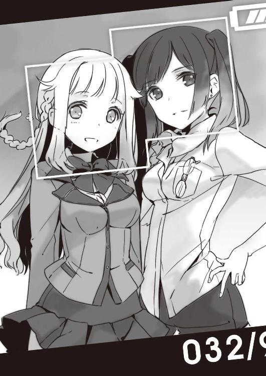
なんの抵抗もなくシャッターは降り、今日のこの瞬間を俺は確かに閉じこめた。
「見せて見せて、祐吾さん。わあ、この時代のカメラってこうなってるんですねえ」
「まあまあ悪くないじゃない。しょせんはコンデジレベルだけどね」
賑やかな女どもの声、蟬の合唱。
手の中の小さな永遠へと、俺はひっそりと目を落とす。途方もなく幸せな気持ちになりながら。
何故、桜庭が「自分の」相棒について話さないのか。
どうして、浅見さんが桜庭をうちの学校に押し込んできたのか。
......そんな謎には、未だ気がつかないまま。
バタフライ×ブレイクダウン １ 君が世界を救うというなら 了
初めましての方もそうでない方も、こんにちは。佐々原史緒でございます。
梅雨もおそらく目前、皐月の末に新シリーズ第一巻をお届けいたします。
前シリーズが終わったあと、「ご時世がご時世だし、次は明るくて元気な話にしようね」と担当氏とあれこれ相談の上、可愛い女の子いっぱい出しちゃうぞ、アイドルなんかも出しちゃうんだからね！ と書き始めた今作でございます。けれども......途中でわたくし、我に返りました。アイドルって歌を歌うんですよな？ おい待て、誰がその歌詞を書くわけよ？ と。
幼少時から文章作成に関してはさして苦労を覚えた記憶がないわたくしですが、たった一つだけ苦手だったもの......それはポエム。書けば書くほど、自分の情緒が非常に残念なことが露呈するばかりでございました。
長じて広告屋となり、一夜のうちにコピー文を一〇〇個書けとか言われたときなんかも、まじ涙目。「猛暑こそ朝からモリモリ！ 夏の朝食材料大セール！」とかならまだいいんですけども、「小鳥たちがあなたの目覚めを待っている......爽やかな朝の食卓に優しさ届けたい。クールモーニング・フェア」とかだと、もう手も足も出ねえっつーか、コピーの前に辞表を書きたくなる日々でございました。抜本的になんか間違えた職業選択だったと言わざるを得ません。いや、たいへん充実かつ有意義な日々で楽しかったんですけれども！ きっと使う側は「やべえの採用しちゃったわあ......」って感じだったと思うな！
小説書きに転向してからは、長い文を書くのが主となったので、この弱点が暴露することもそうそうあるまいと思っておりましたのに、ここへ来て重要キャラの一人が歌手とかって......誰なの、こんな設定した馬鹿者は！ （俺じゃよ！）
というわけで、中の人の実力不足で微妙な歌詞を歌わされているアイドルが登場しますが、設定的には国内有数の作詞家が詩を書いているはずですので、なんかこう、そんな気分でご覧になって下さいませ（土下座）。
また、作中に大人数で頑張るライバル・チームが登場いたしますが、この作品はフィクションであり、実在の人物・団体・事件にはいっさいまったくこれっぽっちも関係ございませんので、その点何とぞご了承下さいませ。断じて、山手線あるいは日比谷線の駅名を冠したスーパースターとは関係ございませんし、特にモデルにもしておりません、はい。おおおお大人数のアイドルなんて、昔からあったではございませんか！ セーラー服を脱がさなかったりとか後ろ指さされたかったりとか世界が羨む恋をしたりしなかったりとか！
同様に、東武線沿線に聳え立ち、この本が発売されます一週間ほど前に開業しましたタワーに似ていないこともない建築物が登場しますが、これもまた実在のものとはまったく無関係......というか、ホンモノの方は執筆中はまだ開業前で内部の取材とかもできなかったから無理だから！ 一から一〇まででっちあげるしかないから！
あと、作中に鹿児島弁を操る人物が出てくるのですが......実は、方言キャラを出すときは、いつもネイティブの人に監修してもらっております（ヤ◯ザ映画からの耳コピで広島弁覚えた東欧人＠スイート・ホーム・スイートを除く）。が、申し訳ございません、今回は鹿児島県民の知り合いがついに見つからなかったです。よっぽど、ツイッターかなんかで「鹿児島の人募集！」ってやろうかと思った......男女や世代でまるで違うという難解さらしいですね、薩摩言葉。いろんな文献やらＤＶＤやら見つつ頑張りましたが、ものすごく間違ってる気がします。ホントにすみませんです......。
更に。
今回の主人公の趣味がカメラという設定なので、スタジアムで選手を撮り続けてン年の友人に頼んで、初めてデジイチなるものを触らせてもらいました。なんでもカメラにおまかせできるコンデジしかいじったことがなかったので、すごく勉強になりました。ちゃんとした写真を撮るためには何故にあんなにもいっぱいかつバラエティなレンズが必要なのか、よく判ったです。奥が深い......重い機材一式担いで家まで来て下さったＳさん、本当にありがとうございます。
御礼とお詫びと言えば、なんといっても今回イラストを描いて下さったＨ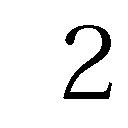ＳＯ様。お名前を拝見するたびに、化学記号がなかなか覚えられなかった涙の高校時代を思い出します。実は相変わらず横文字あやふやで、心の中でそっと「硫酸さん」とお呼びしていることを告白すると同時にお詫び申し上げます。それはそれは愛らしい娘さんたちをたくさん描いて下さってありがとうございました！ 服や髪型などもすっごく可愛いくて、靴まで素敵で。せせりちゃんのパンプスとかあったら欲しいです。
担当氏におかれましては、今回、いろんな意味でやたらと難産だったため、いろいろご心配おかけいたしました。特に体調面では相変わらずアレな感じで、ご迷惑おかけしてばかりで申し訳ない限りです。
末筆となりましたが。
毎度シリーズが終わる度に、「なるべく近いうちに次作をお目にかけたく存じます」みたいなことを言っておるのですが、今回も気がつけばうっかり一年以上が経過しておりました。生き馬の目を抜くラノベ界においてあるまじきダメっぷりですのに、おつきあい下さる読者のみなさま、本当に本当にありがとうございます。こうしてお話を始めた以上は頑張ってキリキリ書き進めたく思いますので、できれば最後まで応援して下さいますようお願い申し上げます。
それでは、またお会いできる日を夢見つつ。
二〇一二年卯月 佐々原史緒 拝
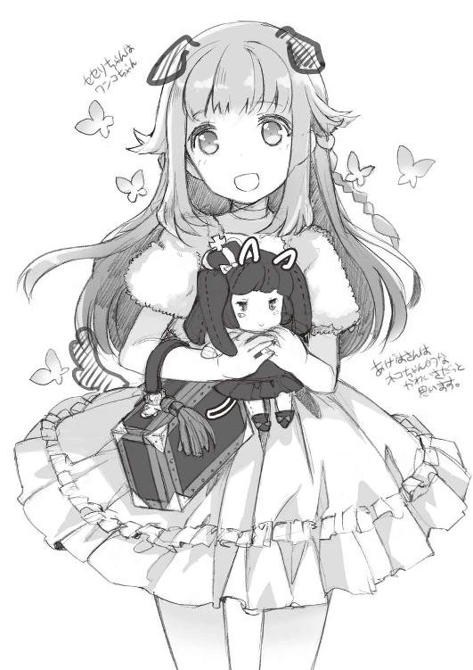
著者
Shio Sasahara
東京都世田谷区出身、八月一○日生まれ。広告代理店勤務中、ふとしたことから二人三脚漫画家の原作担当としてデビュー。二◯◯一年、単独名義にて小説文庫本を初上梓。近著に『創立!? 三ツ星生徒会』『死神少女と１／２アンデッド』など。
HP : http://unapara.net/
twitter : s_sasahara
イラスト
ＨＳＯ
海外を拠点にライトノベル挿絵やゲームのキャラクターデザインで活躍中。『魔法少女☆仮免許』（ＭＦ文庫Ｊ）、『ボーイ・ミーツ・ハート！』シリーズ（ＧＡ文庫）など。
http://www.island-horizon.com/電子版 ファミ通文庫
バタフライ×ブレイクダウン
１ 君が世界を救うというなら
著者／佐々原史緒
イラスト／HSO
2013年2月26日 電子版(EPUB3)ver1.0 制作
発行者 浜村弘一
発行所 株式会社 エンターブレイン
http://www.enterbrain.co.jp/
デザイン 山崎 剛 西野英樹（AFTERGLOW）
(c)2013 Shio Sasahara
PUBLISHED BY ENTERBRAIN, INC.
本電子書籍はファミ通文庫『バタフライ×ブレイクダウン １ 君が世界を救うというなら』
(2012年6月11日発行初刷)を元にして制作しております。